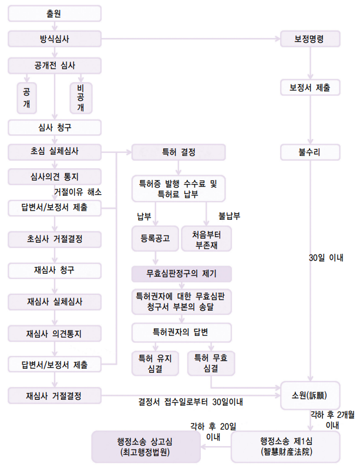
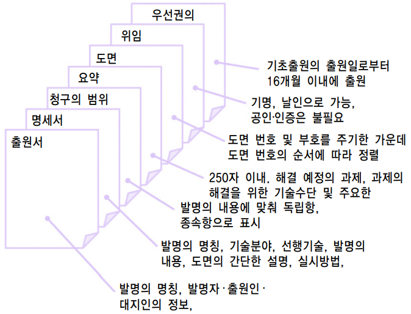
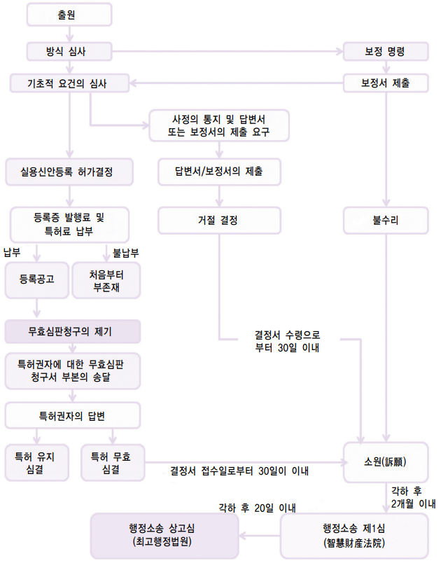
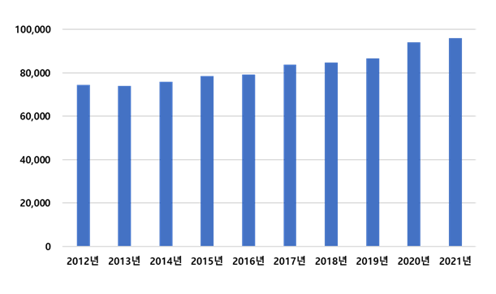
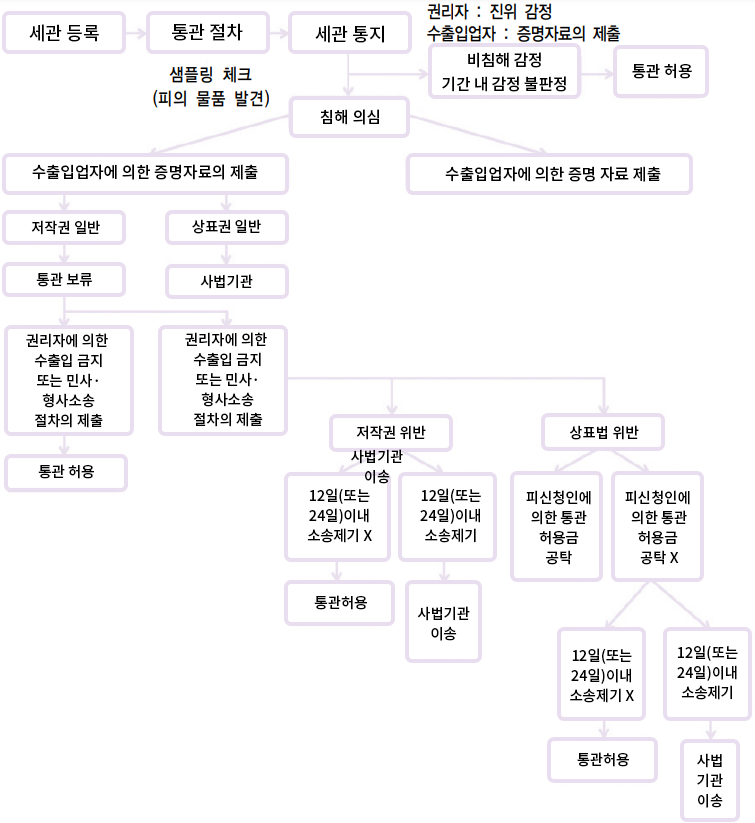
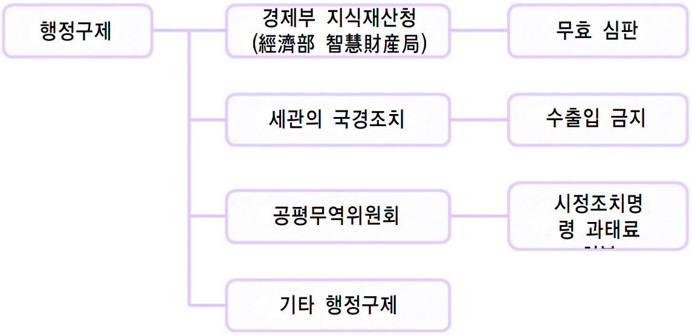
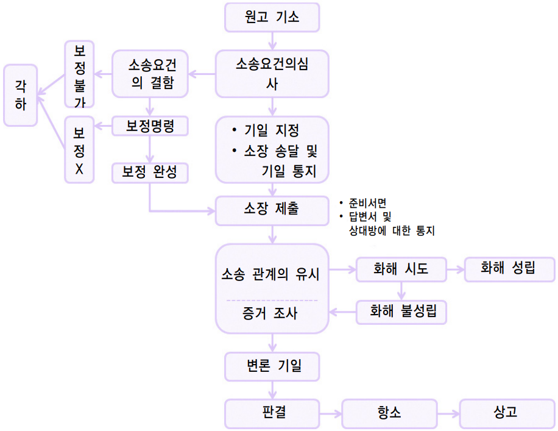
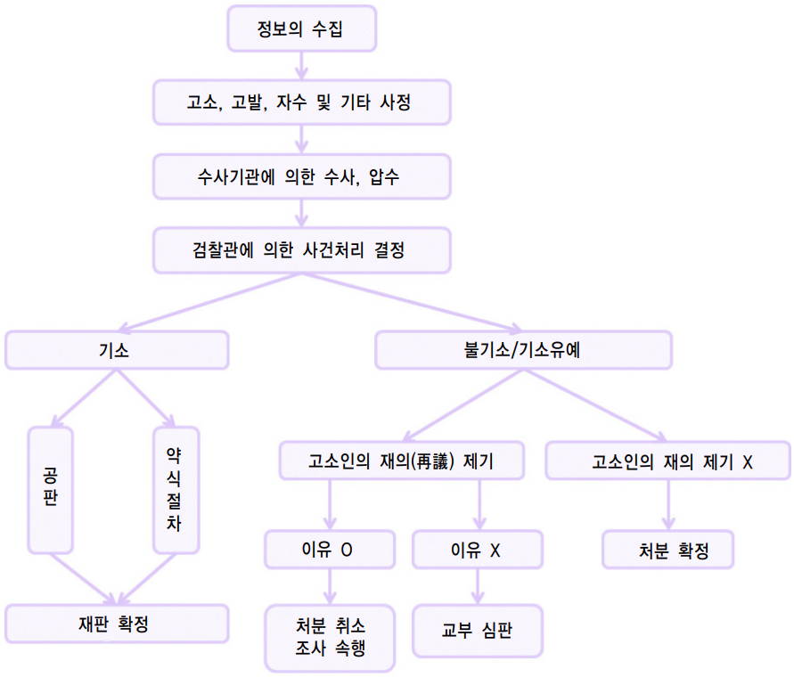
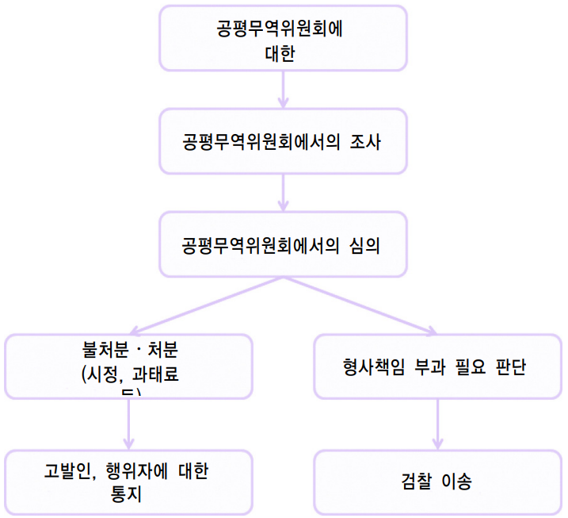
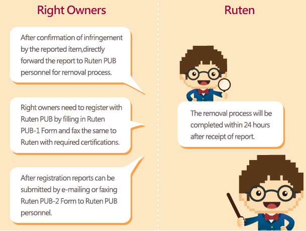

•외교관계 : 양자관계 현황
-1949.01. 외교관계 수립
-1992.08. 외교관계 단절
-1993.07. 비공식관계 수립합의 후 상호대표부 설치 운영 - 주 타이베이 한국대표부(1993.11.) - 주한 타이베이대표부(1994.01.)
•투자현황 :
-對대만 투자 : 262.4억불
-對한국 투자 : 415.0억불
•교역 : 총교역액 : 477.7억불 - 2021년 대만은 한국의 5위 교역대상
-수출액 : 242억 9000만$
-수입액 : 234억 8000만$
•교민현황 :
-대만 체류 우리 교민 약 7,100명 (유학생, 영주교민, 상사주재원 등)
-한국 체류 대만인 약 32,000명
* 2021년 인적교류(0.7만명)
-대만 방문 한국인 : 0.3만명
-한국 방문 대만인 : 0.4만명
나. 현황
[표 2] 對 韓 무역협정 체결현황
출처 : KOTRA
협정명
체결국가
체결일자
발효일자
비고
성실무역업체 상호인정약정
한국
2015.12.22
2015.12.22
-한국 수출품 관세, 통관절차 간소화
이중과세방지약정 체결
한국
2021.11.17
미정
-투자보장 및 이중과세방지
2. 경제관련 정보
[표 3] 대만 경제관련 지표 현황
출처: IMF('22년 4월 기준), 대만 관무서, 대만 중앙은행, KOTRA
경제지표
2017
2018
2019
2020
2021
경제성장률(%)
3.31
2.79
3.06
3.36
6.28
명목 GDP( 십억$)
590.7
609.2
611.4
669.3
789.5
1인당 GDP(PPP, $)
48,501
51,015
53,476
56,038
62,527
1인당 명목 GDP($)
25,062
25,826
25,903
28,405
33,775
정부부채(% of GDP)
34.51
33.92
32.73
32.6
28.47
물가상승률(%)
1.09
1.5
0.55
-0.18
1.82
실업률(%)
3.76
3.71
3.73
3.85
3.95
수출액(백만$)
315,506
334,026
329,166
345,136
446,393
수입액(백만$)
257,230
284,819
285,679
286,175
381,521
무역수지(백만$)
58,276
49,207
43,487
58,961
64,872
외환 보유고(백만$)
451,500
461,784
478,126
529,911
548,408
이자율(%)
1.38
1.38
1.38
1.13
1.13
환율 (자국통화)
30.44
30.16
30.93
29.58
28.02
2022년 대만 경제는 3~4%대 성장이 전망됨. 2022년 대만 경제는 역기저 효과로 수출, 투자 부문의 성장률이 낮아지는 것은 불가피하나 전반적으로 양호한 흐름을 이어갈 것이며 민간소비도 회복돼 균형적으로 발전할 것이라고 대만 주계총처(대만 통계청)는 예상
[표 4] 주요 기관별 2021~2022년 대만 경제 전망치
자료: 기관별 홈페이지
구분
기관명
2021년
2022년
발표일
대만 기관
행정원 주계총처(통계청 격)
6.09%
4.15%
2021.11.26
중화경제연구원(정부 싱크탱크)
6.05%
3.67%
2021.12.10.
대만경제연구원(민간 싱크탱크)
6.10%
4.10%
2021.11.08.
해외 기관
IMF
5.86%
3.34%
2021.10.12.
IHS Markit
6.0%
3.2%
2021.11.24.
EIU
5.7%
3.3%
2021.11.10.
2021년은 수출·투자가 성장 견인, 2022년은 소비도 회복돼 수출·투자와 함께 골고루 성장
- 2021년 대만 경제는 2분기 들어 코로나19가 급격하게 확산되면서 민간소비가 위축됐으나 수출, 투자가 예상보다 좋은 성과를 올리며 경제성장을 견인함
가. 수출
수출은 대만 경제의 중요한 성장 엔진 중 하나로 2020년 기준 대만의 연간 수출액은 3,451억 달러로 6,693억 달러인 GDP 대비 규모가 52%에 달함. 대만의 수출 실적은 2021년에도 높은 성장세를 이어감. 2020년부터 월별 수출 동향을 살펴보면 뚜렷한 증가세가 확인됨. 규모면에서 상승선을 그리고 있을 뿐만 아니라 2021년에는 춘절 연휴로 조업일수가 짧았던 2월을 제외하고 전년 동월 대비 증가율이 20~30%대에 달함. 2021년 10월에는 월간 기준 첫 400억 달러 기록을 세웠고 연간으로도 첫 4,000억 달러 돌파가 예상됨
2021년 대만 수출이 신기록 행진을 이어간 데는 1위 수출품인 반도체의 기여가 큼. 반도체는 대만 전체 수출에서 약 35%를 차지하며 2021년 1~11월 수출 실적은 전년 동기 대비 26.8% 증가함. 특히, 전자제품류는 전체 수출에서 약 14%를 차지하며 2021년 1~11월에는 전년 동기 대비 증가율이 25.1%에 달함
[그림 1] 대만의 2021년 1~11월 수출 동향(단위: 억 달러, %)
*자료: 대만 경제부 국제무역국 수출입통계시스템
2022년 수출 규모는 4,720억 달러를 넘을 것으로 전망됨. 2021년 수출 실적이 약 4,448억 달러에 달할 것으로 예상하고 있으므로 2022년 수출은 2021년 대비 6% 이상 증가할 것이라는 전망임. 분기별 수출액은 각각 1,100억~1,200억 달러에 달할 것으로 예상되며 역기저효과로 분기별 성장률은 점차 낮아지는 흐름을 보일 전망임. 수입도 수출과 마찬가지로 성장률 둔화가 예상되는데 역기저효과가 수출보다 수입에 더 크게 작용해 2022년 3분기에는 성장률이 마이너스대에 진입할 것으로 전망됨
[표 5] 대만의 2022년 수출입 전망치(단위: 억 달러, %)
주: 증감률은 전년 동기 대비
자료: 대만 행정원 주계총처
1분기
2분기
3분기
4분기
연간
수출
금액
1,111
1,146
1,215
1,250
4,721
증감률
13.38
5.12
3.71
3.54
6.14
수입
금액
954
971
1,006
1,042
3,974
증감률
14.20
6.11
-0.63
-1.01
4.13
나. 투자
2021년에는 글로벌 공급망 재편, 반도체 수요 증가 등에 따라 반도체 업종을 중심으로 한 민간투자 활동도 활발함. 기업의 투자 동향을 가늠하는 지표로 활용되는 자본설비 수입 통계를 살펴보면 2021년 1~11월 기준 수입액은 약 624억 달러로 전년동기대비 33.6% 증가함
- 자본설비 수입액에서 거의 절반 비중을 차지하는 반도체 장비의 경우 2021년 1~11월 수입이 전년 동기 대비 41.9% 증가함. 반도체 장비 수입액은 월별 증가율 대부분이 전체 자본설비의 평균 증가율보다 높았음. 반도체 산업을 중심으로 민간투자가 활발했던 것을 방증한다고 할 수 있음
[그림 2] 2021년 1~11월 자본설비 및 반도체 장비 수입 동향(단위: 억 달러, %)
*주: 반도체 장비 수입액은 자본설비 수입에 포함됨
*자료: 대만 재정부
대만 내 자본재 생산지수도 민간투자 호조를 보여주고 있음. 2021년 1~10월 기준 대만의 자본재 생산지수 증가율은 12.3%이며 월별로 대부분이 10%대 증가율을 기록함
[표 6] 2021년 1~10월 대만의 자본재 생산지수 증감률(단위: %)
*주: 생산지수는 2016년을 100으로 함
*자료: 대만 경제부 통계처
1월
2월
3월
4월
5월
6월
7월
8월
9월
10월
1~10월평균
생산지수
137.2
105.7
145.9
139.2
146.7
150.3
151.6
156.1
148.2
145.8
142.6
증감률
26.7
-1.9
10.8
11.8
15.1
15.4
11.1
19.4
5.3
10.4
12.3
2022년 투자는 수출과 마찬가지로 역기저효과에 따른 성장률 둔화가 예상되나 성장세는 지속할 것으로 예상됨. 총고정자본형성에서 주체별로 민간이 80%가 넘는 비중을 차지하는데 2021년 주체별 투자 증가율은 민간이 18.88%에 달할 것으로 예상됨. 2021년 성장률이 높았던 만큼 2022년은 2%대 성장에 그칠 것으로 전망됨. 그러나 반도체 업계의 지속적인 투자 확대, 재생에너지 개발 확대 등에 힘입어 투자 부문의 성장 흐름은 이어질 것으로 기대되고 있음
[표 7] 대만의 2021~2022년 투자 성장률(단위: 억 대만 달러, %)
*자료: 대만 행정원 주계총처
*총고정자본형성 : 생산주체가 자본재 구입에 지출한 금액
총고정 자본형성
주체별 비중
전체 평균 성장률
주체별 성장률
민간
정부
공영사업
정부
민간
공영사업
2021년
56,627
84.04
10.72
5.23
14.96
18.88
-6.29
6.37
2022년
59,412
83.52
11.13
5.35
2.99
2.52
5.04
6.42
다. 소비
수출, 투자와 달리 민간소비 부문은 5월 들어 대만 내 코로나19가 급격하게 확산돼 위축을 피할 수 없었음. 민간소비 관련 주요 지표 중 하나인 소매업·요식업 매출액은 5월 들어 감소하기 시작해 8~9월까지 마이너스 성장이 이어짐. 확산세가 잡히고 방역 상황이 나아지면서 소매업과 요식업은 각각 9월과 10월에 전년 동월 대비 성장률이 플러스로 전환했으나 반등폭이 크지는 않았음. 연간 민간소비 성장률은 0.07%로 전망됨
[그림 3] 대만의 2021년 소매업·요식업 매출액 증감 추이(단위: %)
*자료: 대만 경제부 통계처
2022년 민간소비는 코로나19 여파로 위축됐던 상황이 개선돼 회복세를 보일 전망임. 대만 주계총처는 연간으로 5.36% 성장을 전망함. 기저효과도 있지만 대만 내 방역 상황이 안정된 데 따른 보상 심리가 소비를 촉진하고 1인당 최저생계비 인상과 소득세 관련 공제액 상향조정으로 세금 부담이 줄어든 점 등이 민간 소비를 반등시킬 것이라고 분석함
[표 8] 대만의 2021~2022년 민간소비 성장률 전망(단위: %)
*자료: 대만 행정원 주계총처
2021년
2022년
분기별
1분기
2분기
3분기
4분기
1분기
2분기
3분기
4분기
2.66
-0.46
-5.60
3.62
3.17
6.88
8.36
3.41
연간
0.07
5.36
3. 지식재산권 분야 정보
2022년 5월 20일, 대만 법무부(法務部)는 국가 핵심기술의 영업비밀 보호를 강화한 ‘국가안전법(國家安全法)’ 개정 초안이 입법원(立法院) 제3독회(입법에 필요한 3회 심의)를 통과했다고 발표함
- (주요내용) 이번 개정은 국가 첨단산업의 경쟁력을 보호하고 국가 경제발전의 성과를 견고히 함과 동시에 국가 핵심기술에 관한 영업비밀이 외국의 적대 세력이나 각종 단체에 유출되는 것을 방지하기 위하여 정부가 핵심기술에 관한 영업비밀의 단계적 보호 시스템을 적극적으로 구축하는 것을 목적으로 함
대만 법무부에 따르면, 이번에 통과된 개정안의 핵심은 국가안전법에 ‘경제간첩죄(經濟間諜罪)’와 ‘국가 핵심기술 영업비밀의 역외사용죄(國家核心關鍵技術營業秘密之域外使用罪)’를 추가하는 것임
- 여기서 국가 핵심기술은 적대 세력에 유입될 경우 국가 안보와 산업경쟁력, 경제 발전에 심각한 피해를 입히는 기술로 정의됨
- 또한, 개정안은 ‘경제간첩죄’ 사건의 제1심을 ‘지식재산 및 상업 법원(智慧財產及商業法院)’이 관할한다고 명시함
- 동 개정안에 따라 주요 핵심기술의 영업비밀을 도용, 횡령, 사기, 협박, 무단복제 또는 기타 부정한 방법으로 취득, 사용, 누설할 경우, 5년 이상 12년 이하의 징역 또는 500만 대만 달러 이상 1억 대만 달러 이하의 벌금을 부과 받을 수 있음(경제간첩죄)
- 또한, 대만 역외(해외, 중국 본토, 홍콩, 마카오 등)에서 주요 핵심기술에 관한 영업비밀을 사용할 경우, 3년 이상 10년 이하의 징역 또는 500만 대만 달러 이상 5,000만 대만 달러 이하의 벌금을 부과 받을 수 있음(국가 핵심기술 영업비밀의 역외사용죄)
- 개정 초안이 제3독회를 순조롭게 통과되면서 대만 행정부와 입법부는 자국 첨단 산업의 경쟁력을 보호하고 국가 안보를 수호하고자 하는 의지를 확고히 보여줌
제2절 현지 유관기관 정보
1. 산업재산권 기관
가. 대만특허청(経済部智慧財産局, TIPO)
대만의 지식재산권 등록 및 각종 행정 절차, 서비스, 정책 등을 담당하는 기관은 우리나라 특허청에 해당하는 기관임
- 주소: B1, No. 185辛亥路二段大安區台北市106 (B1, No. 185, Section 2, Xinhai Rd, Da’an District, Taipei City, Taiwan 106)
- TEL: +886227380007
- 홈페이지: http://www.tipo.gov.tw/
나. 지적(지혜)재산권 법원
지식재산권침해에 관한 소송에 대하여는 종전에는 보통민사법원과 형사법원이 관할하였으나, 2008년 7월 이후는 ‘지혜재산안건심리법(智慧財產案件審理法)’이 실시되면서 제출된 지식재산에 관련한 민사소송, 형사소송의 상소안건은 지혜재산법원(智慧財產法院)의 관할이 되고, 지혜재산안건심리법(智慧財產案件審理法)에 근거하여 심리되고 있음
- 주소：220228 新北市板橋區縣民大道2段7號3樓
- TEL: +886-2-2272-6696 (10 線)
- 홈페이지: https://ipc.judicial.gov.tw/tw/
2. 그 외 지식재산권 유관기관
가. 세관․경제부 국제무역국
국경조치는 세관이 대응함. 또한 대만무역법 제17조에 의하여 세관 등의 기관은 ‘대만 또는 기타 국의 법령에 의하여 보호를 받고 있는 지식재산권’이 침해된 사실을 발견하고 사건이 경제부 국제무역국에 이전된 경우, 동국은 침해자에 대하여 경고, 3만 대만달러 이상 30만 대만달러 이하의 과태료의 처분 또는 1개월 이상 1년 이하의 수출입 정지 처분을 할 수 있음
(1) 대만관세총국(臺灣關稅總局 (Customs Administration, Ministry of Finance))
아시아변리사회는 지난 69년 일본 도쿄에서 한국, 일본, 대만 등 3국의 주도로 결성됨. 30년이 지난 현재 3개국외 홍콩, 인도네시아 등 15개 정회원국과 네팔, 스리랑카 등 3개 준회원국 1800여명을 회원으로 두고 있음
- 주소: 台北市106敦化南路一段245号8階
- Tel: 886-2-2781-4111
- 홈페이지: http://www.apaa.org.tw
다. 한국 기관
(1) 대한민국 대표부
- 주소: 台北市 基隆路 一段 333號 1506室 (郵遞區號11012) 駐台北韓國代表部 (KOREAN MISSION IN TAIPEI, Rm. 1506, 15F. No. 333, Sec.1, KeeLung Road, TAIPEI, Taiwan)
- 홈페이지: https://overseas.mofa.go.kr/tw-ko/index.do
- Tel: 886-2-2578-8320~5
비자, 가족관계등록, 국적관련 : 886-2-2758-8320~5(ext 24)
여권, 공증, 병역 관련 : 886-2-2758-8320~5(ext 25)
사건, 사고 : 886-2-2758-8320~5(ext 23 또는 29)
기업 지원 : 886-2-2758-8320~5(ext 16)
- 공관 업무시간: 08:30~17:30(점심시간 12:00-13:30), 우리나라 및 대만 국정공휴일 휴무
(2) KOTRA
[KOTRA 대만 지사]
타이베이 무역관은 1971년 7월 개설되었고, 1992년 단교 당시에도 민간차원의 교류 지원을 위해 계속 운영되어 왔음. 현재는 마케팅, 조사, 투자유치 등 한국기업과 대만기업간의 비즈니스 협력을 위해 근무하고 있음
※ 사업분류 1,2,3은 특허청 산하 사업임
※ 위 자료는 2022년 기준으로 작성되었으며, 세부 지원 기준 등 자세한 사항은 각 홈페이지 링크를 통해 확인이 필요함
PARTII 지식재산권
제1절 개요
1. 법률체계 및 지식재산권 관련 법률
가. 제도 소개
대만에서는 발명 특허뿐만 아니라 실용신안 및 디자인도 모두 전리법(專利法)에서 규율하고 있음. 즉 우리나라와는 달리 실용신안이나 디자인의 보호를 위한 별도의 법률은 존재하지 않으며, 관련 내용은 전리법에 포함되어 있음
- 발명 특허(invention patent)는 자연 법칙을 이용한 기술적 사상의 창작물을 의미
- 실용신안(utility patent)은 물품의 형태, 구조 또는 설치에 대하여, 자연의 행동을 이용한 기술적 개념의 창작을 지칭
- 디자인 특허(design patent)는 형상, 모양, 색채, 또는 이들을 결합을 이용하여 시각적 효과를 통해 품질, 친밀감, 및 가치를 높여 시장 경쟁력 및 시각적 만족감을 생성
이들은 제도 운용에 있어 상이함
- 발명 특허의 경우 출원일 후 18개월이 지나는 시점에서 공개하는 출원공개제도를 채택하고 있으나, 실용신안이나 디자인은 이러한 공개제도가 없음
- 발명 특허의 경우에는 심사청구제도에 따라 심사청구가 있는 출원에 대하여만 실질 심사를 하지만, 실용신안, 디자인은 심사청구제도가 없음
[표 11] 출원상의 제도 비교
실체심사
출원공개
심사청구
발명특허
O
O
O
실용신안
X
X
X
디자인
O
X
X
“상표”는 브랜드라고도 하며, 특정 상품 또는 서비스의 출처를 식별하기 위하여 사용됨. 상표권 보유자의 권리와 소비자의 이익을 보호하며, 부정 경쟁을 방지하고, 또한 산업 또는 상업의 발전을 돕기 위하여, 상표법은 상표 출원을 할 수 없는 조건을 명확하게 규정하고 있으며, 타인의 등록된 상표를 도용하는 것을 금지하고 있음(상표법 제1조)
나. 관련 서류
전리의 출원, 유지 내지 무효심판에는 소정의 서류를 제출해야 함. 양식은 대만 특허청 웹사이트에서 다운로드 할 수 있음. 전리와 관련한 필요 서류에 대하여 목록을 파악하고, 이를 각각의 출원 절차(출원 시, 출원 후, 공고 후)로 구분하여 설명함
• 디자인
- 연합디자인원(連合新式樣専利申請書): 제110조 제5항 본문, 시행세칙 제36조 제1항
(4) 서면출원과 전자출원
전리법에 의하여 출원 및 기타 절차는 전자방식으로 할 수 있음. 따라서 특허청에 대한 출원 등의 절차는 컴퓨터에서 온라인으로 하는 방법(전자출원)과 서면으로 하는 방법이 있음. 다만 대만에 주소 또는 영업소가 없는 자는 출원 절차 진행을 대만 대리인에게 위임하여야 하므로, 본인이 직접 컴퓨터 등을 이용하여 전자출원을 할 수 있는 것은 아님
2. 최근 개정사항 및 동향 소개
2021년 상반기에 세 종류 산업재산권(특허, 실용신안, 디자인 포함)의 출원 건수는 총 35,264건이었고 상표 등록 출원 건수는 46,379건으로 조사됨. 이는 각각 전년 동기 대비 4% 증가, 7% 증가한 것으로 모두 성장세를 보임. 주요 출원인으로는 대만 TSMC는 출원 건수가 1,263건에 달해 처음으로 1천건을 돌파하며 독주 상태에 있고 외국 법인 중에서는 미국 Qualcomm이 454건의 특허를 출원하여 가장 많았음. 상표 등록 출원 건수는 다시 과거 최고 기록을 경신하며 대만인과 외국인 동시에 각각 7%씩 성장함
가. 2021년 상반기 산업재산권 출원
(1) 대만인의 특허 출원 건수는 10 % 정도의 증가
대만이 신청 수리한 세 종류의 산업재산권 출원 중 특허는 23,876건을 돌파하였고 대만인과 외국인의 출원은 모두 전년 동기 대비 증가하였으며, 특히 대만인의 성장률(13%)은 외국인의 성장률(6%)을 크게 웃돌고 있음. 실용신안과 디자인에 대해서도 외국인의 출원 건수가 각각 22%, 5% 증가하였음
(2) TSMC의 특허 출원 건수는 사상 최고
대만 기업에 의한 특허 출원 건수는 총 7,650건으로 전년 동기 대비 증가하였고 대만인의 특허 출원 전체의 약 79%를 차지하고 있음. 지난 연도별 상반기를 비교하면 기업의 특허 출원 건수는 5년 연속 성장하였고, 게다가 2021년 상반기 성장률은 최근 5년 가운데 최고를 기록함. 이것은 대기업의 출원 건수가 21%로 급성장한 것이 주요 원인이 되고 있음
- 출원인별로 보면, TSMC의 출원 건수가 1,263건으로 단일 상반기로써는 처음으로 1천건을 상회하고, 출원 건수로도 사상 최고를 기록, 대만 기술 혁신에 중요한 역할을 하고 있음. 이와 동시에 성장률도 237%에 이르러, 대만의 다른 출원인보다 훨씬 적극적이라고 할 수 있음. 또한 디자인 등록 출원에 대해서는 Coplus가 59건으로 가장 많았음
(3) 양명교통대학이 특허 건수에서는 대학 가운데 톱을 차지
대만 대학의 특허 출원 건수는 전년 동기에 비해 다소 감소세를 보였음. 대학 전체 가운데 국립인 양명교통대학이 59건으로 선두를 차지하였고 사립 학교가운데는 곤산대학이 26건으로 가장 많았음. 또한 2021년 상반기 공립학교의 특허 출원 건수는 전년 동기 대비 4% 증가했고, 대학 전체에서 차지하는 비율은 64%로 상승하고 있음
(4) 대만 연구기관의 특허 출원 건수는 소폭 증가
대만 연구기관의 특허 출원 건수는 전년 동기 대비 4% 증가하고 그 중에서도 공업기술연구원이 101건으로 가장 많았음
(5) 금융 업계의 특허 출원 가운데서는, 중국신탁산업은행이 최다 출원인으로 등극
대만 금융 세 산업(은행, 증권, 보험)에 의한 특허 출원은 72건으로 실용신안 등록 출원은 267건이며, 모두 은행이 가장 적극적이었는데 특히 중국신탁상업은행이 특허(19건), 실용 신안(66건)으로 두 부문 모두, 금융 세 업계의 선두를 차지함
(6) 외국인으로는 미국 Qualcomm이 특허 부문, 스위스 Harry Winston이 디자인 부분에서 최다를 차지
대만에서 지적재산권 포트폴리오를 구축하고 있는 국가 가운데 특허와 디자인 분야 출원에 대해서 일본이 각각 6,044건과 512건으로 가장 적극적이며, 실용신안에 대해서는 중국이 358건으로 가장 많았음
- 출원인별로 보면, 특허 출원 건수는 Qualcomm이 454건으로 가장 많았고, 성장률은 한국의 Coupang Corp.가 442%로 최고를 기록함. 디자인 등록 출원에 대해서는 스위스 Harry Winston이 97건으로 가장 많았음
나. 2021년 상반기 상표 출원
(1) 대만인의 상표 등록 출원 건수는 다시 최고 기록 갱신
접수한 상표 등록 출원 건수는 46,379건(분류 기준으로 59,814건)에 달해 전년 동기 대비 7% 증가함. 대만인 및 외국인 출원 모두 성장했는데 특히 대만인의 상표 출원은 35,048건으로 다시 최고 기록을 경신함
(2) 대만인은 제35류, 외국인은 제9류의 출원 건수가 최다
분류별로 보면, 대만인은 제35류 (광고, 기업 경영 및 소매 및 도매 서비스 등)의 출원이 6,919건으로 가장 많았고, 16% 성장함. 외국인의 출원 건수를 국가(지역)별로 보면 중국이 2,333건으로 가장 많았고, 분류별로 보면, 제9류(컴퓨터 및 하이테크 제품 등)이 2,115건으로 가장 많았음
출원인별로 보면, 대만인 및 외국인 모두 출원 건수가 크게 성장함. 대만에서 전국 각지에서 체인사업을 전개하고 있는 편의점 브랜드 FamilyMart가 145건으로 선두를 차지했으며, 2위는 식품회사인 통일기업이 139건 출원함. 외국인 가운데는 홍콩의 Bunny Girl Limited와 케이만 군도의 Ulao Group Corp.이 각각 135건과 90건으로 1위와 2위를 차지함
(3) 업종별로는 농업 식품 산업 선두
업종별로 보면, 대만인은 「농업 재료」에서 10,621건 출원해 다른 산업보다 가장 많았고, 외국인으로 가장 많았던 출원 업종은「건강 의학」 분야로 3,654건으로 조사됨
다. 최근 개정 사항
현재 적용되고 있는 전리법과 상표법은 각각 2022년 5월 4일에 시행된 것임
[표 15] 지식재산권 관련 법률 개정 현황
법률명
개정 현황(2006년 이후)
전리법
현행법 (2022.05.04. 시행)
상표법
현행법 (2022.05.04. 시행
저작권법
현행법 (2022.05.04. 시행)
영업비밀보호법
현행법 (2022.05.04. 공포)
(1) 디자인 특허의 존속기간 연장
개정 전리법에 따르면 디자인특허의 존속기간은 개정특허법 시행 후 12년에서 15년으로 연장됨. 개정 전리법 시행 당시 만료되지 않은 디자인특허는 자동으로 15년으로 연장됨
(2) 등록결정 후 분할출원 기간의 완화
출원인은 등록결정 통지서를 받은 날부터 30일이 아닌 3개월 이내에 발명특허출원 또는 실용신안특허출원을 분할출원할 수 있음
(3) 실용신안 특허에 대한 등록 후 수정은 실질 심사 대상이지만 특정 단계에서만 보정 가능
구 전리법에 따르면 무효소송 없이 사후보정신청은 형식심사만을 거쳐 실용신안특허권자는 “언제든지 사후보정신청”을 할 수 있게 하였음
형식적 심사를 수행할 때, 특허청은 일반적으로 문구의 약간의 수정이 있는 경우에도 형식적 변경이 아닌 실질적인 변경으로 간주했었음. 이와 같이 실용신안 특허권자가 특허권 침해소송을 제기하지 않은 채 사후보정을 수행하는 것은 완전히 불가능하지는 않더라도 상당히 어려운 일이었음
문제를 해결하기 위해 수정된 전리법에 따라 실용신안의 등록 후 정정은 다음과 같은 특정 단계에서만 신청할 수 있음
(i) 실용신안특허에 대하여 무효소송이 제기되어 아직 계류 중인 경우
(ii) 실용신안 특허에 대한 기술 평가 보고서를 받기 위한 요청이 제출되었지만 특허청이 아직 평가 보고서를 발행하지 않은 경우 또는
(iii) 실용신안특허를 근거로 제기된 특허침해소송이 법원에 계속 중인 경우
(4) 무효화 절차의 엄격한 기한
구 전리법에 따르면 특허청이 결정을 내리기 전에 보완적 무효 요약, 증거, 반박 진술 및/또는 청구 수정을 언제든지 제출할 수 있어 무효화 절차가 지연되었음
- 개정 전리법에서는 무효심판 청구인이 무효소송을 제기한 날로부터 3개월 이내에, 또는 특허청으로부터 통지를 받은 날로부터 1개월 이내에 보충서식 및/또는 증거를 제출해야 한다고 규정
- 무효 소송에서 청구항 수정을 제출하는 것도 제한됨. 개정된 법률에 따르면 특허권자는 언제든지 제기할 수 있는 민사 소송으로 인해 수정된 경우를 제외하고 특허청에서 지정한 반론 제출 마감일 전에만 할 수 있음
라. 대만 상표법 주요 개정 사항
(1) 상표 우선심사제도(Fast Track Trademark Examination System) 도입
대만은 2020년 5월 1일부터 우선심사제도를 시행함. 우선심사 대상인 경우 심사기간은 약 2개월 단축되며, 우선 심사는 별도의 신청이 요구되지 않음. 이에 공식 수수료도 없음
하기 요건을 만족하는 상표출원은 자동적으로 우선 심사됨
- 전자출원일 것
- 전형적인 상표만 포함될 것(평면 상표 등록 출원 안건. 비전통적인 상표 등록 출원 안건, 증명 표장, 단체 표장, 단체 표장은 포함되지 않음)
- 상품 또는 서비스는 대만특허청이 권고한 고시 명칭에 해당할 것
- 공식적인 전자수수료 지불방법으로 수수료가 지불 될 것(약정된 계좌에서 계좌이체, 인쇄된 전자 출원 납입표로 무통장입금, eATM (웹 ATM)에서 전자출원입금표 번호로 입금)
- 대리인이 지정된 경우 상표출원서와 함께 위임장을 제출할 것
상기 조건을 채우는 상표등록출원 안건은 방식심사에 관한 사항이 모두 갖추어져 있어, 빨리 심사 일정에 들어갈 수 (패스트트랙 심사가 적용됨) 있고, 출원인은 현재의 평균 첫 번째 심사결과 통지(FA)까지의 기간보다 약 1.5개월 빨리 해당건이 등록될 수 있을지 알 수 있을 전망이며, 이에 따라 상표 판촉에 대한 전개와 운용을 가속화 할 수 있게 되었음
예를 들어, 출원일이 2020년 5월 1일인 패스트트랙 안건이 상표 심사관에게 할당된 날짜는 2020년 3월 1일에 출원된 통상의 상표 등록 출원 안건에 해당하며, 약 2개월 빨리 할당됨. 그러나 패스트트랙 안건이 주의해야 할 점은 상표 규정을 충족하는지의 판단에 따라 여전히 「선출원, 선등록 주의」를 원칙으로 하며, 선출원이 여전히 후출원된 상표의 등록을 배제할 수 있는 점에 유의해야 함
(2) 상표 구제 제도 관련
대만 지혜국은 2021년 1월 7일 국민의 권익 구제를 보장하고 그 기능을 높인다는 목표 아래 상표 관할 기관에 의한 심사·심판 절차를 강화하기 위하여 상표권 침해의 구제 단계 및 소송 절차를 개정하는 내용을 발표함. 개정의 중점은 다음과 같음
- 구제 계층의 통합 : 상표 관할 기관에 의한 상표 등록 및 출원건의 평가 및 상표권의 유효성 등 안건의 심결에 불복하는 경우 행정 소원을 거치지 않고 직접 소송을 제기할 수 있도록 함
- 소송 제도의 변화 : 현재 행정 소송에서 민사 소송 절차로 변경
- 이의 신청 제도의 폐지 : 대만에서는 상표 등록 출원의 심사 단계에서 이미 심사에 참고하기 위해 타사의 의견서를 도입하고 있음. 또한 이의 사유의 약 97%는 상표의 상대적 부등록 사유에 대해 이의를 제기하고 있음. 절차를 시작하는 주체에 관해서는 현재 무효 심판에서는 「이해 관계자」만으로 제한하여 청구할 수 있다는 것과 상당히 중복되어 있음. 따라서 이의 신청을 폐지하고 무효 심판과 취소의 두 가지로 통합함
(3) 상표 심사기준 개정 관련
상표의 형태가 점차 다원적이며 창의적으로 변하며, 요즘 소비자의 상표에 대한 인지와 사고가 이미 변화하고 있음. 이에, 대만 지혜재산국은 심사의 질과 일치성을 높임과 동시에 상표 식별성의 판단 기준을 더욱 시장의 거래 상황에 맞추기 위해 2022년 7월 26일 개정된 「상표 식별력 심사기준」 수정안을 발표함(2022년 9월 1일부터 시행)
- 「문자」유형 표지의 식별력 유무에 관한 판단: 외국어의 문자로 구성되는 형태의 유형 분류를 조정함. 또한 전체 설명 문자가 디자인에 의해 식별성을 갖는지에 대한 사례를 비교 판단의 참고로 제공
- 「글자의 자음모음과 숫자의 조합」 및 「숫자」의 판단：업계별의 차이 또는 사용 상황에 따라서, 그것을 고려한 기준을 보충하고 사례로 설명함
- 도형 상표의 판단: 「유행하는 도형」,「단순히 정보를 나타내는 도형」 및 「상품 포장 또는 상품 외관 디자인의 도형」의 설명과 사례를 추가함
- 국가명, 지리도형 및 지명의「산지」에 관련된 설명 또는 산지의 오인에 관한 판단 원칙을 추가함
- 근대에 이미 사망한 저명인의 성명 및 초상의 판단 기준을 추가해, 타인「초상」의 인정에 해당하는지에 대해서 참고 사례를 나타냄
- 상표도안에 포함되는 「회사의 정식명칭」혹은 「도메인명/ 인터넷주소」: 등록 후에 상표권을 양도하거나 명칭을 변경하거나 하여 상표권 범위의 명확성 및 상품 또는 서비스의 출처를 정확에 지정하는 기능에 영향이 미치는 것을 피하기 위해, 단순히 정보를 나타내는 사항에 해당하는 것으로 인정함
- 등록 출원하는 종교 관련 표지의 유형이 증가하고 있는 상황에 대응하여 종교적 그림, 용어 등 표지의 인정 기준을 보충하여 유형화된 구분으로 함. 전통적인 민속 문화 활동과 관련된 표지판의 심사 기준을 추가함
- 표어, 상용어, 신명사와 전문용어 등의 사항의 판단 기준을 변경함과 동시에 「관용어」의 심사원칙을 조정하여 명확히 함(2022.06)
(4) 상표 침해 소송 관련
대만의 CPTPP(Comprehensive and Progressive Agreement for Trans-Pacific Partnership, 포괄적·점진적 환태평양 경제 동반자 협정)가입을 추진하기 위해 대만 지혜재산국 2016년 CPTPP의 전신인 「환태평양 파트너십 협정(TPP)」과 대만의 현행법규와의 차이를 조사하여 「저작권법」 및 「상표법」의 일부 조문 개정안을 제출
- 현행 상표법에 있어서, 등록 상표를 모방한 상표등의 민사 책임에 대해서는 침해 행위자가 「분명히 알고 있었음」이라고 하는 침해 구성의 주관적 요건을 충족할 필요가 있다고 하는 규정을 삭제하고, 통상의 민사 손해배상 책임에서 정의되는 「고의」 또는 「과실」을 귀책조건으로 하는 규정으로 되돌림(제68조를 개정)
- 상표 또는 단체 상표의 라벨 등을 모방하는 행위에 대한 형벌 규정을 추가하고, 모방한 라벨, 포장 등을 수입하는 등의 권리 침해를 준비 및 협조하는 행위에 형벌을 부과함으로써 상표권자의 상품 판매 및 이익을 늘리고 상표 보호를 강화(제95조를 개정)
- 상품의 증명 표장을 모방하여, 타인이 행하는 권리침해 상품을 판매하거나 판매를 의도하여 소지하는 등과 관련한, 형사책임 행위에 대해서, 「분명히 알고 있었음」이라고 하는 주관적 요건을 삭제하고, 「고의」를 형사처벌의 요건으로 하여, 침해가 초래될 것을 예측할 수 있는 간접적인 고의 행위를 포함하는 규정으로 되돌려 사회의 정의와 기대에 부응(제96조 및 제97조를 개정)(2022년 1월)
*출처 : TIPLO
3. 한 페이지로 보는 지재권 제도
· 특허 공지예외주장 유예기간(Grace Period)이 6개월에서 12개월로 연장됨
· 기존의 공지예외를 주장할 수 있는 공개형태의 제한도 삭제되어, 어떠한 공개라도 신규성 유예기간의 적용을 받을 수 있을 수 있음
· 다만, 디자인 출원의 신규성 유예기간은 특허 및 실용신안과 달리 6개월임
· 미생물의 이용 및 새로운 종에 관한 특허의 실질 심사를 청구할 때 출원인은 미생물 생존 테스트 증명서를 제출해야 함
· 디자인 특허의 존속기간 15년으로 연장됨 (2022년 개정 전리법 시행 당시 만료되지 않은 디자인특허의 존속기간도 자동으로 연장됨)
· 빠른 상표 등록을 받기 위해서 상표 우선심사제도를 활용함
· 대만에서는 상표결정에 대한 이의를 제기할 수 없음 (심사단계에서 의견서는 제출할 수 있음) 따라서 상표청의 결정을 다투기 위해서는 무효심판·취소심판을 제기헤야함
· 설립중의 회사도 상표 출원 가능함 (단 설립 등록 후 등기사항 제출해야 함)
제2절 주요 제도 현황
1. 전리(특허,실용신안,디자인)
대만에서는 특허권(발명전리), 실용신안권(신형전리), 디자인권(설계전리)의 권리취득 등을 정하는 법률로 전리법(專利法)이라는 법률을 두고 있음. 중국어로 ‘專利’는 우리말로 번역하는 경우 통상 ‘특허’라고 하나, 실질적인 의미는 우리의 ‘특허’ 개념보다는 넓은 개념을 내포함. 대만의 전리법은 발명(특허), 신형(실용신안) 및 설계(디자인)에 관한 모든 규정을 정하고 있어서, 우리의 특허법, 실용신안법 및 디자인보호법에 상당하는 것임
[표 16] 전리법의 보호대상
대만
한국
발명
전리법 제21조
-자연법칙을 이용한 기술적 사상의 창작
특허법 제2조 제1항
-자연법칙을 이용한 기술적 사상의 창작으로서 고도(高度)한 것
실용신안
전리법 제104조
-자연법칙을 이용한 기술적 사상의 창작 가운데 물품의 형상, 구조 또는 그 조합에 관한 창작
실용신안법 제2조 제1항
-자연법칙을 이용한 기술적 사상의 창작(고안)
디자인
전리법 제121조
-물품의 전부 또는 일부의 형상, 모양, 색채 또는 이들의 결합으로 시각에 호소하는 창작
-물품에 응용하기 위한 컴퓨터 아이콘 (icons), 그래픽 유저 인터페이스(GUI) 및 한 벌의 물품
디자인보호법 제2조 제1항
-물품의 형상·모양·색채 또는 이들을 결합한 것으로서 시각을 통하여 미감을 일으키게 하는 것
가. 보호를 받기 위한 요건
특허, 실용신안 및 디자인의 등록요건으로서 산업상의 이용가능성(디자인은 산업상의 이용성), 신규성 및 진보성(디자인은 창작성) 등이 요구됨. 다만 이들 요건을 충족한 것이 모두 권리를 취득하는 것은 아니고, 선출원주의를 충족하여야 하며, 권리를 부여할 수 없는 발명, 고안 또는 디자인에 해당하지 않아야 함
다만 실용신안등록 출원에 대하여는 권리부여의 심사단계에서 산업상의 이용가능성, 신규성, 진보성 등의 실체심사를 하지 않음. 즉 별도의 일정 형식 요건을 충족하고 있는지 여부만을 판단하여 권리부여의 가부를 결정함. 고안이 산업상의 이용가능성, 신규성, 진보성 등의 요건을 충족하지 못했다면 등록 후 심판절차를 통하여 그 등록을 취소하는 방식을 취하고 있음
(1) 산업상의 이용가능성
특허 및 실용신안의 등록요건으로서의 산업상의 이용가능성은 산업상 제조 또는 사용할 수 있는 것을 의미함. 반면 디자인의 등록요건으로서의 산업상의 이용가능성은 일반적으로 대량 생산 가능성을 의미함
[표 17] 산업상 이용가능성
대만
한국
발명
전리법 제22조 제1항
-산업상 이용하는 발명
특허법 제29조 제1항
-산업상 이용할 수 있는 발명
실용신안
전리법 제120조: 제22조
-산업상 이용하는 고안
실용신안법 제4조 제1항
-산업상 이용할 수 있는 … 고안
디자인
전리법 제122조 제1항
- 산업상 이용하는 디자인
디자인보호법 제5조 제1항
- 공업상 이용할 수 있는 디자인
(2) 신규성
특허, 발명 및 디자인은 모두 절대적 신규성을 충족하여야 함. 즉 국내뿐만 아니라 외국 어디에서든 아래에서 열거하는 일정한 사실이 있다면 신규성을 상실함
[표 18] 신규성 요건
구분
대만
한국
발명
전리법 제22조 제1항
1. 간행물에 기재되어 있는 것
2. 공연 실시되고 있는 것
3. 일반인에 의하여 널리 알려져 있는 것
특허법 제29조 제1항
1. 특허출원 전에 국내 또는 국외에서 공지(公知)되었거나 공연(公然)히 실시된 발명
2. 특허출원 전에 국내 또는 국외에서 반포된 간행물에 게재되었거나 전기통신회선을 통하여 공중(公衆)이 이용할 수 있는 발명
실용신안
전리법 제120조: 제22조
1. 간행물에 기재되어 있는 것
2. 공연 실시되고 있는 것
3. 일반인에 의하여 널리 알려져 있는 것
실용신안법 제4조 제1항
1. 실용신안등록 출원 전에 국내 또는 국외에서 공지(公知)되었거나 공연(公然)히 실시된 고안
2. 실용신안등록 출원 전에 국내 또는 국외에서 반포된 간행물에 게재되었거나 전기통신회선을 통하여 공중(公衆)이 이용할 수 있는 고안
디자인
전리법 제122조 제1항
1. 실용신안등록 출원 전에 국내 또는 국외에서 공지(公知)되었거나 공연(公然)히 실시된 고안
2. 실용신안등록 출원 전에 국내 또는 국외에서 반포된 간행물에 게재되었거나 전기통신회선을 통하여 공중(公衆)이 이용할 수 있는 고안
디자인보호법 제5조 제1항
1. 디자인등록 출원전에 국내 또는 국외에서 공지되었거나 공연히 실시된 디자인
2. 디자인등록 출원전에 국내 또는 국외에서 반포된 간행물에 게재되었거나 전기통신회선을 통하여 공중이 이용가능하게 된 디자인
3. 제1호 또는 제2호에 해당하는 디자인에 유사한 디자인
2017년 개정된 대만 전리법에 의해, 종전 6개월이었던 신규성 상실 예외 주장 기간(Grace Period)가 12개월로 연장되고, 기존에 극히 제한되었던 공지예외 요건 및 사유들을 완화하였음
특허 및 실용신안의 신규성 유예기간을, 출원일 전 6개월에서 12개월로 연장하였으나, 디자인 출원에 대해서는 6개월이며, 이러한 개정은 2017년 5월 1일 출원되는 사건부터 적용되었음
신규성 유예기간에 적용되는 공개 형태에 대해서도, 어떠한 공개라도 제한되지 않도록 완화하였음. 공개 주체 및 사유에 관하여, 개정 전에는 제3자에 의한 공개 및 출원인의 의사에 반하는 것에 한함. 그러나 개정법에 의하면 발명 내용을 공개하는 주체는 출원인 또는 제3자이고, 공개 사유도 출원인의 의사에 의한 것 및 반한 것 모두 포함함. 즉 종전에 공개 형태 관련해서 적용되던, 실험에 의한 공지, 간행물에 의한 공지, 정부가 주관 또는 허가하는 박람회에만 제한되는 규정이 삭제됨.
다만 해당 특허 출원이 출원인의 의사에 의해 대만 또는 외국의 국내법에 의한 특허출원의 공개공보로서 공개된 경우에는, 공지예외주장을 할 수 없고, 이러한 공개는 선행기술로서 사용됨.
(3) 진보성 또는 창작성
발명 또는 고안의 경우, 해당 기술 분야에 대한 통상의 지식을 가진 자가 출원 전의 종래 기술을 근거로 용이하게 완성할 수 있는 것이라면, 종래 기술과 차이가 있더라도 진보성이 인정되지 않음(전리법 제22조 제2항, 120조)
- 디자인의 경우에는 해당 분야의 통상의 지식을 가진 자가 출원 전의 선행 디자인을 근거로 용이하게 생각해낼 수 있는 것은 창작성을 충족하지 않은 것으로 봄(전리법 제122조 제2항)
[표 19] 진보성
구분
대만
한국
발명
전리법 제22조 제2항
발명이 전항 각호의 사정에 해당하지 않아도, 그것이 속하는 기술분야의 통상 지식을 가진 자가 출원 전의 종래 기술에 근거하여 용이하게 완성할 수 있는 경우는 특허를 받을 수 없음
특허법 제29조 제1항
실용신안법 제5조 제1항
② 특허출원 전에 그 발명이 속하는 기술분야에서 통상의 지식을 가진 사람이 제1항 각 호의 어느 하나에 해당하는 발명에 의하여 쉽게 발명할 수 있으면 그 발명에 대해서는 제1항에도 불구하고 특허를 받을 수 없음
② 실용신안등록 출원 전에 그 고안이 속하는 기술분야에서 통상의 지식을 가진 사람이 제1항 각 호의 어느 하나에 해당하는 고안에 의하여 극히 쉽게 고안할 수 있으면 그 고안에 대해서는 제1항에도 불구하고 실용신안등록을 받을 수 없음
디자인
전리법 제122조 제2항
발명이 전항 각호의 사정에 해당하지 않아도, 그것이 속하는 기술분야의 통상 지식을 가진 자가 출원 전의 종래 기술에 근거하여 용이하게 완성할 수 있는 경우는 특허를 받을 수 없음
디자인보호법 제5조 제2항
디자인등록 출원전에 그 디자인이 속하는 분야에서 통상의 지식을 가진 자가 제1항제1호 또는 제2호에 해당하는 디자인의 결합에 의하거나 국내에서 널리 알려진 형상․모양․색채 또는 이들의 결합에 의하여 용이하게 창작할 수 있는 디자인(제1항 각호의 1에 해당하는 디자인을 제외한다)에 대하여는 제1항의 규정에 불구하고 디자인등록을 받을 수 없음
심사기준에서는 창작성이 없는 예로 다음과 같은 것을 예시하고 있음
• 자연계에 존재하는 물건 또는 현상을 모방하여 만든 디자인
• 유명한 저작물의 모방에 의한 디자인
• 출원 대상인 디자인에 속하는 기능영역 이외의 물품의 외관의 전용에 의한 디자인
• 치환, 조합 디자인
• 위치, 비례, 수량 등의 변경에 의한 디자인
• 공연히 알려져 있는 디자인을 나타내어 만든 디자인
(4) 선출원주의
동일한 발명 ․ 고안 또는 동일 ․ 유사한 디자인에 대하여 2건 이상의 출원이 있는 경우, 가장 먼저 출원한 자에게 권리를 부여함. 출원일이 늦은 후출원이 우선권 주장을 수반하는 경우, 그 우선권일이 선출원의 출원일보다 앞선 경우에는 선출원주의의 예외로 권리를 취득할 수 있음
- 출원일 또는 우선일이 같은 경우에는 출원인들끼리 협의하여 누가 등록할지를 결정함. 협의가 성립하지 않는 경우 또는 대만 특허청에서 정한 기간 내에 협의 결과가 제출되지 않은 경우에는 누구도 등록을 받을 수 없음
(5) 권리를 받을 수 없는 발명, 고안 또는 디자인
아래의 어느 것에 해당하는 것은 특허권을 받을 수 없음
[표 20] 권리를 받을 수 없는 발명, 고안 또는 디자인
구분
대만
한국
발명
전리법 제24조
1. 동물, 식물 및 동물이나 식물을 생산하는 생물학적인 방법. 단 미생물학적인 생산방법은 그러하지 않음
2. 인체 또는 동물의 진단, 치료 또는 외과수술의 방법
3. 공서양속을 해하는 것
특허법 제32조
공공의 질서 또는 선량한 풍속에 어긋나거나 공중의 위생을 해칠 우려가 있는 발명에 대해서는 제29조 제1항에도 불구하고 특허를 받을 수 없음
실용신안
전리법 제105조
실용신안이 공서양속을 해하는 경우에는 실용신안 등록을 받을 수 없음
실용신안법 제6조
다음 각 호의 어느 하나에 해당하는 고안에 대해서는 제4조 제1항에도 불구하고 실용신안등록을 받을 수 없음
1. 국기 또는 훈장과 동일하거나 유사한 고안
2. 공공의 질서 또는 선량한 풍속에 어긋나거나 공중의 위생을 해칠 우려가 있는 고안
디자인
전리법 제124조
1. 오로지 기능상 불가결한 설계로 이루어진 물품 조형
2. 오로지 기술적 창작
3. 집적회로의 회로배치 및 전자회로의 배치
4. 공서양속을 해하는 것
디자인보호법 제6조
다음 각 호의 어느 하나에 해당하는 디자인에 대하여는 제5조의 규정에 불구하고 디자인등록을 받을 수 없음
1. 국기 ․ 국장 ․ 군기 ․ 훈장 ․ 포장 ․ 기장 기타 공공기관 등의 표장과 외국의 국기 ․ 국장 또는 국제기관등의 문자나 표지와 동일 또는 유사한 디자인
2. 디자인이 주는 의미나 내용 등이 일반인의 통상적인 도덕관념인 선량한 풍속에 어긋나거나 공공질서를 해칠 우려가 있는 디자인
3. 타인의 업무에 관계되는 물품과 혼동을 가져올 염려가 있는 디자인
4. 물품의 기능을 확보하는데 불가결한 형상만으로 된 디자인
나. 절차
특허권, 실용신안권 또는 디자인권을 취득하기 위하여는 대만 특허청에 출원하고, 필요한 요건을 충족하였는지 심사를 받아야 함
대만에 주소 또는 영업소가 없는 자는 대만 특허청에서 출원 등의 절차를 밟을 때에는 대만 대리인에 위임하여 이를 진행하여야 함. 또한 전리법 제11조 제3항에 의하면 대리인은 법률에 별도의 규정이 있는 경우를 제외하고, 專利師(우리의 변리사에 해당함)의 자격을 가진 자 중에서 선임하여야 함. 대만 특허청 홈페이지에는 전리사의 명부 및 연락처가 공개되어 있음. 사무소명, 변리사의 이름, 주소 등을 키워드로 검색할 수 있음
상표법에서는 상표, 증명표장, 단체표장, 단체상표를 보호대상으로 정하고 있으며, 이들 표지는 어느 것이나 식별력을 갖고 있는 것이어야 함. 각각의 정의는 아래와 같음
[표 21] 상표법의 보호대상
구분
대만
한국
상표
대만 상표법 제18조
식별력을 갖춘 표지로, 문자나 도형, 색채, 입체형상, 동작, 홀로그램, 소리 또는 그 결합에 의하여 구성하는 것
상표법 제2조 제1항 제1호
자기의 상품(지리적 표시가 사용되는 상품의 경우를 제외하고는 서비스 또는 서비스의 제공에 관련된 물건을 포함한다. 이하 같다)과 타인의 상품을 식별하기 위하여 사용하는 표장
증명표장
대만 상표법 제80조
타인의 상품 또는 서비스의 특정한 품질, 정밀도, 원료, 제조방법, 산지 기타를 증명하고, 이에 의하여 증명되지 않는 상품 또는 서비스와 구별되도록 할 수 있는 표지
상표법 제2조 제1항 제7호
상품의 품질, 원산지, 생산방법 또는 그 밖의 특성을 증명하고 관리하는 것을 업(業)으로 하는 자가 타인의 상품에 대하여 그 상품이 품질, 원산지, 생산방법 또는 그 밖의 특성을 충족한다는 것을 증명하는 데 사용하는 표장
단체표장
대만 상표법 제85조
법인자격을 가진 동업조합, 협회 기타 단체가 그 회원의 회원자격을 표창하고, 이에 의하여 해당 단체의 회원이 아닌 자와 구별되도록 할 수 있는 표지
상표법 제2조 제1항 제3호
상품을 생산ㆍ제조ㆍ가공ㆍ판매하거나 서비스를 제공하는 자가 공동으로 설립한 법인이 직접 사용하거나 그 소속 단체원에게 사용하게 하기 위한 표장
업무표장
대만 상표법 제88조
법인자격을 가진 동업조합, 협회 기타 단체가 그 회원이 제공하는 상품 또는 서비스를 표시하고, 이에 의하여 해당 단체의 회원이 아닌 자와 구별되도록 할 수 있는 표지
상표법 제2조 제1항 제9호
영리를 목적으로 하지 아니하는 업무를 하는 자가 그 업무를 나타내기 위하여 사용하는 표장
대만 상표법은 상품 또는 서비스의 출처를 식별할 수 있는 표지는 모두 상표권의 보호 대상으로 하고 있음. 2003년 법 개정에서는 단일한 색의 상표, 입체상표 및 소리상표를 보호대상에 포함시켰으며, 2011년 6월 법 개정에서는 동작상표, 홀로그램 등도 보호대상에 포함시켜, 식별력이 있다면 어떠한 것이라도 상표로 등록 출원할 수 있도록 하였음
가. 보호를 받기 위한 요건
상표의 등록요건은 적극적 요건과 소극적 요건으로 나뉘며, 이들 요건을 충족하면 등록을 받을 수 있음
(1) 적극적 요건
(가) 식별력
상표로 상품 또는 서비스의 출처를 표시하고, 타인의 상품 또는 서비스와 구별시킬 수 있는 특성이 있으면 식별력을 갖는 것으로 보며, 적극적 등록요건을 충족하는 것으로 인정함
[표 22] 상표의 식별력
대만
한국
대만 상표법 제18조
식별력이란 상품 또는 서비스의 관련 소비자에게 지시하는 상품 또는 서비스의 공급처를 인식시키고, 타인의 상품 또는 서비스와 구별할 수 있는 것을 이름
해당 규정 없음
(나) 식별력이 없는 상표
상표법 제29조 제1항에서는 식별력이 없는 상표로 ‘설명성 상표’, ‘통용표장 또는 통용명칭’ 및 기타의 세 가지를 규정하고 있음
[표 23] 식별력이 없는 상표
대만
한국
대만 상표법 제29조 제1항
다음에서 열거하는 식별력을 갖지 않은 정보의 하나에 해당하는 상표는 등록할 수 없음
1. 지정한 상품 또는 서비스의 품질, 용도, 원료, 산지 또는 관련성을 묘사하는 설명만으로 구성된 것
2. 지정한 상품 또는 서비스의 관용표장 또는 명칭만으로 구성된 것
3. 기타 식별력을 갖고 있지 않은 표지만으로 구성된 것
제33조 제1항
다음 각 호의 어느 하나에 해당하는 상표를 제외하고는 상표등록을 받을 수 있다.
1. 그 상품의 보통명칭을 보통으로 사용하는 방법으로 표시한 표장만으로 된 상표
2. 그 상품에 대하여 관용(慣用)하는 상표
3. 그 상품의 산지(産地)ㆍ품질ㆍ원재료ㆍ효능ㆍ용도ㆍ수량ㆍ형상ㆍ가격ㆍ생산방법ㆍ가공방법ㆍ사용방법 또는 시기를 보통으로 사용하는 방법으로 표시한 표장만으로 된 상표
4. 현저한 지리적 명칭이나 그 약어(略語) 또는 지도만으로 된 상표
5. 흔히 있는 성(姓) 또는 명칭을 보통으로 사용하는 방법으로 표시한 표장만으로 된 상표
6. 간단하고 흔히 있는 표장만으로 된 상표
7. 제1호부터 제6호까지에 해당하는 상표 외에 수요자가 누구의 업무에 관련된 상품을 표시하는 것인가를 식별할 수 없는 상표
(다) 사용에 의한 식별력 – 후천적 식별력
설명성 상표(기술적 상표)나 식별력을 갖고 있지 않은 표지만으로 구성된 상표인 경우, 본질적으로는 상표로서 식별력을 갖고 있지 않으나, 거래, 판매 등 실제의 사용에 의하여 상품, 서비스의 출처표시로서 인식되면 예외적으로 후발적 식별력을 획득하고 있는 것으로 인정되어 등록을 받을 수 있음(상표법 제29조 제2항)
[표 24] 사용에 의한 식별력
대만
한국
대만 상표법 제29조 제2항
전항 제1호 또는 제3호가 규정하는 정황은 출원인이 사용하고 있고 거래상 이미 출원인의 상품 또는 서비스를 식별하는 표지인 경우에는 그러하지 아니함
제33조 제2항
제1항 제3호부터 제6호까지에 해당하는 상표라도 제9조에 따른 상표등록 출원 전부터 그 상표를 사용한 결과 수요자 간에 특정인의 상품에 관한 출처를 표시하는 것으로 식별할 수 있게 된 경우에는 그 상표를 사용한 상품에 한정하여 상표등록을 받을 수 있음
(2) 소극적 등록요건
아래의 요건(상표법 제30조 제1항)에 해당하는 경우에는 상표 등록을 받을 수 없음. 이들 요건은 절대적 부등록 사유와 상대적 부등록 사유로 나뉘는데, 전자에는 기능성을 갖는 것과 공익성을 갖는 것이 포함되고, 후자에는 타인의 권리와 충돌하는 경우가 포함됨
[표 25] 대만 상표 부등록 사유
조항
내용
제1호
상품 또는 서비스의 기능을 발휘하기 위하여 필요한 것
제2호
대만의 국기, 국의 문장, 국새, 군기, 군의 휘장, 인장, 훈장 또는 외국의 국기 또는 세계무역기관의 가맹국이 파리협약 제6조의3 제3호에 따라 통지한 외국의 문장, 국새 또는 국가의 휘장과 동일 또는 유사한 것
제3호
국부(孫逸仙) 또는 국가원수의 초상 또는 성명과 동일한 것
제4호
대만의 정부조직 또는 그가 주최하는 박람회의 표장 또는 이들이 수여하는 표창장 등과 동일 또는 유사한 것
제5호
국제적인 정부조직 또는 대외 내외의 저명하고 공익적 성질을 갖춘 조직의 휘장, 기, 기타 기장, 약어, 명칭과 동일 또는 유사한 것으로 공중이 오인, 오신할 우려가 있는 것
제6호
국내외에서 품질관리 또는 검증을 표시하기 위하여 이용하는 국가의 표지, 마크와 동일 또는 유사한 것으로 동일 또는 유사한 상품 또는 서비스에 사용하는 것
제7호
공서양속을 해하는 것
제8호
공중에게 그 상품 또는 서비스의 성질, 품질, 또는 출처에 대하여 공중을 오인시킬 우려가 있는 것
제9호
대만 또는 외국의 와인 또는 증류주의 산지표시와 동일 또는 유사한 것으로 와인 또는 증류주와 동일 또는 유사한 상품에 사용되고 있고, 해당 외국은 대만과 협정을 체결하거나 같은 국제조약에 가입하거나 와인 또는 증류주의 산지표시의 보호를 상호 승인하는 것
제10호
동일 또는 유사한 상품 또는 서비스에 대하여 타인의 등록상표 또는 타인이 먼저 출원한 상표와 동일 또는 유사한 것으로 관련하는 소비자에게 혼동오인을 일으킬 우려가 있는 것. 다만 해당 등록상표 또는 먼저 출원한 상표의 소유자가 후 등록 출원에 동의하고 명백히 부당한 사정이 없는 것은 그러하지 않음
제11호
타인의 저명한 상표 또는 표장과 동일 또는 유사한 것으로 관련하는 공중에게 혼동오인을 일으킬 우려가 있는 것 또는 저명한 상표 또는 표장의 식별력 또는 신용을 훼손할 우려가 있는 것. 다만 해당 상표 또는 표장의 소유자의 동의를 얻어 등록 출원한 경우에는 그러하지 않음
제12호
동일 또는 유사한 상품 또는 서비스에 대하여 타인이 먼저 사용하고 있는 상표와 동일 또는 유사한 것으로서, 출원인이 해당 타인과의 사이에 계약, 지역적 관련, 업무상의 거래 또는 기타 관계를 갖는 것에 의하여 해당 타인의 상표의 존재를 알고 있고, 이를 모방할 의도로 등록을 출원한 경우. 다만 해당 타인의 동의를 얻어 등록 출원한 경우는 그러하지 않음
제13호
타인의 초상 또는 저명, 예명, 가명, 자호를 포함하고 있는 것. 다만 해당 타인의 동의를 얻어 등록 출원한 것은 그러하지 않음
제14호
저명한 법인, 상호 또는 기타 단체의 명칭을 갖고, 관련하는 공중에게 혼동오인을 일으킬 우려가 있는 것. 다만 해당 타인의 동의를 얻어 등록 출원한 경우는 그러하지 않음
제15호
상표가 타인의 저작권, 전리권 또는 기타 권리를 침해하고, 판결에 의하여 그것이 확정된 것. 다만 해당 타인의 동의를 얻어 등록 출원한 경우는 그러하지 않음
나. 등록 절차
자연인, 법인 기타 조직은 자기의 상품 또는 서비스의 표창하기 위하여 등록 출원을 하여 상표권을 취득할 수 있음. 주무관청은 대만 특허청임
- 출원인이 대만에 주소․ 영업소가 없는 경우에는 현지 대리인에게 절차의 대행을 위임할 필요가 있음. 대만 특허청 홈페이지에는 대리사무소의 연락처가 공개되어 있음. 이는 상표 출원의 대리를 1년에 20건 이상 취급하는 대리인을 게재한 것이나, 각 대리인이 제공하는 서비스를 보장하는 것은 아님
상표권의 취득이라는 점에서 대만 상표법은 등록 보호 시스템을 채택하고 있음. 즉 상품 또는 서비스의 출처를 식별하는 데 사용되는 기업의 상표는 법에 따른 상표 등록 출원이 이루어지지 않았다면 타인이 동일한 상표를 사용하더라도 이를 막을 수 없음. 다만 예외적으로 저명상표와 관련하여서는 보호의 요건으로 등록을 요구하지 않음. 즉 저명한 상표의 경우에는 그 상표에 축적된 소비자의 신뢰와 상업적 명성을 보호한다는 관점에서 타인의 부적절한 사용을 금지함
(2) 선출원 원칙(first to file)
상표 출원의 심사 순서에 따라 권리를 취득함. 동일 또는 유사한 상품을 지정한 동일 상표 또는 유사한 상표의 등록에 대하여 복수의 출원이 있는 경우 선출원된 출원이 등록됨
(3) 속지주의 원칙(territory-based)
상표권의 획득 또는 소멸은 해당 국가의 적용 가능한 법률에 따름. 따라서 상표권을 주장할 수 있는 범위는 국제조약이 적용되는 국제등록시스템에 등록된 경우를 제외하고, 해당 국가의 지역으로 한정됨. 즉 대만에서 등록한 상표를 다른 국가에서 주장할 수 없으며, 다른 국가에서 등록한 상표를 대만에서 주장할 수도 없음
(4) 심사주의 원칙
상표는 적절한 심사를 거친 후에야 등록할 수 있음. 출원은 실체심사를 통해 법률이 정하는 등록요건을 충족해야 등록됨
(5) 사용 및 보호 원칙
만약 누군가가 상표를 미리 등록해 두고 오랫동안 사용하지 않는다면 타인의 출원 및 사용을 방해할 수 있음. 그래서 TRIPs 협정 및 외국의 상표법은 이러한 상표가 3년 또는 5년 동안 계속해서 사용되지 않는 경우에는 이를 취소한다고 규정함
- 대만 상표법은 이 기간을 3년으로 정하고 있는바, 즉 만약 상표가 등록 후 3년 동안 사용되지 아니하거나 3년 동안 계속해서 사용이 보류되어 있다면, 해당 상표의 등록은 취소될 것임
(6) 진술 기회의 원칙(opportunity to be heard)
상표 보호의 제도의 목적은 혼동의 야기를 피하는 것에 있으므로 상표권은 유사한 상표 및 유사한 상품을 포함하여 타인의 등록 및 사용의 범위를 금지할 수 있음. 심사 후 상표를 등록시키는 심사주의 원칙은 등록상표에 대한 이의 제기의 가능성을 감소시키며, 또한 상표권 보유자 및 이익 당사자들에 대한 소송 부담을 경감시킴. 그러나 외국의 상표 법률은 등록된 상표에 대하여 합리적인 정도로 이해관계자의 이의신청 또는 무효심판을 청구할 기회를 제공함
3. 기타
가. 영업비밀
영업비밀은 영업비밀의 범위는 생산기술에 한정되지 않으며, 관리, 판매, 생산, 시장, 재무에 관한 정보를 포함
- 대만 영업비밀법 제2조는 방법, 기술, 제조공정, 조합, 프로그램, 설계 또는 기타 생산, 판매 또는 경영에 이용할 수 있는 정보로 일반적으로 알 수 있는 것이 아니며, 경제적 가치를 가지고 있고, 보유자가 이미 합리적인 비밀보호조치를 취하고 있는 것을 영업비밀 대상으로 규정함
나. 공평교역법
대만은 관련사업자 또는 소비자에게 일반적으로 인식되고 있는 타인의 상호, 상표 또는 상품․ 서비스의 심벌 등을 부정사용하는 등 대만의 거래질서에 영향을 미치는 행위는 부정경쟁행위라 하여 이에 대한 금지를 공평교역법에서 규정
- 표지 또는 외국의 저명한 상표의 모조(동법 제20조)와 허위부실 또는 착오 유인의 표시․ 표지(동법 제21조) 및 기타 기만적 또는 현저히 불공평한 행위(동법 제24조) 등을 규정
다. 저작권
대만 저작권법 제3조 제1항 제1호에는 ‘저작물은 문학, 과학, 예술 또는 기타 학술 범위에 속하는 창작’이라고 규정하고 있음. 또한 동법 제10조에는 ‘저작자는 저작물을 완성한 때부터 그 저작권을 향유한다’고 규정함
PARTIII 특허·실용신안
제1절 주요제도 및 등록요건
1. 출원현황 통계
2012년부터 2021년까지 대만의 특허 출원 건수를 살펴보면 아래의 표와 같음
- 2012년부터 2016년까지 점차 하락하는 동향을 보였으나, 2017년을 기점으로 상승하는 추세를 보임
[표 26] 대만의 특허 출원건수
출처: 대만 경제부 지혜재산국
연도
Resident
Non-Resident
Abroad
2012
22,949
28,240
51,189
2013
21,633
27,584
49,217
2014
18,988
27,391
46,379
2015
17,262
27,153
44,415
2016
16,866
26,970
43,836
2017
18,199
27,923
46,122
2018
18,365
29,064
47,429
2019
18,984
29,284
48,268
2020
19,012
27,652
46,664
2021
19,547
29,569
49,116
2012년부터 2021년까지 대만에서 특허 등록된 건수를 살피면 다음과 같음
- 2012년부터 2016년까지 점차 증가하였으나, 2017년부터 등록건수가 하락하는 동향을 나타냄. 다만, 최근 연도인 2021년을 기점으로 상승하는 동향을 보임
[표 27] 대만의 특허등록건수
출처: 대만 경제부 지혜재산국
연도
Resident
Non-Resident
Abroad
2012
12,140
13,395
25,535
2013
19,532
20,717
40,249
2014
21,261
24,340
45,601
2015
21,401
26,914
48,315
2016
21,178
27,769
48,947
2017
18,569
27,141
45,710
2018
14,651
21,496
36,147
2019
14,481
20,445
34,926
2020
13,986
19,825
33,811
2021
15,395
21,181
36,576
2. 주요제도
가. 심사 제도
(1) 실체심사(初審査)
실체심사청구는 누구든지 출원일로부터 3년 이내에 할 수 있음(제38조 제1항). 분할출원의 경우 원출원일로부터 3년 경과 후라도 분할출원일로부터 30일 이내에 심사청구를 할 수 있음. 심사청구는 철회할 수 없으며(제38조 제3항), 심사청구기간 내에 심사청구를 하지 않으면 당해 출원은 철회한 것으로 봄(제38조 제4항)
심사가 청구되면 실체심사가 진행되며, 심사 결과 특허요건을 충족하지 않는 경우 심사관은 거절이유를 통지함. 이에 대해 출원인은 지정기간 내에 의견서 등을 제출하여 답변할 수 있으며, 이 기간은 청구에 의해 연장될 수 있음
심사 결과 특허요건을 충족하고 있는 경우 특허결정을 내림. 출원인은 특허결정서 발행일로부터 3개월 이내에 증서 수수료 및 1년분의 특허등록료를 납부해야 함. 단 출원인이 고의 없이 수수료를 납부하지 못한 경우 기간만료 후 6개월 이내에 수수료를 납부할 수 있음
(2) 재심사
심사관의 의견통지서에 대한 답변에도 불구하고 여전히 특허요건을 충족하지 않는다고 판단된 경우에는 최종거절이유통지서가 발행됨. 이 최종거절이유통지에 대한 보정은 일정 목적에 한정되며, 보정서 등의 제출 이후에도 여전히 특허요건을 충족하지 않는다고 판단된 경우에는 재심사 거절결정이 이루어짐
- 재심사거절결정에 불복하는 경우, 해당 발행일로부터 30일 이내에 소원을 청구할 수 있음. 이 때 30일의 소원 기간은 연장할 수 없으며, 소원 이유서는 소원이 제출된 후 20일 이내에 제출하여야 함
나. 출원일 인정
전리법 제25조 제2항(발명 특허), 제106조 제2항(실용신안) 및 제125조 제2항(디자인)에 따라 출원서, 명세서 및 필요한 도면 모두가 대만 특허청에 제출된 날을 출원일로 함. 필요 서류가 하나라도 누락되면 출원일은 연기됨
- 2013년 1월 1일 시행법 이전에는 실용신안의 출원에서 도면 제출이 의무사항인지에 대해 논란이 있었으나, 현행법에서는 별도의 규정을 두어 도면의 제출이 반드시 필요하다고 규정하고 있음(제106조 제2항)
다. 공개
(1) 공개 제도
2002년 10월 26일자로 개정된 전리법에 따라, 2002년 10월 26일 이후 출원된 모든 특허 출원일의 다음날로부터 18개월 후 공개 공보를 통해 출원 내용이 공개됨(제37조). 공개 제도는 특허 출원에만 적용되며, 실용신안이나 디자인 출원에는 적용되지 않음
(2) 공개 공보
특허 출원 공개 공보는 종이 인쇄물과 CD 형태의 전자 문서 양쪽으로 배포됨. CD 형태는 색인 기능이 부가적으로 제공됨. 발명 특허 출원에 대한 보정 또는 보충이 출원일로부터(또는 우선권을 주장하는 경우에 최우선일의 다음날로부터) 15개월 내에 이루어진 경우, 가장 최근에 수정된 버전이 공개됨. 만약, 그러한 보정 또는 보충이 상기 기간 경과 후에 이루어졌다면, 대만 특허청이 해당 출원에 대한 공개 준비 진행을 이미 착수하였기 때문에, 최초 버전을 공개하게 됨
(3) 조기 공개
특허 출원인은 시장의 실제 수요를 고려하면서 관련 권리의 적절하고도 효과적인 보호를 위해, 자신들의 출원에 대해 조기 공개를 요청할 수 있음. 공개 제도를 위한 행정 절차 진행에 약 3개월이 소요되기 때문에, 그러한 요청을 하고자 하는 출원인은 출원일의 다음날로부터(또는 우선권을 주장하는 경우에 최우선일의 다음날로부터) 15개월 이내에 요청을 하여야 함. 조기 공개를 요청할 때 출원인은 1,000대만달러의 특허청 수수료를 납부하여야 함
(4) 공개 금지
공개 제도의 목적이 사업상 및 산업상 중복 연구 및 투자 낭비를 피하기 위한 것이고, 또한 산업 및 기술의 발전을 장려하기 위한 것이기 때문에, 출원인은 자신들의 출원에 대해 공개 연기를 요청할 수 없음. 대부분의 경우에 발명 특허 출원은 출원일의 다음날로부터(또는 우선권을 주장하는 경우에 최우선일의 다음날로부터) 18개월 후에 공개됨
공개 전에 허여되어 특허 공고 공보에 공개된 특허 출원도 특허 출원 공보에 게재됨. 거절된 발명 특허 출원 또한 공개 제도가 적용되어 공보를 통해 그 내용이 공개됨. 다만 다음과 같은 경우에는 발명 출원이 공개되지 않음(제37조 제3항)
• 출원이 출원일의 다음날로부터 15개월 내에 철회된 경우
• 출원의 내용이 국가 안보 또는 타국의 안보에 관한 내용을 포함하는 경우
• 출원의 내용이 공공질서 또는 선량한 미풍양속에 반하는 경우
(5) 분할 및 변경 출원의 공개
분할 또는 변경 출원에는 원출원이 적용되기 때문에 발명 특허 출원이 출원일로부터(또는 우선권을 주장하는 경우에 최우선일의 다음날로부터) 18개월 후에 분할 또는 변경 출원된 경우에는 가급적 조속히 공개가 이루어지게 됨
(6) 정보 제공
공개된 발명 특허 출원의 심사 기간 동안, 누구든지 대만 특허청에 종래 기술 자료 등의 정보를 심사관의 심사 자료로 제공할 수 있음. 단, 정보 제공은 해당 출원의 심사 청구가 이루어져야만 제출이 가능함
라. 보정
특허청은 특허심사 시 별도의 규정이 있는 경우를 제외하고, 청구 또는 직권에 의하여 기한을 지정하여 명세서, 특허청구범위 또는 도면을 보정하도록 출원인에게 통지할 수 있음(제43조 제1항). 또한 출원인은 출원서의 명세서나 특허청구범위 또는 도면을 보정 또는 보충할 수 있음. 다만 그 범위는 최종심사의견통지서의 발행을 전후로 하여 달리 인정됨
(1) 보정기간
종전의 법률에서는 출원일(우선일)로부터 15개월 이내, 실체심사청구 시, 심사의견통지서에 대한 답변기한 이내, 재심사청구 시 또는 재심사이유서의 제출기한 이내로 그 보정기간을 정하였으나, 현행법에서는 출원으로부터 첫 번째 심사의견통지서가 발행되기 전까지 보정을 할 수 있도록 정하고 있음. 또한 심사의견통지서를 받은 후에는 답변기한 내에서만 보정이 가능함. 재심사 단계에서도 초심사와 같이 취급됨
(2) 보정의 범위
최종심사의견통지서의 발행 전에는 출원 시의 명세서, 특허청구범위 또는 도면의 범위를 넘지 않는 범위에서 보정할 수 있음. 반면 최종심사의견통지서가 발행된 뒤에는 청구항의 삭제, 특허청구범위의 감축, 오기의 정정, 불명료한 부분의 석명만이 인정됨
- 초심사 단계에서 최종심사의견통지서를 받은 경우 자발적으로 보정할 수 있는 범위가 제한됨. 초심사의 거절결정을 받고 재심사를 청구한 경우에도 여전히 자발적으로 보정할 수 있는 범위는 제한됨. 이 역시도 청구항의 삭제, 특허청구범위의 감축, 오기의 정정, 불명료한 부분의 석명만이 가능함
(3) 오역정정
외국어 명세서에 의한 출원의 경우 외국어 명세서를 근거로 하여 오역정정을 할 수 있음. 출원 시에 제출한 외국어 명세서의 범위를 넘을 수 없으며, 중국어 명세서로 출원한 경우에는 오역정정의 근거가 없고, 그 정정은 출원 시에 제출한 중국어 명세서의 범위를 넘을 수 없음
방식심사에서는 출원 서류의 형식과 절차가 법률에 합치하는지 여부를 심사함. 출원 서류 또는 절차에 불비가 있는 경우에는 4개월의 기한을 정하여 출원인(대리인)에게 보정하도록 통지함. 기간 연장을 신청할 수 있으나, 보정 기한을 경과하여도 보정되지 않는 경우 특허청은 해당 출원을 수리하지 않음
- 방식 심사를 통과한 출원에 법률에서 정한 비공개 사정이 없는 경우 출원일 또는 가장 빠른 우선일로부터 18개월 후에 공개됨
(2) 심사청구
특허출원의 신규성․ 진보성 등의 실체심사는 그 출원에 대한 심사청구가 있어야 함. 누구든지 출원일로부터 3년 이내에 특허청에 특허출원에 대하여 심사청구를 할 수 있음. 특허청은 심사청구가 이루어진 때는 그 사실을 특허공보에 게재함
(3) 초심사(初審査)
심사관은 법률에서 정하고 있는 거절이유의 유무에 대하여 심사함. 다음의 사유가 있으면 그 취지를 출원인에게 통지하고, 일정 기간을 정하여 의견서, 보정서의 제출 기회를 부여함
- 발명이 자연법칙을 이용한 기술적 사상의 창작이 아닌 경우
- 신규성, 진보성 또는 산업상의 이용가능성을 갖추지 않은 경우
- 선출원된 발명이 출원인의 출원 이후 공개되었는데, 그 명세서․ 도면에 기재된 내용이 출원인의 출원과 동일한 경우
- 보호대상이 아닌 것을 특허출원하는 경우
- 명세서에 발명의 명칭, 설명, 요약 및 특허청구범위의 기재가 누락되어 있거나 불충분 혹은 불분명하여 해당 발명이 속하는 기술 분야의 통상의 지식을 가진 자가 그 내용을 이해하고 그에 따라 실시할 수 없는 경우
- 동일한 발명에 대하여 2건 이상의 특허출원이 있는데, 선출원과 후출원의 출원일․ 우선권일이 동일하고 협의가 성립하지 않은 경우
- 1개의 발명별로 출원을 제출하지 않은 경우
- 보정이 출원 시의 명세서, 특허청구범위 또는 도면에 기재되어 있는 범위를 넘는 경우
- 동일인이 동일한 창작에 대해 같은 날 특허와 실용신안등록을 출원하였는데 이후 실용신안권을 먼저 취득하여 특허청이 정한 기간이 만료해도 하나의 출원을 선택하지 않은 경우
- 분할 후의 출원이 원 출원의 출원 시의 명세서, 특허청구범위 또는 도면에 기재되어 있는 범위를 넘는 경우
- 외국어 출원에서 중국어 번역문 또는 그 오역의 정정이 출원 시의 외국어 서면에 기재되어 있는 범위를 넘는 경우
- 변경출원이 출원 시의 명세서, 특허청구범위 또는 도면에 기재되어 있는 범위를 넘는 경우
(4) 결정
특허청은 출원에 대하여 심사한 후 거절결정 또는 등록결정을 함
(5) 재심사
출원인이 거절 결정에 불복하는 경우, 결정서 송달일로부터 2개월 이내에 이유서를 작성하여 재심사를 청구할 수 있음. 재심사 청구가 있는 경우 특허청은 원심사에 참여하지 않은 특허심사관을 지정하여 심사를 맡김. 심사관은 거절이유가 해소되었다고 판단하면 출원인에게 의견서, 보정서 제출을 요구하고 그렇지 않으면 재심사 거절결정을 내림
(6) 최종통지
특허청은 통지에 대한 의견 제출 또는 보정에도 불구하고 여전히 특허를 부여할 수 없는 사유가 있다고 인정되는 경우에는 최종통지를 할 수 있음. 이 경우에는 다음의 사항에 대해서만 특허청구 범위를 보정할 수 있음
• 청구항의 삭제
• 특허청구범위의 감축
• 오기의 정정
• 불명료한 기재의 해석
(7) 소원 또는 행정소송
출원인은 재심사거절결정에 불복할 경우 경제부소원심사위원회(經済部訴願審議委員会)에 소원(訴願)을 제기할 수 있음. 소원 결정에 불복하는 경우에는 다시 지혜재산법원에 행정소송을 제기할 수도 있음
(8) 공고 ․ 특허증서의 교부
등록 결정서 송달 후 3개월 이내에 증서료 및 1년분의 연차료를 납부하면 공고와 동시에 증서가 교부됨. 기한 내 비용을 납부하지 않으면 공고는 이루어지지 않으며, 그 특허권은 처음부터 존재하지 않았던 것으로 봄. 특허권은 공고일로부터 발생함
제2절 출원 및 심사절차
1. 특허 출원 절차

[그림 4] 발명 특허 출원절차도
가. 특허의 출원

[그림 5] 특허 출원 서류
출원서(Request) : 출원인의 명칭, 발명자의 성명, 현지대리인의 성명, 우선권 주장의 경우에는 그 정보, 신규성 상실의 예외 적용을 받는 경우에는 그 정보 등을 기재
• 명세서 및 청구항(Specification & Claims) : 중국어 이외의 언어에 의하여 출원할 수 있으나, 이 경우에는 출원일로부터 6개월 이내에 중국어 번역문을 제출하여야 함
• 필요한 도면 및 요약(Drawing, Abstract)
• 위임장(Power of Attorney) : 출원인이 서명하며 인증은 필요하지 않음. 출원일로부터 4개월 이내에 제출할 수 있으며, 2개월간 연장이 인정됨
• 우선권증명서(Priority Document) :
‒ 대만은 파리조약 동맹국이 아니므로 조약상의 우선권은 주장할 수 없으나, 대만과 상호 우선권을 승인하는 외국 또는 WTO 가맹국에 최초로 특허출원을 한 경우에는 우선권을 주장하여 대만 출원을 할 수 있음
‒ 우선권증명서는 출원일로부터 4개월 이내로 되어 있었으나, 개정법에 의하여 최선의 우선일로부터 16개월 이내에 제출하게 되었음. 출원인이 과실로 출원과 동시에 우선권을 주장할 수 없던 경우 또는 우선권증명서를 제출할 수 없었기 때문에 우선권 주장을 하지 않았다고 간주된 경우에는 우선일로부터 16개월 이내에 우선권 주장의 회복을 신청할 수 있게 되었음
나. 출원서 작성
모든 출원에 대하여는 출원서, 명세서, 필요한 도면, 특허청구범위 및 요약서를 갖추어 특허청에 제출함. 외국어로 작성된 출원이 출원일을 취득하기 위하여는 출원할 때 외국어 서류 2부를 제출하여야 함. 중국어로 번역한 명세서 등은 출원 시가 아니라 특허청이 지정하는 기간 내에 제출하여야 함. 또한 외국어 서류 제출이 인정되는 언어는 한국어, 영어, 일본어, 아라비아어, 프랑스어, 독일어, 포르투갈어, 스페인어 및 러시아어 등의 9개로 한정됨
모든 출원에 대하여는 출원자의 성명 또는 명칭, 국적, 주소 등을 기재함. 출원서에는 출원인의 성명 또는 명칭, 주소 등을 중국어 번체자로 표기하여야 함. 중국어로 표기된 회사명은 출원 절차상의 편의를 위한 것에 불과하므로, 특허등록에 의하여 그 회사명 등의 중국어 표기에 권리를 부여하는 것은 아니며 회사명의 등록이 없어도 사용할 수 있고, 권리에도 영향을 미치지 않음
다만 동일한 출원인 또는 권리자라도 다른 중국어 표기를 사용하는 경우, 다른 회사인 것으로 보일 가능성이 있으므로 동일한 출원인에 대하여 동일한 중국어 표기를 사용하는 것이 바람직함
모든 출원에 대하여 발명자의 성명, 국적 등을 기재함. 발명자명의 한자 표기는 출원 시에 신고하여야 하지만, 출원 시에 발명자명의 한자 표기가 명확하지 않은 경우에는 임시 한자 표기로 출원을 제출하고, 출원 후에 정정을 청구할 수 있음. 종전 법률에서는 발명자에 의한 양도증서의 제출도 요구되었으나 현행법에서는 그렇지 않음
대만에 주소 또는 영업소가 없는 경우에는 위임장을 작성하여야 함. 별도로 정해진 양식은 없음. 한국어나 영어로도 작성해도 무방하나, 그 번역문을 함께 제출하여야 함. 포괄위임장 대신 개별 위임장을 제출하는 것도 가능하지만, 이 경우 각각의 출원마다 따로 제출해야 함. 공증 ․ 인증은 필요하지 않음
우선권 주장을 수반하는 출원의 경우에는 우선권 주장의 기초가 되는 외국출원의 출원일, 출원국 및 출원번호(우선권의 증명서)를 작성하여야 함. 특허, 실용신안의 경우에는 우선일로부터 12개월 이내에, 디자인의 경우에는 6개월 이내에 우선권 주장을 수반한 출원을 할 수 있음. 종전에는 출원할 때 출원서에 우선권을 주장하는 것을 기재하여야 하며, 출원 후 보정 절차에 의한 추가 주장은 불가능하였음. 그러나 현행법에서는 출원 시 출원서에 기재하지 않은 경우에도 출원 후 일정 기간 내에 우선권 주장을 할 수 있음. 우선권 주장 권리회복절차의 제출 기한은 특허․ 실용신안의 경우에는 최선 우선일로부터 16개월, 디자인의 경우에는 10개월임. 우선권 증명서의 제출 기한 역시 종전에는 출원일로부터 4개월이었으나, 특허․실용신안의 경우에는 최선 우선일로부터 16개월, 디자인의 경우에는 10개월임
신규성 상실의 예외를 주장하는 경우에는 특허의 신규성 유예기간은 2017년 개정 법에 따라 12개월로 연장하였음(2017. 5. 1. 출원되는 사건부터 적용) 신규성 유예기간에 적용되는 공개 형태에 대해서도, 어떠한 공개라도 제한되지 않도록 완화하였음. 즉, 종전에 공개 형태를 실험에 의한 공지, 간행물에 의한 공지, 정부가 주관 또는 허가하는 박람회에만 제한하는 규정이 삭제되었으며 출원시 신규성 상실 예외 주장과 관련한 별도의 성명 또는 관련 증거를 제출하지 않아도 됨
다만 해당 특허 출원이 출원인의 의사에 의해 대만 또는 외국의 국내법에 의한 특허출원의 공개공보로서 공개된 경우에는, 공지예외주장을 할 수 없음을 유의해야함
생물자료의 발명 또는 생물자료를 이용하는 발명의 경우에는 기탁기관명, 기탁일, 기탁번호가 기재된 기탁증명서를 제출하여야 함. 기탁은 출원일까지 특허청 지정 기탁기관 혹은 특허청이 인가한 외국 기탁기관에서 마치면 되고, 기탁 증명서는 출원일부터 4개월 이내, 최초 우선권일부터 16개월 이내에 제출함
[표 28] 미생물기탁제도 개정 사항
구법
현행법
출원 전 대만 기탁기관에 기탁
출원 전 대만 기탁기관에 기탁
특허청 인가 외국기관에 기탁하는 경우, 출원 후 대만 기탁기관에 기탁 가능
특허청 인가 외국기탁기관에 기탁한 경우, 출원 후 대만 기탁기관에 기탁 가능
출원서에 기탁 정보의 기재 필요
출원서에 기탁 정보의 기재 불필요
기탁서류의 제출
-대만기탁기관발행의 기탁수령서, 생존증명서
-출원 후 대만기탁기관에 기탁한 경우, 다시 외국기탁기관발행 기탁증명서
기탁서류의 제출
-대만기탁기관발행의 기탁수령서, 생존증명서
-출원 후 대만기탁기관에 기탁한 경우, 다시 외국기탁기관발행 기탁증명서
기탁서류의 제출기한
-기탁수령서 : 출원일로부터 3개월
-생존증명서 : 심사청구와 동시에
기탁증명서의 제출기한
-우선권 주장이 없는 경우 출원일로부터 4개월
-우선권 주장이 있는 경우 최선 우선일로부터 16개월
대응 규정 없음
대만과 상호승인국에 기탁한 경우, 대만에 기탁할 필요 없음
2. 특허 심사 절차
[그림 6] 심사 청구 절차
가. 심사 제도
(1) 실질 심사 청구 제도
대만 특허청은 출원인이나 제3자가 출원일로부터 3년의 법정 기간 내에 실질 심사 청구를 한 발명 출원에 대해서만 실질 심사를 실시함. 상기 법정 기간 내에 그러한 청구가 없는 경우에, 해당 발명 특허 출원은 철회된 것으로 간주됨
(2) 실질 심사 청구 자격
누구든지 실질 심사를 청구할 수 있음(제38조). 따라서 출원인뿐만 아니라 출원인이 아닌 제3자도 실질심사를 청구할 수 있음. 출원인이 아닌 제3자가 발명 특허 출원에 대해 실질 심사를 청구한 경우, 대만 특허청은 출원인에게 그 사실을 통지하여야 함
(3) 실질 심사 청구 기한
실질 심사는 발명 특허 출원의 출원일로부터 3년 이내에 누구든지 청구할 수 있음. 전리법 제34조 제1항의 규정에 따른 분할 출원이나 제108조 제1항의 규정에 의한 출원 변경은 원출원일로부터 3년의 법정 기한이 도과하면 분할 또는 출원 변경을 한 날로부터 30일내에 대만 특허청에 실질 심사를 청구할 수 있음. 상기 법정 기간 내에 청구서를 제출하지 못하면 관련 발명 특허 출원은 철회한 것으로 봄
- 실질 심사 청구를 위한 3년의 기간은 발명 특허 출원의 출원일로부터 기산하며, 우선권 주장이 있는 경우에는 최우선일로부터 기산함. 실질 심사는 발명 특허 출원의 출원과 동시에 청구될 수도 있음
- 모든 분할 및 변경 출원은 새로운 출원으로 간주됨. 따라서 새로운 분할 및 변경출원의 공개는 원출원의 공개 여부와 무관하게 이루어짐. 이러한 새로운 출원들에 대한 실질 심사도 관련 규정에 따라 별도로 청구되어야 함. 만약 원출원에 대해 법정 기간 내에 실질 심사를 청구하지 못했다면, 그 출원은 철회한 것으로 간주되며, 이는 상기 원출원에 대한 분할 출원이 성립될 수 없음을 의미함
(4) 실질 심사 청구 확인
출원인이 아닌 제3자의 경우, 실질 심사 청구에 관한 정보가 기재된 발명 특허 출원의 공개 공보를 통해 해당 발명의 심사 청구 여부를 알 수 있음. 발명 특허 출원의 실질 심사가 공개 이전에 청구된 경우에 그 정보는 상기 공보의 내용에 포함되며, 공개 후에 실질 심사가 청구된 경우에는 ‘실질 심사 청구’라는 표제의 색인란에 기재됨
(5) 실질 심사 청구 철회
심사청구는 철회할 수 없음. 청구서 제출 직후 심사 절차가 바로 진행되기 때문임. 만약 출원인이 그러한 출원에 대한 모든 후속 절차를 종료하고 싶다면 특허출원 자체를 철회하는 방법이 있음
(6) 미생물의 이용에 관한 실질 심사 청구
미생물의 이용 및 새로운 종에 관한 발명 출원의 실질 심사를 청구할 때, 출원인은 기탁기관이 발행한 생존 테스트 증명서를 제출하여야 함. 특허 출원인이 아닌 제3자가 실질 심사를 청구한 경우 대만 특허청은 생존 테스트 증명서를 3개월 내에 제출할 것을 출원인에게 통지함
(7) 거절 결정시 제3자의 후속 재심사 요청
실질심사에서 거절결정이 내려진 경우, 이것이 제3자의 청구에 의한 것이었다 하더라도 제3자는 재심사 또는 행정적 구제절차를 요청할 수 없음. 재심사는 오로지 출원인만이 결정서의 송달일 다음날로부터 30일 이내에 의견서를 제출함으로써 청구할 수 있음
(8) 공개 전 실질 심사 청구
심사의 진행은 발명 특허의 공개 여부와 무관하므로 심사청구 순서에 따라 심사가 진행됨. 따라서 실질 심사가 청구되었다면 발명공개기간의 만료를 기다리지 않고 심사가 진행됨. 즉 발명 특허에 대한 공개 제도 적용이 실질 심사 시기를 늦추는 것은 아님
나. 심사 과정
(1) 심사관 면담
초심사 단계에서 동일 출원인에 의한 특허 관련 출원의 발명 내용을 한 번의 면담으로 정리하여 심사관에게 설명하는 것으로 심사 효율을 높이고, 조기 권리화를 도모하는 연합면담제도를 운영하고 있음. 특히 이 프로그램은 2012년 10월 10일부터 정식으로 도입되었으며, 2013년 5월 한 차례 그 요건을 개정함
- 이 프로그램을 이용하기 위해선 다음의 요건을 충족할 필요가 있음. 즉 연합면접 1회에 특허 관련 출원 수가 10건 이하인 것과 함께 아래의 신청 요건을 충족하고 있어야 함
• 동일한 출원인에 의하여 출원된 특허출원인 것
• 동일한 기술발명에 관련된 특허출원인 것
• 실체심사청구가 이루어지고, 출원공개되어 있는 것
• 국내우선권을 주장하고 있는 경우, 그 기초출원이 아닐 것
• 심사의견서통지서를 받고 있지 않은 것
면담 신청이 있으면 1개월 이내에 연합면담 시기와 장소를 전화연락으로 결정하고 연합면담의 시기와 장소에 관한 통지를 함. 출원인은 연합면담에서 각 출원의 기술 및 특허청구범위의 내용을 설명하고, 각 청구항에 대하여 특허를 받아야 할 이유를 설명함. 연합면담 후 출원으로 3개월 이내에 심사결과(심사의견통지서 또는 결정서)가 발행됨
(2) 의견서 제출
대만 특허청은 심사 결과 특허 등록에 위배되는 사항이 발견될 경우, 이를 통지하는 의견제출통지서(Office Action)를 출원인에게 발송하여야 함. 출원인은 상기 의견제출통지서의 발행일로부터 1개월 내에 답변하여야 하며, 답변 기간이 충분하지 않다고 판단될 경우, 1회에 한하여 2개월간의 기간 연장이 가능함. 그러나, 출원인이 의견서 또는 보정서 제출과 동시에 실용신안으로 변경하고자 할 경우 기간 연장은 불가능함
(3) 거절 결정 및 재심사
출원인이 제출한 답변서에 대한 심사 결과, 대만 특허청이 거절 결정서를 발행할 경우, 출원인은 거절결정일로부터 60일 이내에 재심사(re-examination)를 요청함으로써 거절결정에 불복할 수 있음. 이때 출원인은 재심사 청구와 함께, 자신의 견해를 개진한 의견서 및 보정서를 제출할 수 있음
상기 의견서는 재심사 청구와 동시에 제출하지 않아도 되며, 재심사 청구일로부터 90일 이내에 제출하면 됨. 재심사에 따른 의견서 및 보정서가 제출되면, 대만 특허청은 새로운 심사관을 위임하여 출원인이 제출한 의견서와 이전의 거절 사유를 다시 검토하도록 함. 출원인은 재심사 거절 결정일로부터 30일 이내에 대만 특허청을 통해 경제부의 행정심판위원회로 심판을 청구할 수 있음
3. 이의/심판 절차
2004년 7월 1일자로 이의신청 제도가 폐지되었음. 이는 이의신청 제도가 특허 등록에 걸림돌이 되고 있으며, 이의신청에 따른 법률적인 절차나 효과가 무효소송과 별반 차이가 없기 때문임
제3절 등록 및 활용
1. 등록 및 유지
가. 방법 특허
전리법에서 달리 규정하는 바가 없으면, 특허 받은 제조 방법의 특허권자는 그러한 제조 방법의 이용뿐만 아니라 그러한 방법으로 제조된 물건을 이용, 판매 또는 판매를 목적으로 하는 수입을 통해 이용하는 독점적 권리를 가짐. 다만 동물이나 식물을 생산하는 생물학 방법은 특허를 받을 수 없다고 정하고 있으므로(제24조), 새로운 변종 식물을 생산하는 방법은 특허를 받을 수 없음
나. 특허 공보
특허 공보에는 허여, 변경, 연장, 연기, 양도, 신탁, 라이선싱, 강제 실시권, 무효, 소멸, 또는 질권 및 기타 특허에 관한 최근 사항이 업데이트 되어 기재됨. 공보는 1부당 NT$200의 가격으로 한 달에 3회(1, 11, 및 21일), 종이 인쇄물 형태로 배포됨. 또한, 1부당 NT$800의 가격으로 한 달에 3회(9, 19, 및 29일), 전자문서 형태로도 배포됨. 정기구독을 원하는 자는 특허청에 우편환으로 대금을 납부하여 신청할 수 있음
2. 효력 및 활용
가. 특허 보호 기간
허여된 특허는 출원일이 아닌 공고일로부터 효력을 가짐. 발명 특허의 특허 존속 기간은 발명 특허 출원일로부터 20년임. 특허 만료 시, 해당 특허는 공공의 재산이 될 것이고, 누구라도 실시할 수 있게 됨. 원칙적으로, 특허에 대한 권리는 연장되지 않음. 그러나, 발명 특허가 의약, 농약 또는 이를 조제하는 방법에 관한 것인 경우, 만약 다른 법과 규정에 따라 이러한 특허의 실시를 위한 정부의 사전 승인이 필요하고, 특허 기간이 경과하였다면, 특허권자의 권리 보상을 위해서, 상기 승인을 위한 절차가 특허 공고 후 2년을 초과하는 경우, 특허권자가 2 내지 5년의 기간에 대해 1회에 걸쳐서 특허존속기간의 연장을 청구할 수 있음(제53조)
나. 특허 소멸
발명 특허는 아래의 경우, 사실상 소멸함(제70조)
(1) 특허권의 권리 존속 기간이 만료된 경우, 그 다음날부터 소멸
(2) 상속권자 없이 특허권자가 사망한 경우
(3) 2년차 이후의 특허료가 추납기간 만료 때까지 납부되지 않은 경우, 해당 특허권은 본래의 납부기간 만료 후부터 소멸
(4) 특허권의 자발적 포기의 경우, 특허권자가 이러한 효력에 대해 서면으로 선언한 날로부터 특허권은 소멸
특허가 권리 존속 기간의 만료로 소멸되거나 연차료 미납으로 소멸한 경우에, 대만 특허청은 특허권자에게 이를 통지할 것이나, 이러한 통지는 단지 서비스이지 행정 명령은 아님. 따라서, 특허 소멸의 실제 발생은 이러한 통지 유무에 영향을 받지 않을 것임
- 자연 재해 또는 기타 특허권자에게 책임이 없는 원인에 의해 연차료가 납부되지 못하였다면, 그러한 원인의 소멸 후 30일 이내에 신청인은 신청서에 그 이유를 기재하여 중단된 사건의 회복을 대만 특허청에 청구할 수 있음. 다만, 법정 기한의 만료 후 1년이 경과한 경우에는 회복이 불가능함
제4절 비용
1. 출원, 심사 비용
[표 29] 대만 특허 출원, 심사 비용
2022년 9월 기준
구분
특허 (NT$)
출원비
3,500
실용신안으로 변경출원
3,500
분할출원
3,500
실질심사(설명, 청구범위, 초록, 도면의 합계가 50면 이내, 청구항 수가 10개 미만인 경우)
7,000
재심사(설명 청구항, 초록, 도면의 합계가 50쪽 이내, 청구항수 10개 이내)
7,000
조기 공개
1,000
2. 등록. 연차료
특허 연차료는 특허청, 경제부 장관의 계좌로 우편 송금을 통해 납부하여야 함. 특허 출원번호 또는 특허증 번호를 기재하여야 하며, 납부 입금표의 뒷면에 납부 연차를 기재하여야 함. 현금, 수표 또는 우편환으로 납부하는 경우에, 특허 출원번호 또는 특허증 번호 및 해당 납부 연차가 기재된 출원서 양식을 우편 또는 인편으로 대만 특허청에 제출하여야 함
전리법에 따라, 대만 특허청은 특허증을 접수하기 전에 특허 수수료 납부와 동시에 적어도 1년차 연차료를 납부할 것을 특허권자에게 통지함. 특허권자는 대만 특허청의 통지가 없더라도 만료일 이전에 추가적인 연차료 납부를 자발적으로 하여야 함. “특허 연차료에 대한 통지” 및 “두 배의 특허 연차료”는 안내문으로서만 발송되며, 대만 특허청의 의무가 아니라는 것을 주의하여야 함. 특허권자는 자신의 권리 및 이익을 스스로 보살펴야 함
[표 30] 특허권 연차료
납부방법 및 금액
특허권
1~3년 (매년)
NT$2,500
4~6년 (매년)
NT$5,000
7~9년 (매년)
NT$8,000
10년차 이후(매년)
NT$16,000
출원인이 고의 없이 기한 내에 비용을 납부하지 않은 경우, 비용납부 기한 만료 후 6개월 이내에 등록증 발행료 및 2배의 1년차 등록료를 납부하여 권리를 유지할 수 있음. 2년차 이후의 연차료도 기한 내에 납부하지 않은 경우, 기간 만료 후 6개월 이내에 납부해야 할 연차료와 지연 시간에 비례한 할증금을 납부함으로써 권리를 유지할 수 있음. 추납기간에도 추납하지 않은 경우에도 기간만료 후 1년 이내에 권리의 회복을 청구하면서 3배의 연차료를 납부하여 권리를 회복할 수 있음
제5절 실용신안 제도 소개
1. 실용신안 출원 절차

[그림 7] 실용신안 출원절차도
가. 개요
(1) 실용신안 특허 정의
실용신안은 새로운 목적 또는 개선된 효율을 가지는 물건의 형상, 구조 또는 설치의 개선을 반영한 자연 법칙을 이용한 기술적 사상의 창작물로 규정될 수 있음
(2) 등록요건
특허와 마찬가지로 산업상 이용가능성, 신규성, 진보성이 요구됨
(3) 실용신안등록으로 보호 받을 수 없는 출원
실용신안으로 등록 받을 수 없는 대상은 다음과 같음
• 실용신안이 형상, 구조 또는 조합에 관한 것이 아닌 경우. 예를 들어, 방법 특허는 실용신안이 아닌 발명으로서만 출원할 수 있음
• 공공질서, 선량한 풍속에 반하는 실용신안등록 출원
• 명세서, 청구범위 및 도면이 전리법 제106조에 규정된 요건에 위반되는 경우
• 전리법 제31조에 규정된 발명의 단일성 요건에 위반되는 경우 (동법 제120조에 따라 실용신안등록 특허에 준용)
• 명세서, 청구범위 및 도면이 필수적인 내용을 포함하고 있지 않거나 또는 불명료하게 기재하고 있는 경우 (이는 방식 심사에서 명백한 오류로 취급 간주)
나. 실용신안의 출원
실용신안등록 출원은 특허출원권자가 명세서, 실용신안등록청구의 범위, 요약 및 필요한 도면을 갖추어 특허주무관청에 이를 제출함. 이때 출원서, 명세서, 실용신안등록청구의 범위 및 도면이 모두 제출된 날을 출원일로 함(제106조 제2항). 만약 누락된 서류가 있는 경우에는 출원일은 인정되지 않음
- 출원 시에 명세서, 실용신안 등록청구의 범위 및 도면의 중국어에 의한 번역문을 제출하지 않고 외국어로 제출하고 특허주무관청이 지정하는 기간 내에 중국어로 번역문이 보정된 경우에는 해당 외국어 서면이 제출된 날을 출원일로 봄. 반면 지정 기간 내에 중국어 번역문으로 보정 하지 않을 경우 출원을 수리하지 않으며, 처분 전에 보정한 경우에는 보정한 날을 출원일로 봄
청구범위에는 보호 대상, 기술적 구성 및 특징을 명료하게 기재하여야 함. 필수적인 구조에 대한 상세한 설명에 추가하여, 기술 분야의 숙련된 기술자가 특허를 실시할 수 있을 정도로 잘 이해할 수 있도록 구성부분들의 연결 관계도 제시되어야 함. 사소한 요소들에 대한 보충설명 및 또는 범위나 조건 등을 과다하게 제한할 경우, 특허 범위가 좁아지고, 종래 기술과 중첩될 정도로 충분히 넓어질 수 없음. 실용신안의 경우 반드시 도면이 포함되어야 함
[그림 8] 실용신안 출원 서류
2. 실용신안 심사 절차
가. 심사
(1) 방식 심사(程序審査)
출원 서류 및 절차가 법률에 합치하는지 여부의 심사로서, 출원 서류 또는 절차에 불비가 있는 경우에는 4개월의 기한을 정하여 출원인에게 보정하도록 통지함. 신청에 의하여 기간 연장은 가능하지만, 보정 기한이 지나도 보정되지 않은 경우에는 특허청은 해당 출원을 수리하지 않음
(2) 기초적 요건의 심사
실용신안등록 특허에 대한 형식심사 제도(formality examination system)는 선진국의 실용신안등록 특허 심사 시스템을 채용한 제도임. 선진국에서는 조기 권리화를 위해 기술적으로 낮은 수준의 실용신안등록에 대해서는 실질 심사 시스템을 폐지하고, 형식심사를 채용하고 있는데, 대만에서는 이 제도를 받아들여 실용신안등록 출원에 대해서는 형식심사만을 함. 이때 형식심사는 명세서에 대한 아래 항목에 대해서만 심사가 이루어짐
• 고안이 물품의 형상, 구조 또는 장치에 관한 것이 아닌 경우
• 고안이 공공질서 또는 선량한 풍속에 위배되는 경우
• 명세서, 실용신안등록청구의 범위, 요약서 또는 도면의 기재방식이 전리법 시행세칙에 위반하는 경우
• 1개의 고안별로 실용신안등록 출원을 하지 않은 경우 (단일성이 없는 경우)
• 명세서, 실용신안등록청구의 범위 또는 도면에 필요하다고 인정되는 사실이 기재되어 있지 않거나 그 기재가 불명확한 경우
• 보정이 출원 시의 명세서, 실용신안등록청구의 범위 또는 도면에 기재하는 범위를 넘는 경우
심사관은 법률에서 정하고 있는 거절이유의 유무에 대하여 심사를 함. 다음의 사유에 해당하는 때는 그 취지를 출원인에게 통지하고, 일정 기간을 정하여 의견서 또는 보정서의 제출 기회를 부여함
(3) 심사 결과에 대한 불복
실용신안등록 특허 출원에 대한 형식심사의 결과에 만족하지 못하는 경우, 출원인은 결정일로부터 30일 내에 대만 특허청을 통해 경제부 행정심판위원회에 행정 심판을 청구할 수 있음
(4) 직권 심사 및 직권 취소
발명, 실용신안등록 및 디자인 특허의 공개 출원에 대만 특허청은 직권심사를 실시할 수 있음. 심사관은 다른 출원의 심사 시 해당 특허가 특허성의 기본 규정에 위배된다는 것을 발견할 경우 공개일과 특허의 만료일 사이에 언제든지 직권 심사를 제안할 수 있음. 심사 결과, 출원 또는 특허에 대해 거절결정 또는 무효를 하고자 할 경우, 대만 특허청은 견해서를 발행하게 됨
- 이러한 심사는 특허 출원의 공고일로부터 특허의 취소까지 언제든 가능함. 직권 심사 결과 취소 이유가 발견되면, 특허 취소 결정이 이루어짐
(5) 무효
전리법의 규정에 따라, 발명 또는 디자인 특허는 특허청의 직권으로 무효화될 수 있음. 실용신안등록 특허는 형식 심사를 채용하고 있기 때문에, 직권 무효와 관련한 규정은 없음. 만약 실용신안등록 특허가 허여된 이후에 특허요건을 충족하지 못하는 것으로 발견된 경우에는 무효 절차를 통해 무효화될 수 있음
나. 기술보고
(1) 기술보고의 정의
실용신안등록 특허에 대해서는 형식심사가 채용되고 있음. 특허요건이 실체적으로 심사되지 않기 때문에, 새로운 시스템은 실용신안등록 특허의 기재내용과 관련하여 불안정성 및 불확정성을 초래할 수 있음. 만약 특허권자가 확정되지 않은 상태의 권리를 부적절하게 행사한다면, 특허권이 남용될 수 있고, 이는 제3자의 연구 및 개발을 방해할 수 있음. 따라서, 전리법에서는 기술 보고를 규정하고, 누구든지 이를 신청하여 실용신안이 실용신안 보호요건을 충족하고 있는지 여부를 명확히 할 수 있도록 하고 있음
실용신안에 대한 전술한 기술보고는 법적 구속력은 가지지 않으며, 또한 행정적 명령도 아님. 그것은 단지 실용신안등록 특허에 대한 권리 실시에 대한 기준 또는 기술적 기준에 지나지 않음. 실용신안등록 특허가 허용되지 않아야 한다는 것과 관련한 이유를 가지는 자는 전리법 제119조에 따라 그러한 실용신안등록 특허의 무효를 위한 무효화 조치를 취할 수 있음
(2) 기술보고의 청구 수리
실용신안 공고 후 누구든지 해당 실용신안의 실용신안기술보고를 신청할 수 있다(전리법 제115조 제1항). 실용신안등록 특허가 소멸된 후에도, 실용신안등록 특허에 대한 기술보고를 신청할 수 있음(동법 제115조 제1항 및 제6항). 실무상 기술보고는 등록결정 송달 후 신청할 수 있으나, 기술보고의 작성은 공고 후에 함
- 기술보고의 신청은 철회할 수 없으며(동법 제115조 제7항), 특허청이 기술보고를 작성한 후 전리공보에 게재됨(동법 제115조 제2항)
- 특허청은 실용신안권의 무효심판에 의하여 취소처분 후 확정 전에도 기술보고 신청을 수리할 수 있음. 다만 특허청은 무효심판의 증거에 기술보고를 인용할 가능성이 있는지 여부에 대하여 확인을 함. 실용신안권의 취소가 확정한 때, 처음부터 실용신안권의 효력은 존재하지 않았던 것으로 간주되므로 기술보고 작성의 대상이 되지 않으며, 해당 청구는 수리되지 않음(동법 제120조(동법 제82조 제3항을 준용))
(3) 기술보고의 우선심사
실용신안권자가 상업상 실시하는 비전리권자의 서면통지, 광고 카탈로그 또는 기타 상업상 실시 사실을 나타내는 서면 자료를 첨부하여 청구한 경우, 특허청은 6개월 이내에 기술보고서를 완성하여야 함(동법 제115조 제5항, 시행세칙 제43조)
- 특허청은 비전리권자가 실용신안권자로부터 발송된 실용신안권리침해의 내용증명 우편, 실용신안권 권리침해소송 안건과 관련한 기소장 또는 소송에 관한 관련 증거 문서를 제출한 가운데 청구하는 경우 우선적으로 기술 보고를 작성함
(4) 기술보고의 내용
기술보고는 특허에 있어 실체심사에 상당하며, 다음의 내용을 포함함
• 신규성 여부
• 진보성 여부
• 신규성의 의제 상실
• 전후 출원에 있어 전리권의 중복 부여
• 동일한 출원에 대한 전리권의 중복 부여
• 신규성을 부정할 수 있는 등 요건을 갖춘 공지기술문헌 등의 발견 여부
• 명세서 기재의 불명료, 유효성의 조사 및 비교의 곤란 여부 등
기술보고에 있어 신규성․ 진보성․ 신규성 의제상실 등을 확인할 때는 실용신안권자에게 기술보고 인용문헌통지서를 발송하며, 기술보고 완성 후 ․ 발송 전에 상기 확인 결과에 대한 설명서를 제출하도록 출원인에게 통지함
- 기술보고에 의하여 실용신안권을 취소할 수 없고, 실용신안권을 취소하고자 하는 경우 무효심판청구에 의함. 기술보고의 검색 범위가 감축되어, 출원 전에 간행물이 발견되는 경우로 한정됨(동법 제115조 제4항)
(5) 기술보고의 사용방법
기술보고는 권리의 유효성 판단에 참고할 수 있음. 실용신안권자가 권리를 행사할 때 실용신안기술보고를 제시하지 않는 경우 경고를 할 수 없음. 즉, 기술보고가 없는 경우 권리행사의 대상이 되는 상대방으로부터 특허성이 없다는 주장을 받을 수 있으며, 무효이유가 있는 권리를 행사한 책임을 추궁당할 리스크가 있음
권리자가 실용신안권을 취소당하였으나, 취소되기 전에 타인에게 권리를 주장하여 손해를 입힌 경우, 원칙적으로 배상하여야 하나, 해당 권리 주장 시에 기술보고를 제출하고 해당 주의를 기울인 경우에는 배상할 필요는 없음(제117조)
(6) 기술보고에 대한 불복 신청
기술보고는 행정처분에 포함되지 않음. 때문에 청구인은 기술보고의 비교 결과에 불복하는 경우 법에 의하여 행정구제 절차를 밟을 수 없음. 다만 특허청에 대하여 2회 이상 기술보고를 청구할 수 있음
- 특허청이 2회 이상 기술보고를 작성할 때는 원칙적으로 먼저 작성한 기술보고를 참고하고, 권리자의 전리권 정정 및 누군가 특허청에 제공하거나 특허청이 직접 발견한 검색 또는 참작되지 않은 공개 자료도 참고로 함
- 특허청은 기술보고의 작성 시에 판명하고 있는 사항에 대하여 심사하기 때문에 기술보고의 내용이 변경될 가능성이 있지만, 심사의 대상은 일관하여 ‘실용신안의 출원일 이전’에 발생한 사실에 한정됨
3. 등록 및 유지
가. 실용신안등록 보호 기간
허여된 실용신안은 출원일이 아닌 공고일로부터 효력을 가짐. 실용신안등록 특허의 권리 기간은 실용신안등록 출원일로부터 10년임
나. 출원, 심사 비용
[표 31] 대만 실용신안 출원 및 심사비용
2022년 9월 기준
구분
특허 (NT$)
실용신안출원
3,000
특허나 디자인으로 변경출원
3,000
분할출원
3,000
실질심사(설명, 청구범위, 초록, 도면의 합계가 50면 이내, 청구항 수가 10개 미만인 경우)
7,000
재심사(설명 청구항, 초록, 도면의 합계가 50쪽 이내, 청구항수 10개 이내)
7,000
조기 공개
1,000
다. 연차료
실용신안 연차료는 특허청, 경제부 장관의 계좌로 우편 송금을 통해 납부하여야 함. 실용신안 출원번호 또는 실용신안등록번호를 기재하여야 하며, 납부 입금표의 뒷면에 납부 연차를 기재하여야 함. 현금, 수표 또는 우편환으로 납부하는 경우에, 특허 출원번호 또는 특허증 번호 및 해당 납부 연차가 기재된 출원서 양식을 우편 또는 인편으로 대만 특허청에 제출하여야 함
[표 32] 실용신안권 연차료
2022년 9월 기준
납부방법 및 금액
실용신안출원
1~3년 (매년)
NT$2,500
4~6년 (매년)
NT$4,000
7년차 이후(매년)
NT$8,000
PARTIV 디자인
제1절 주요제도 및 등록요건
1. 출원현황 통계
2012년부터 2021년까지 대만의 디자인 출원 건수를 살펴보면 아래의 표와 같음
- 대만의 디자인 출원 동향은 2012년부터 최근까지 큰 폭의 상승 또는 하락 없이 일정한 동향을 보이고 있음
[표 33] 대만의 디자인 출원건수
출처: WIPO
연도
Resident
Non-Resident
Abroad
2012
4,955
3,293
8,248
2013
5,133
3,836
8,969
2014
4,672
3,476
8,148
2015
4,450
3,358
7,808
2016
4,579
3,866
8,445
2017
4,293
3,827
8,120
2018
4,252
3,830
8,082
2019
4,208
4,596
8,804
2020
3,947
4,072
8,019
2021
3,534
4,167
7,701
2011년부터 2020년까지 중국의 디자인 등록된 건수를 살피면 다음과 같음
- 2020년 디자인 등록은 128.4 만건으로 2019년 93.8 만건 대비 36.9% 증가
[표 34] 대만의 디자인 등록건수
출처: 대만 경제부 지혜재산국
연도
Resident
Non-Resident
Abroad
2012
3,929
2,502
6,431
2013
4,229
2,820
7,049
2014
4,023
2,916
6,939
2015
4,258
3,408
7,666
2016
4,185
3,481
7,666
2017
3,629
3,501
7,130
2018
3,903
3,584
7,487
2019
3,371
3,289
6,660
2020
3,351
4,068
7,419
2021
3,311
3,847
7,158
2. 주요제도
가. 디자인 특허 정의
전리법에 따라, 시각적 외관을 통해 물품의 형상, 모양, 색채, 또는 이들의 결합과 관련하여 이루어진 창작물을 의미함. 따라서, 디자인은 물품의 형상, 모양, 색채, 또는 이들의 결합을 이용하여 시각적 효과를 통해 품질, 친밀감, 및 가치를 높여 시장 경쟁력 및 시각적 만족감을 높일 수 있게 하는 것으로 규정될 수 있음
- 즉, 디자인 특허 출원을 위해서, 물건은 형상, 패턴, 색채, 또는 그 조합과 관련하여 이루어진 창작이어야 하고, 특히 물건과 관련한 창작이어야 하며, 그러한 창작은 물건에 구현되어야 함. 그러한 창작이 물건과 분리된 경우에 디자인 특허는 허여될 수 없음
나. 디자인으로 보호를 받을 수 없는 출원
디자인 특허로 등록 받을 수 없는 대상은 다음과 같음(제124조)
• 물품의 기능에 의해서만 설명되는 형상을 가진 물품
• 순수 예술 창작물 또는 작품
• 집적 회로 및 전자 회로의 배치
• 공공질서 또는 선량한 풍속에 반하는 물품
건물 외관 또는 풍경 디자인에 대해서는 특허를 받을 수 없음. 원칙적으로, 디자인 특허를 구현한 물품은 일반 소비자에 의해 이동될 수 있는 실제 객체이어야 하기 때문임. 즉, 물품은 일정 형상을 가지고 이동될 수 있어야 함. 건물은 부동산이며, 그에 따라 디자인 특허를 받을 수 있는 물품으로 간주되지 않으므로, 건물의 외관 또는 풍경 디자인은 디자인 특허를 받을 수 있는 물품의 카테고리에 포함되지 않음
색채는 디자인 특허에 의해 보호받을 수 있는 창작물이 됨. 또한, 문자(words)의 경우, 원칙적으로 패턴으로 간주되지는 않으나, 패턴의 주요 요소가 될 수는 있음. 왜냐하면, 전리법에서 “패턴(pattern)”이라는 용어는 물품의 표면을 장식하기 위해 사용된 선들 또는 선-패턴을 지칭하기 때문임
다. 단일성
디자인 특허 출원 시에, 각각의 디자인은 하나의 디자인 특허로 출원되어야 함. 즉, 하나의 출원에는 하나의 디자인만을 청구하여야 함
라. 디자인의 종류
(1) 색채 디자인
색채는 디자인 특허의 보호 대상으로 간주 될 수 있음. 색채를 포함하는 디자인 특허를 출원하고자 하는 자는 물체에 구현된 색채를 나타내는 사진을 첨부하여야 하며, 그들 색채의 샘플에 의해 형성된 색채 보드 또는 모든 지정 색채의 산업 색채 지수에 대한 설명을 첨부하여야 함
(2) 관련 디자인
기본디자인 특허를 기초로 하여 그 원 디자인 특허와 유사한 추가적인 창작을 한 자는 관련 디자인(Associated Design) 특허를 출원할 수 있음. 다시 말해, 기본 디자인 특허를 기초로 하여 그 디자인 특허와 유사한 추가적인 창작을 한 자는 디자인 특허권의 만료 전에 관련 디자인 특허를 출원할 수 있음
- 관련 디자인 특허 및 기본 디자인 특허 사이의 관계에 대한 몇 가지 관점들 중에서, 기본 디자인 특허의 범위가 관련 디자인 특허에 의해 추가로 규정된다는 것을 제시하는 긍정적 개념이 대만 내에서 특허 시스템의 실제 측면에 의해 채택되었음. 따라서, 기본 디자인 특허와 유사한 디자인 특허만이 관련 디자인 특허로서 인정될 수 있음. 관련 디자인 특허 출원을 하려면, 기본 디자인 특허의 출원인은 기본 디자인 특허권의 만료 전에 관련 디자인 특허를 출원하여야 함
- 관련 디자인은 기본 디자인과 유사한 범위를 규정함. 따라서, 관련 디자인 특허는 기본 디자인 특허에 종속됨. 즉, 관련 디자인 특허는 독립적으로 주장될 수 없으며, 그 효력도 유사한 범위로 확대될 수 없음. 기본 디자인이 무효화되거나 소멸된다면, 관련 디자인도 동시에 무효화되거나 소멸됨
제2절 출원 및 심사절차
1. 디자인 출원 절차
[그림 9] 디자인권 등록 출원 절차도
가. 출원서류
출원서, 디자인 설명서 및 도면을 제출하여야 함. 디자인 설명서에는 ‘디자인의 명칭’, ‘디자인의 대상이 되는 물품의 용도’ 및 ‘디자인의 설명’을 기재할 필요가 있음. ‘디자인의 명칭’에 대하여는 디자인의 대상이 되는 물품을 명확하게 지정하고, 관계가 없는 문자를 붙여서는 안됨
- ‘물품의 용도’ 및 ‘디자인의 설명’의 내용이 ‘디자인의 명칭’ 및 ‘도면’에 의하여 명확하게 되는 경우에는 기재하지 않아도 됨
[그림 10] 디자인 특허 출원 서류
디자인의 설명이란 디자인의 형상, 모양, 색채 또는 이들의 결합 등을 보충적으로 설명하기 위한 기재를 의미함. 아래의 경우에는 반드시 그 취지를 설명하여야 함
① 도면이 공개하는 내용에 권리를 주장하지 않는 부분이 있는 경우
② 도면에 응용하기 위한 컴퓨터 아이콘 및 도형화 이용자 인터페이스(GUI)에 연속적인 동작이 있는 경우, 그 변화의 순서
③ 각 도면이 동일, 대칭이기 위하여 또는 기타 사유에 의하여 도면을 생략하는 경우
디자인의 도면은 주장하는 디자인의 외관을 충분히 공개할 수 있는 도면을 준비하여야 함. 디자인이 입체인 경우는 사시도를 디자인이 연속한 평면인 경우에는 특이도를 포함하여야 함. 디자인의 도면은 사시도 및 6방향(즉, 전방, 후방, 좌측, 우측, 평면, 저면) 도면으로 표현되어야 하며, 기타 보조도면을 사용할 수 있음. 또한 사시도 또는 디자인을 가장 잘 표현할 수 있는 도면을 대표도로 지정할 필요가 있음
청구범위에는 보호 대상, 기술적 구성 및 특징을 명료하게 기재해야 함. 필수적인 구조에 대한 상세한 설명에 추가하여, 기술 분야의 숙련된 기술자가 특허를 실시할 수 있을 정도로 잘 이해할 수 있도록 구성 부분들의 연결 관계도 제시되어야 함. 사소한 요소들에 대한 보충설명 또는 파라미터나 조건 등을 과다하게 제한할 경우, 특허 범위가 좁아지고, 종래 기술과 중첩될 정도로 충분히 넓어질 수 없을 것임
- 우선권 주장을 수반한 출원의 경우에는 우선권 주장의 기초가 되는 외국 출원의 출원일, 출원국 및 출원번호(우선권의 증명서)를 제출하여야 함. 출원할 때 우선권을 주장하는 경우에 제출하는 것이 요구되나, 증명서의 제출은 기초출원의 출원일로부터 10개월 이내에 하는 것이 요구됨
나. 보정
디자인 특허에 대한 보정에는 기간 제한이 없음. 출원일로부터 대만 특허청의 서면 결정서 접수 이전까지 언제든지 할 수 있음
• 최초 청구범위의 요지 변경 없이, 대만 특허청의 특허 허여 결정 이전까지 실용신안등록 출원 또는 디자인 특허 출원의 명세서를 보정 또는 보충할 수 있음
• 이의신청에 대한 심사 기간 중의 보정 또는 보충을 제외하고, 특허 출원이 공고된 후 공고공보발행 기간 중에는 특허 명세서를 변경할 수 없음. 그러나, 특허 범위가 너무 넓거나, 명백한 오류가 있는 경우 또는 설명이 불명료한 경우에는, 공고된 특허 명세서도 보정 또는 보충될 수 있음
2. 디자인 심사 절차
가. 디자인 실질 심사
디자인 특허에 대한 심사 제도는 발명 특허에 대한 공개 제도 및 실질 심사 청구 제도를 채용하고 있지 않고, 실용신안등록에 대한 형식심사도 채용하고 있지 않음. 대만 특허청은 디자인 출원 서류가 모두 제출되면 출원에 대한 실질 심사를 착수하기 위해 담당 심사관을 임명함
나. 디자인권 허여 조건
디자인도 역시 산업상 이용가능성, 신규성, 및 창작성의 기준을 충족하여야 특허를 받을 수 있음. 이 중 산업상 이용가능성은 일반적으로 대량 생산 가능성을 의미하고, 신규성은 ① 출원일 이전에 동일 혹은 유사한 디자인이 간행물에 게재되어 있거나, ② 출원일 이전에 동일 혹은 유사한 디자인이 공연 실시되고 있거나, ③ 출원일 이전에 일반인에게 널리 알려진 경우에 해당하지 않아야 함을 의미함.(다만 신규성 예외기간 6개월이 인정됨) 또한, 디자인이 신규성을 상실하지 않았더라도, 해당 분야의 통상의 지식을 가진 자가 출원 전의 선행 디자인에 근거하여 요이하게 생각해낼 수 있는 경우에는 디자인을 받을 수 없음
다. 직권 심사 및 직권 취소
발명, 실용신안등록 및 디자인 특허의 공개 출원에 대만 특허청은 직권 심사를 실시할 수 있음. 심사관은 다른 출원의 심사 시 해당 특허가 특허성의 기본 규정에 위배됨을 발견할 경우 공개일과 특허의 만료일 사이에 언제든지 직권 심사를 제안할 수 있음
- 그러한 심사 결과 출원 또는 특허에 대해 거절 결정 또는 무효를 하고자 할 경우 대만 특허청은 견해서를 발행하게 됨. 이러한 심사는 특허 출원의 공고일로부터 특허의 취소까지 언제든 가능함. 직권 심사 결과 취소 이유가 발견되면 특허 취소 결정이 이루어짐
라. 변경 출원
발명 특허 또는 디자인 특허로 최초에 제출되었던 출원은 실용신안등록 특허로 변경할 수 있고, 실용신안등록 특허는 발명 특허로 변경할 수 있음(제131조). 원 특허출원의 출원일이 변경된 특허 출원의 출원일로 간주될 것이나, 원 특허 출원에 대한 특허 서면 거절 결정이 있은 날로부터 60일이 경과한 후 또는 서면 특허 허여 결정 후에는, 특허 변경 출원을 할 수 없음
마. 기본 디자인과 관련 디자인
기본 디자인 특허와 관련 디자인 특허는 서로 변경될 수 있으며, 원 출원일이 유지됨. 기본 디자인 특허에 대해 최초로 출원된 출원은 관련 디자인으로 변경될 수 있으며(제127조), 원출원의 출원일은 변경된 특허 출원의 출원일로 간주됨. 다만, 기본 디자인 특허 출원에 대한 특허 서면 거절 결정이 있은 날로부터 60일이 경과한 후 또는 서면 특허 허여 결정 후에는, 특허 변경 출원을 할 수 없음
바. 분할 출원
디자인 특허 또한 분할 출원이 가능하며, 분할 출원을 할 경우 원 출원일이 유지됨
제3절 등록 및 활용
1. 등록 및 유지
디자인 출원은 설정등록을 함으로써 권리가 발생하는데, 출원일로부터 기산하여 15년 동안 효력을 가지게 됨
2. 효력 및 활용
디자인권이 수여된 후에는, 어떠한 단위나 개인도 전리권자의 허락을 받지 않고는 생산경영의 목적으로 디자인 물품을 생산, 판매 청약, 판매, 수입해서는 안 된다고 규정
- 디자인권은 특허권 또는 실용신안권에 비하여 디자인 제품의 “사용”에 대한 독점권이 포함되어 있지 않음. 이는, 디자인권을 수여 받는 주요 목적이 허가를 받지 않고 관련 제품을 제조할 때 디자인 보호를 받는 제품을 복제하는 것을 방지하는 데 있고 타인이 허가를 받지 않고 디자인 제품을 제조 또는 판매하지 못하게 하면 충분한 것으로, 타인이 생산경영목적을 위하여 디자인 제품을 사용하는 것을 제한할 필요까지는 없다는 이유로 분석됨
제4절 비용
1. 출원, 심사 비용
[표 35] 대만 디자인 출원 및 심사비용
2022년 9월 기준
구분
특허 (NT$)
출원비
3,000
분할출원
3,000
디자인 특허 무효
8,000
2. 등록. 연차료
특허 연차료는 특허청, 경제부 장관의 계좌로 우편 송금을 통해 납부하여야 함. 특허 출원번호 또는 특허증 번호를 기재하여야 하며, 납부 입금표의 뒷면에 납부 연차를 기재하여야 함. 현금, 수표 또는 우편환으로 납부하는 경우에, 특허 출원번호 또는 특허증 번호 및 해당 납부 연차가 기재된 출원서 양식을 우편 또는 인편으로 대만 특허청에 제출하여야 함
전리법에 따라, 대만 특허청은 특허증을 접수하기 전에 특허 수수료 납부와 동시에 적어도 1년차 연차료를 납부할 것을 특허권자에게 통지함. 특허권자는 대만 특허청의 통지가 없더라도 만료일 이전에 추가적인 연차료 납부를 자발적으로 하여야 함. “특허 연차료에 대한 통지” 및 “두 배의 특허 연차료”는 안내문으로서만 발송되며, 대만 특허청의 의무가 아니라는 것을 주의하여야 함. 특허권자는 자신의 권리 및 이익을 스스로 보살펴야 함
[표 36] 디자인권 연차료
*2022년 9월 기준
납부방법 및 금액
디자인권
1~3년 (매년)
NT$800
4~6년 (매년)
NT$2,000
7년차 이후(매년)
NT$3,000
출원인이 고의 없이 기한 내에 비용을 납부하지 않은 경우, 비용납부 기한 만료 후 6개월 이내에 등록증 발행료 및 2배의 1년차 등록료를 납부하여 권리를 유지할 수 있음. 2년차 이후의 연차료도 기한 내에 납부하지 않은 경우, 기간 만료 후 6개월 이내에 납부해야 할 연차료와 지연 시간에 비례한 할증금을 납부함으로써 권리를 유지할 수 있음. 추납기간에도 추납하지 않은 경우에도 기간만료 후 1년 이내에 권리의 회복을 청구하면서 3배의 연차료를 납부하여 권리를 회복할 수 있음
PARTV 상표
제1절 주요제도 및 등록요건
1. 출원현황 통계
2011년부터 2020년까지 중국의 상표 출원 건수를 살펴보면 아래의 표와 같음
- 2020년 상표 출원은 1111.5 만건으로 2019년 885.5 만건 대비 25.5% 증가
[표 37] 대만의 상표 출원건수
출처: 대만 경제부 지혜재산국
연도
Resident
Non-Resident
Abroad

2012
55,696
18,661
74,357
2013
55,338
18,693
74,031
2014
56,217
19,716
75,933
2015
57,356
21,167
78,523
2016
57,548
21,752
79,300
2017
61,215
22,587
83,802
2018
59,840
24,976
84,816
2019
61,928
24,866
86,794
2020
72,170
21,919
94,089
2021
73,374
22,543
95,917
2012년부터 2021년까지 대만에서 상표 등록된 건수를 살피면 다음과 같음
- 대만의 상표 등록 동향은 2012년부터 최근까지 점차 증가하고 있는 동향을 보임
[표 38] 대만의 상표 등록건수
출처: 대만 경제부 지혜재산국
연도
Resident
Non-Resident
Abroad
2012
45,659
16,259
61,918
2013
44,174
16,383
60,557
2014
48,728
17,529
66,257
2015
45,233
17,760
62,993
2016
48,828
19,349
68,177
2017
53,202
21,024
74,226
2018
50,463
21,346
71,809
2019
48,921
21,864
70,785
2020
56,736
22,113
78,849
2021
62,071
19,389
81,460
2. 주요제도
가. 상표의 정의
“상표”란 자기의 상품 또는 서비스를 타인에 제공되는 상품 또는 서비스와 구별하기 위하여 사용하는 표시임. 경제, 문화, 및 시장이 다양화함에 따라, 상표의 종류는 이제 포장 디자인, 입체 물체, 음향, 또는 심지어 향기까지 포함할 수 있음. 대만에서, 상표는 단어, 그림, 기호, 색채, 음향, 입체 형상 또는 이들의 조합 중 임의의 것으로 구성된 표지를 지칭함
회사명 또는 기업명과 같은 영업 명칭은 영업체 자체를 자연인의 이름과 동일하게 대표하지만, 상표는 영업체에 의하여 제공되는 상품 또는 서비스의 출처를 식별하기 위해 사용함. 회사명이나 기업명과 같은 영업 명칭은 특정 거래 출처를 식별하기 위한 상표로도 이용될 수 있음
나. 상표의 종류
법적으로, 상표의 등록은 타인의 동일 상표의 사용 또는 동일 상표를 제3자에게 사용권 허락하는 권리를 배제하는 권리와 일치함. 상품이나 그 포장 또는 용기 상에 붙여진 전통적인 상표에 덧붙여서, 상표는 또한 입체, 색채 및 음향 상표와 같은 몇 가지 특이한 형태를 포함할 수 있음
(1) 입체 상표
입체 상표(three-dimensional trademark)는, 소비자가 서로 다른 상품이나 서비스의 출처를 구별할 수 있게 하는, 입체 공간에 형성된 입체 형상을 포함하는 표지를 말함. 예를 들면, 상품의 형상 또는 상품 포장이나 용기의 형상이 해당 상품의 출처를 식별할 수 있는 경우, 이는 입체 상표로서 등록될 수 있음
(2) 색채 상표
색채 상표(color trademark)는, 그 자체로서 또는 부분으로서, 상품이나 용기의 표면에 또는 서비스가 제공되는 영업장소에 도포되는 단일 색채를 말함. 만약 단어, 그림 또는 기호와 결합하지 않은 상태의 색채 그 자체가 상품이나 서비스의 출처를 적절하게 식별할 수 있다면, 이는 색채 상표로서 등록 가능할 것임
(3) 음향 상표
음향 상표(sound trademark)는, 관련 소비자로 하여금 특정 상품이나 서비스의 출처를 적절히 식별할 수 있게 하는 음향을 말함. 예를 들면, 짧은 광고용 징글(jingle), 리듬, 인간의 말소리, 울림, 종소리, 또는 동물 울음소리는 음향 상표로서 등록될 수 있음
(4) 증명 표장(제80~84조)
출원인은 증명할 능력을 가진 법인, 단체 또는 정부기관이며, 출원 시 증명할 자격 또는 능력을 가진 것을 보이는 증명서류를 제출할 필요가 있음. 타인의 상품 또는 서비스의 특성, 품질, 정밀도, 원료, 제조방법, 산지 또는 기타 사항을 증명하며, 증명되지 않는 상품 또는 서비스와 구별함
- 출원인이 증명하고자 하는 상품 또는 서비스와 관련한 업무에 종사하는 경우, 등록 출원할 수 있음. 산지증명표장의 경우에는 해당 지역의 상품 또는 서비스는 특정한 품질, 명성 또는 기타 특성을 갖는 것이며, 산지 명칭에는 제29조 제1항 제1호 및 제3항의 식별력을 갖지 않는 규정을 적용하지 않음. 권리자는 타인이 상업거래의 관습에 따라 성실 및 신용할 수 있는 방법으로 그 상품 또는 서비스의 산지를 보이는 것을 금지하여서는 안됨
(5) 단체 표장(제85~87조)
단체 표장(collective trademark)은 한 단체의 구성원들에 의해 공통적으로 사용되는 브랜드를 말함. 이는 농부의 단체, 어부의 단체, 또는 단체 표장의 등록을 위한 출원을 할 자격이 있는 임의의 다른 단체일 수 있음. 단체 구성원들에 의하여 생산/제조되거나 제공되는 모든 상품 또는 서비스는 타인에 의해 생산/제조되거나 제공되는 상품 또는 서비스와 구별하기 위하여 단체 표장을 부착할 수 있음
- 단체 표장은 본질적으로 여전히 하나의 상표임. 그러나 단체 표장과 상표의 주된 차이점은, 단체 표장은 상품 또는 서비스와 연결된 단체의 구성원들에 의해 사용되는 반면에, 상표는 자기 자신의 상품 또는 서비스를 식별하기 위하여 등록자에 의해 사용된다는 것임(상표법 제85조)
- 법인격을 가진 동업조합, 협회 또는 기타 단체가 출원인이 되며, 그 조직 또는 회원을 표창하는 방법으로 등록함. 해당 단체의 회원이 아닌 자와 구별하며, 법정 사항을 명기한 출원서 및 단체표장의 사용과 관련한 규정을 첨부하고, 상표주무관청에 제출할 필요가 있음
(6) 업무 표장(제88~90조)
업무 표장(collective membership mark)이란 영업 단체, 사회단체, 또는 법인으로서 존재하는 임의의 어떤 단체의 조직 또는 회원을 식별하는 것으로, 이는 전체적인 회원 표장임. 라이온스 클럽, 로터리 클럽, 및 정당은 모두 각자의 조직 또는 회원을 식별하기 위한 단체 회원 표장을 등록하기 위하여 출원할 자격이 있음
- 업무 표장은 상품 또는 서비스와 관련된 영업 활동과는 직접적인 관련이 없는데, 이 표장은 단순히 단체 자체나 회원의 회원자격을 식별하고 관련 물품이나 자료에 표시될 것인 반면에, 단체 표장은 상표를 사용하는 단체의 구성원들에 의해 제공되는 상품이나 서비스를 식별하는 것이기 때문임. 이들은 본질적으로 상이함. 법인 자격을 가진 동업조합, 협회 또는 기타 단체가 출원인이 되며, 그 회원이 제공하는 상품 또는 서비스를 나타냄
- 해당 단체의 회원이 아닌 자가 제공하는 상품 또는 서비스와 구별하는 것을 목적으로 하며, 상품 또는 서비스의 구분 및 명칭을 기재한 출원서 및 단체상표의 사용과 관련한 규정을 첨부하고, 주무관청에 제출할 필요가 있음
다. 주지 상표
(1) 주지 상표의 보호
대규모의 홍보와 광고 이후, 등록 상표가 시장에서 어떤 명성을 획득하고 관련 기업이나 소비자에게 널리 알려져 있다면, 이 상표는 “유명 브랜드”라고도 알려진 주지 상표(well-known trademark)로 간주됨. 주지 상표의 보호는 이 상표가 등록되었는지의 여부, 등록 출원되었는지의 여부 또는 대만에서 사용되었는지의 여부와 같은 선행 조건에 의존하지 않음
- 주지 상표의 보호 범위는 일반 등록 상표의 보호 범위보다 더 넓고, 또한 동일 또는 유사한 상품의 사용으로 제한되지 않음. 소비자의 이익을 보호하고 주지 상표의 권리 보유자의 권리와 이익에 해당 침해를 방지하기 위하여, 다음의 상황은 피해야만 함
• 타인의 주지 상표와 동일 또는 유사하여, 관련 공중의 혼동을 야기하고 상기 주지 상표의 식별력 또는 명성을 희석시킬 가능성이 있는 상표의 등록 출원
• 유사하지 않은 상품에 타인의 주지 등록 상표를 사용함으로써 상기 주지 상표의 식별력 또는 명성을 희석시키는 것. 이는 상표권에 대한 침해로 간주됨(상표법 제70조)
• 타인의 등록 상표에 포함되어 있는 문자를 회사명, 거래명 또는 도메인명 또는 그 영업의 존재나 출처를 식별하는 임의의 그 외의 기호로서 고의로 사용함으로써 상기 주지 상표의 식별력 또는 명성을 희석시키는 것. 이것 또한 상표권의 침해라고 간주됨(상표법 제70조)
(2) 주지 상표의 결정 방법
주지 상표란 이용가능한 구체적인 증거에 기초하여 판단할 때 관련 기업이나 소비자가 이를 일반적으로 주지한 것으로 인정하는 상표를 말함. 주지 상표 또는 표장과 관련되는 것으로 주장하기 위한 사용의 증거에는 상표 표현 및 날짜에 대한 기재를 제시하거나 사용하는 표현 및 사용 날짜를 공중이 인정할 수 있게 하여야 함
상기 표장은 대만에서 배포된 것에 국한되지 않음. 그러나 외국에서 배포된 근거 자료는 여전히 지역의 관련 기업 또는 소비자에게 친숙한지 여부에 의존함. 주지 상표의 결정은 아래 사항이 고려되어야 함
• 관련 기업 또는 소비자에 의하여 상표 또는 표장의 지식 또는 인정의 정도
• 상표 또는 표장의 사용의 존속기간, 범위 및 지리적 영역
• 상표 또는 표장이 적용된 상품 또는 서비스의 광고 또는 선전 및 프레젠테이션, 박람회 또는 전시회를 포함하는, 상표 또는 표장의 홍보의 존속기간, 범위 및 지리적 영역
• 상표 또는 표장의 사용 또는 인식을 반영할 정도로, 표장의 등록 및 또는 등록 출원의 존속기간, 범위 및 지리적 영역
• 상표나 표장이 특히 행정 또는 사법 당국에 의해 주지된 것으로서 인정되었던 정도로, 상표나 표장에 있어서 또는 상표나 표장에 대한 권리의 성공적인 집행 기록
• 상표 또는 표장과 연관된 가치
• 주지 상표 또는 표장으로 결정하기에 충분한 그 외의 요소
(2) 주지 상표의 결정 방법
주지 상표란 이용가능한 구체적인 증거에 기초하여 판단할 때 관련 기업이나 소비자가 이를 일반적으로 주지한 것으로 인정하는 상표를 말함. 주지 상표 또는 표장과 관련되는 것으로 주장하기 위한 사용의 증거에는 상표 표현 및 날짜에 대한 기재를 제시하거나 사용하는 표현 및 사용 날짜를 공중이 인정할 수 있게 하여야 함
상기 표장은 대만에서 배포된 것에 국한되지 않음. 그러나 외국에서 배포된 근거 자료는 여전히 지역의 관련 기업 또는 소비자에게 친숙한지 여부에 의존함. 주지 상표의 결정은 아래 사항이 고려되어야 함
• 관련 기업 또는 소비자에 의하여 상표 또는 표장의 지식 또는 인정의 정도
• 상표 또는 표장의 사용의 존속기간, 범위 및 지리적 영역
• 상표 또는 표장이 적용된 상품 또는 서비스의 광고 또는 선전 및 프레젠테이션, 박람회 또는 전시회를 포함하는, 상표 또는 표장의 홍보의 존속기간, 범위 및 지리적 영역
• 상표 또는 표장의 사용 또는 인식을 반영할 정도로, 표장의 등록 및 또는 등록 출원의 존속기간, 범위 및 지리적 영역
• 상표나 표장이 특히 행정 또는 사법 당국에 의해 주지된 것으로서 인정되었던 정도로, 상표나 표장에 있어서 또는 상표나 표장에 대한 권리의 성공적인 집행 기록
• 상표 또는 표장과 연관된 가치
• 주지 상표 또는 표장으로 결정하기에 충분한 그 외의 요소
(3) 주지 상표의 근거 자료
자신의 상표 또는 표장이 주지 상태를 달성함으로써 관련 기업이나 소비자에게 널리 알려졌다고 주장하는 당사자는 아래와 같은 자료의 검토를 위한 근거 자료로 제출하여야 함
• 상품 또는 서비스에 대한 송장, 마케팅 자료, 수입･ 수출 자료 및 상세 판매 통계 자료
• 신문, 잡지 또는 텔레비전과 같은 내국 또는 외국의 대중 매체에서의 광고
• 상품 또는 서비스에 대하여 판매 아울렛 및 거래 채널의 배포에 관한 자료
• 시장에서 상표의 평가 또는 감정, 판매량 랭킹, 광고비 지출 랭킹, 또는 상표 또는 표장과 관련된 실시 상태
• 상표 또는 표장이 채택되거나 창작되었던 연도의 증거 및 상표 또는 표장의 계속적인 사용의 증거
• 계열 회사에 의해 이루어진 등록을 포함하여, 대만 내 또는 외국에서의 상표등록 상태를 보여주는 자료
• 신뢰할만한 기관에서 발행한 관련 증거 또는 시장 조사 보고서
• 행정 또는 사법 당국의 인정을 보여주는 자료
• 그 외 상표 또는 표장의 명성을 증명하는 증거
제2절 출원 및 심사절차
1. 상표의 출원 절차
2011년 2월 1일부터 시행된 ‘상표정부수수료비용징수규칙’에 의하면 상표등록 출원 수수료는 구분별로 NT$3,000이나, 상품 또는 서비스의 개수에 따라 할증요금이 가산되는 경우도 있음
실무상 상품․ 서비스의 표현법이 다양하나, 그 표현법에 따라 개수의 인정이 달라질 가능성도 있음. 이러한 번거로움을 경감할 목적으로 심사를 보다 효율적으로 할 수 있도록 계산의 기준으로 ‘상품과 특정상품의 소매․ 도매의 개수계산 원칙과 예시’가 정해져 있음
[그림 11] 상표 출원 절차도
가. 출원 절차 개요
(1) 출원
특허청이 정한 서식을 사용하며, 출원서에는 다음의 내용을 기재함. 즉 출원인의 정보, 출원일, 상표, 지정상품, 서비스 및 그 구분 및 우선권 정보를 기재함. 또한 상표견본 6개를 제출하며, 대리인에게 절차 대행을 의뢰한 경우에는 위임장을 제출함. 우선권을 주장하는 경우에는 우선권 증명서를 출원일로부터 3개월 이내에 제출하여야 함
(2) 심사
출원일로부터 6~8개월 이내에 방식심사가 이루어짐. 서류에 관한 수정, 정정 및 보정이 이루어짐. 방식심사가 끝나면 부등록 사유 유․무에 따라 등록 결정이나 거절이유통지서가 발행됨. 이때 거절이유의 해소를 위하서 의견서 또는 관련 자료를 제출함
(3) 소원 또는 행정 소송
거절이유를 극복할 수 없는 경우 거절결정이 이루어지며, 불복이 있는 경우에는 경제부 소원심의위원회에 제기할 수 있음. 나아가 지혜재산법원에 행정소송을 할 수도 있음
일반 상표등록 출원에는 아래의 그림과 같은 서류가 필요함. 출원서에는 상표의 설명, 출원일, 우선권의 유무, 출원인, 지정상품․ 서비스 및 그 구분을 기재하며, 상표견본, 위임장, 우선권증명서 및 상표 유형에 따른 기타 서류를 제출하게 됨
- 상표의 설명에는 상표의 명칭, 권리불요구(전용권포기) 부분을 기재하며, 출원일은 제출하는 일자를 기록할 필요가 있음. 연수 표기에 사용되는 것은 민국력임. 우선권을 주장하는 경우, 기초출원이 되는 출원의 출원번호, 출원일 및 국가명을 기재함. 출원인과 관련하여서는 출원인의 명칭 및 주소를 기재함. 이는 중국어 번체자로 표기하여야 함
[그림 12] 상표 출원 서류
지정상품․ 서비스이외에 소속 구분을 기재할 필요가 있음. 개괄적인 표현이 인정되지 않는 경우, 구체적인 명칭을 열거하도록 요구됨. 또한 같은 구분에 속하는 모든 유사 상품․ 서비스군에서 1개 또는 2개의 상품․ 서비스를 선출하여 지정하면, 권리범위를 모든 구분에 미치도록 넓히는 것이 가능함
- 상표 견본은 6개이며, 이 가운데 1개를 출원서에 붙이고, 나머지 5개는 첨부함. 사이즈는 5cm×8cm를 넘어서는 안 됨
대리인에게 위임하는 경우 위임장이 필요함. 상표 출원서에 기재하는 대표자와 관련하여서는 `회사가 출원인인 경우는 대표이사가 아니라도 지장이 없고, 회사를 대표할 권한을 가진 자라면 충분함. 기본적으로 서류는 원본을 제출하나, 종전의 출원에서 사용한 것이 있는 것도 인정됨. 이 경우에는 사본을 제출하고 언제 원본을 제출하였는지를 기재하고, 그 원본의 사본인 것을 설명함. 위임장은 후일 보정 제출하는 형태로 출원 절차를 먼저 진행할 수 있음
우선권을 주장하는 출원이라면 우선권 증명서를 제출하여야 함. 출원 시에 제출하지 않으면 출원일로부터 3개월 이내에 우선권 증명서와 함께 그 번역문을 제출하여야 함. 다만 출원 시에 출원서에 기초 출원의 출원일, 출원번호, 수리국 등을 기재하여야 함
[표 39] 새로운 유형의 상표의 출원서 기재
입체상표
(제15조)
- 적어도 2개의 상표견본(5cm 이상 8cm이하의 정사각형의 것)
- 입체형상을 명확히 표현하기 위하여 동시에 5매 이하의 서로 다른 각동의 동일 비례의 도면 또는 견본을 제출할 수 있음
- 입체형상에 권리를 주장하지 않는 부분이 포함되어 있는 경우에는 상표 견본에서 권리를 주장하는 부분은 실선으로, 권리를 주장하지 않는 부분은 파선으로 묘사하여야 함. 또한 그 취지를 표명하여야 함
소리상표
(제18조)
- 출원서에 소리상표인 것을 명기하여 함
- 오선지, 수학보 또는 음성내용을 설명하면서 관련 설명을 기술하여야 함
- 음성이 기록되어 있는 광디스크를 첨부할 필요가 있음
동작상표
(제16조)
- 움직이는 영상의 변화 과정을 표현하는 정지 화상(상한 6매)
- 순서에 따라 영상의 연속 변화 과정을 서면으로 설명함
- 상표주무관청이 공고한 형식에 합치하는 전자매체를 첨부함
홀로그램 상표
(제17조)
- 홀로그램을 표현하는 그림을 제출(상한 4매)
- 내용에 대해 문장으로 설명함. 시각의 차이에 따라 도형이 다른 경우는 변화의 상황을 설명함
냄새상표
- 냄새 상표에 대한 규정은 없음. 기본적으로는 일반 상표와 같이 상표 견본 샘플을 제출하는 것이 필요하며, 제출하기 곤란한 경우에는 서면으로 설명하는 것이 요구됨
[표 40] 상표 출원 구비 서류 및 항목
필수 항목
1. 상표 표장
2. 상품류 또는 서비스류 지정상품 리스트
3. 출원인 정보
4. 우선권 출원 정보 (우선권 주장시)
추후 제출 가능 항목
1. 위임장 (출원인 서명)
2. 우선권 증명서류 (우선권 주장시)
⦁ 위임장 : 우선 팩스 사본으로도 제출이 가능하며, 이 경우 반드시 팩스 사본의 원본을 대만 출원일로부터 3개월 내에 제출하여야 함
⦁ 우선권 증명서류 : 대만 출원일로부터 4개월 내에 원본을 제출하여야 함
⦁ 출원인 및 발명자 중국어명 : 대만 특허청에 제출되는 출원서에는 출원인 및 발명자의 이름이 반드시 중국어로 기재가 되어야 함. 따라서, 외국 기업 또는 외국인의 경우는 음역으로라도 기재가 되어야 함
다. 출원인
(1) 출원인 자격
일반적으로, 자신이 상업적인 거래에 제공하는 상품 또는 서비스를 식별하기 위하여 상표를 사용하는 내국인 또는 외국 자연인, 법인, 또는 영업체(영업소 또는 기업)는 누구든지 개인, 법인 또는 영업체의 이름으로 상표 출원을 할 수 있음. 단, 단체 상표, 업무 표장 및 증명 상표는 다음의 규칙을 따라야 함
• 단체 상표 또는 업무 표장의 출원인은 영업 단체, 사회 기관, 또는 법인으로서 존재하는 단체로 제한됨. 출원 시 출원인은, 적법한 법인임을 증명하는 법인 조직 증명서와, 회원 자격을 특정하는 단체 상표 또는 업무 표장의 사용을 결정하는 약관 및 단체 상표 또는 업무 표장의 사용을 제어하는 약관을 제출하여야 함
• 증명 상표의 출원인은 타인의 상품 또는 서비스를 증명할 수 있는 법인, 단체 또는 정부기관으로 제한됨. 출원 시, 출원인은 증명서를 발행하기 위한 자격이나 성능을 특정하는 자료, 증명 상표의 사용을 결정하는 규칙, 및 출원인이 증명될 상품의 제조 및 마케팅 또는 증명될 서비스의 제공에 관여하지 않는다는 것을 진술한 선언서를 제출하여야만 함
(2) 공동 출원인의 출원 신청 가능
2006년 8월 1일자로 상표 출원 시 2이상 다수 출원인에 의한 신청이 가능하게 되었음. 이전까지는 상표 출원은 반드시 단독 출원인으로만 가능하였음. 따라서, 다수 출원인에 의한 상표 출원 후, 해당 출원의 분할 출원, 등록, 포기, 지정상품 축소 보정, 상표권 양도 및 사용권 설정 시 특허청 서류에는 반드시 공동 출원인 모두의 이름이 기재되어야 함
(3) 출원일
상표 출원 시, 출원 양식이 작성되어야 하고, 대만 특허청에 출원인, 상표 표현 및 지정된 상품 또는 서비스를 기재한 출원서를 제출한 날을 출원일로 함(상표법 제19조). 구체적으로 상표 출원은 다음의 사항이 수반되어야 함
• 출원인의 성명 및 주소, 제안된 상표, 지정된 상품류･서비스류 및 상품명･서비스명이 특정된 출원서
• 명확한 상표 표현
• 수수료
• 대리인이 임명된 경우, 위임장 (외국어의 경우, 중국어 번역 제출)
• 출원서는 서명되거나 날인되어야 함. 대리인이 임명된 경우, 출원서는 오직 대리인에 의해서만 서명되거나 날인되어야 함
(4) 설립 중인 회사의 출원
설립 중인 회사도 상표를 출원할 수 있음. 설립 중인 회사는 설립될 회사의 이전 회사로, 설립될 회사와 동일한 존재로 간주됨. 다만 회사 설립이 등록된 이후 등기사항이 제출되어야만 함
(5) 서로 다른 상품에 대한 동일한 상표 출원
서로 다른 상품 또는 서비스에 대하여 동일한 상표의 등록 출원을 서로 다른 사람이 할 수 있음. 대부분의 국가는 동일한 상표 또는 유사한 상표를 부착하고 있는 상품 또는 서비스가 시장에서 혼동을 일으킬 가능성이 없고 불공정 경쟁을 야기하지 않으리라고 인정하며, 이들은 서로 다른 사람 또는 영업체에 의하여 등록되거나 사용될 수 있음. 일반적으로, 상표의 사용이 잘 알려져 있지 않거나 서로 다른 제조자들이 만든 비유사 상품들에 비해 그다지 독창적이지도 않다면, 이들은 상품의 출처에 대하여 소비자를 혼동시킬 가능성이 적으므로 별도로 출원될 수 있음
(6) 서로 다른 출원인의 동일 상표 등록
상표법은 속지주의에 기초하는 법이며, 등록 상표의 보호는 속지주의 원칙에 따라 이루어짐. 이 때문에 서로 다른 사람들이 동일한 상표의 등록을 서로 다른 국가에서 획득하는 것이 가능함. 만약 제조자가 자신의 상표가 있는 상품/서비스의 사업 및 마케팅 전략에 대하여 어떠한 글로벌한 요소를 고려한다면, 자신의 상품/서비스가 제공되는 국가들에 출원을 함으로써 국제적인 보호를 구하여야 함
라. 출원 대리인
상표 출원은 상표 대리인에 의해서 또는 출원인 자신에 의해서 중 어느 하나로 행해질 수 있음(상표법 제6조). 일반 대중이 상표 출원서를 작성하고 제출할 수 있지만 출원서는 상표법에 규정된 요건을 따라야만 함. 도움이 필요한 경우에는 대만 특허청에 문의할 수는 있지만, 대만 특허청이 대리인을 선정하거나 지정할 수는 없음
- 만약 상표 대리인이 임명되면, 상표 출원 및 상표 출원을 완벽하게 하기 위한 추가 제출 또는 정정과 관련된 모든 절차에 대해 상표 대리인에게 통지될 것임
- 대만 지역 내에 주소 또는 영업소를 가지지 않은 외국인은 상표 업무를 처리하기 위하여 대만 내에 주소를 가진 대리인을 지정하여야 함. 다만 대만의 적법한 회사법하에 승인되었고 지점을 가진 외국 기업은 대만 내의 영업소와 그 대표자가 제공할 수 있으므로 상표 대리인을 임명하지 않아도 됨
마. 다류 출원
(1) 다류 출원 채택
대만의 상표 출원은 1개류 1출원 제도였으나, 개정된 상표법에 따라 2003년 11월 28일자부터 하나의 출원서에 복수 이상의 상품 류 신청이 가능한 다류 출원 제도가 도입되었음. 상표등록 출원은 1출원 1상표 방식으로 출원하거나 2이상에 구분한 상품 또는 서비스에 사용할 것을 지정할 수 있다고 규정함으로써 다류 출원을 인정하고 있음(제19조)
- 단일류(single-class) 출원에 비하여, 다류 출원(multi-class)은 하나의 출원서와 하나의 관련 부속물의 사본만이 요구되기 때문에 총 출원 시간을 감소시켜, 출원 절차가 간소화되고 비용도 감소되는데, 이는 다류 출원이 등록 승인된 후, 변경, 양도, 사용권 허락 또는 질권 설정의 등기 사항과 관련된 수수료는 “출원 마다” 계산되기 때문임
(2) 다류 출원 시 유의할 사항
다류 출원 시 출원료, 등록료 및 갱신료는 “출원 마다”가 아니라 “류 마다” 계산됨. 상표의 분리에 있어서, 증가된 상표에 대한 분리 요금 및 분쟁 해결 요금도 역시 납부되어야 함. 또한 다류 출원의 경우, 다중 우선권 문제가 발생될 수 있음
바. 출원서 작성
(1) 상표의 표현
출원서에서 “상표의 표현”은 주로 등록되어 영업상 그 디자인을 재생하거나 사용하는 것을 방지할 수 있도록 대중에게 상표공보에 공표될 것을 출원인이 청구한 상표를 보여줌. 출원인은 각각 길이 8센티미터 폭 5센티미터 사이인 5개의 사본으로 상표 표현을 도시한 강하고, 영속성 있으며 깨끗한 종이(Ex. 복사용지)를 사용하여야만 함. 색채 상표의 경우, 추가적으로 2개의 흑백 사본이 제공되어야 함. 사진용 종이는 사용하지 않음(상표법 시행세칙 제8조)
- 등록된 표장을 나타내는 기호 “R” 또는 상표를 나타내는 “TM”을 등록할 상표 표현의 일부로 사용해서는 안됨. “R”은 거래에 있어서 일반적으로 등록된 상표에 사용되고, “TM”은 상표로서 대상을 표시하는 부호임. 상표권자 또는 등록된 사용자는 누구든지 이들을 자신의 상표에 표시할 수 있음. 즉, 이들은 식별력도 없고 독점배타성도 없음. 따라서 이들 모두 등록 청구할 상표의 일부로서 사용할 수 없음
(2) 상품 또는 서비스의 명칭
출원인에 의해 지정된 상품명 또는 서비스명은 상표권을 보호하고 대중에게 상표 공보로 공표되기 위하여 특정되어야만 함. 출원인은 대만 상표법 시행세칙 제13조에 따라, 규정된 표에서 지정한 상품류 또는 서비스류를 명확하게 지시하여야 함
- 상품명 또는 서비스명은 시장에서 공통적으로 사용되는 명칭으로 주어짐. 만약 새로운 제품 또는 서비스이거나 번역된 용어이기 때문에 특정 상품명･서비스명이 확인되지 않는다면, 실제 사용 또는 기능, 사용 및 원료를 기술하는 자료로 제출할 수 있음
사. 출원사실증명 신청
상표 출원을 증명하는 증명서에 대한 신청은 아래의 자료 및 수수료 납부와 함께 대만 특허청에 신청할 수 있음
• 신청서 : 원 상표 출원번호 기재
• 수수료 : NT$500
• 원 상표 출원서 사본 또는 출원을 증명할 수 있는 진술서
• 원 상표와 정확하게 동일한 상표 표장 2개 사본
• 상표 대리인이 임명된 경우, 위임장 제출
상표 출원을 증명하는 영문 증명서를 신청하기 위해서는, 외국 무역부(Board of Foreign Trade)에 의한 회사의 등록 정보 또는 그 외 영문 증명서가 제공되어야 함
2. 상표 심사 절차
가. 등록 조건
(1) 식별력
상표의 식별이란 상품 또는 서비스의 관련 소비자에게 지시하는 상품 또는 서비스의 공급원을 인식시키고, 타인의 상품 또는 서비스와 구별할 수 있는 것을 이름(제18조 제2항)
- 상표가 식별력을 가진다면, 이 상표를 부착한 상품은 동일 종류의 다른 상품과는 구별될 것이고 따라서 소비자에게 깊은 인상을 남김. 식별력이 있는 상표는 쉽게 이해되고, 읽히며, 기억됨
(2) 상징성
만약 상표 자체가 회사의 발전 목표 및 제품의 특징, 기능 및 성질을 반영한다면, 상표를 봄으로써, 소비자는 회사의 발전 목표와 제품의 특징을 이해할 수 있음
(3) 독창성
상표는 기존 단어/어절 또는 물건으로부터가 아니라 독창적인 관념으로부터 도출됨. 예컨대 컴퓨터 상품에 대한 “IBM” 및 오디오 장치에 대한 “SONY”와 같은 것들은 모두 독창적인 단어이며 강한 식별력을 가짐. 타인에 의한 이들의 사용은 우연일 가능성이 거의 없어 도용이라고 생각되어야 함. 따라서 이들 단어는 상표법에 의한 보호를 더욱 받음
- 통상적인 단어는 독창적이지 않기 때문에, 타인이 이것을 비유사한 상품에 사용하는 것은 거의 악의적인 것으로 볼 수 없음. 통상적인 단어를 포함한 상표를 사용하는 기업이 자회사를 발전시키고 그 업무를 확산시키는 경우, 이 기업은 자신의 상표가 타인에 의하여 등록되었음을 발견할 수 있음
(4) 회사명(상호)과의 동질성에 대한 노력
상표는 상품의 출처를 식별할 뿐만 아니라 영업상 명성의 상징이기도 함. 따라서 상표가 회사명과 대응하는 경우라면, 회사를 유명하게 하고, 회사/상표에 대한 소비자의 인상을 깊게 만드는데 유용할 것임. 상표 등록 및 회사명의 등록은 각각 상표법 및 회사법에 의하여 다루어짐. 공중은 먼저 권한 있는 당국의 웹사이트에 접속함으로써 관련 등록 정보를 검색해야만 함. 적절한 등록을 함으로써 상표가 타인의 회사명으로 등록되거나 회사명이 타인의 상표로 등록되는 경우와 같이 소비자에게 혼동을 야기하거나 상표 분쟁을 야기할 수 있는 상황을 방지할 것임
(5) 심사 기간
상표 출원을 심사하는 절차는 공중에 의한 일반적인 신청과는 다르며 더 복잡함. 지정된 상품의 심사에 덧붙여서, 선행 등록 상표의 존재 여부 및 등록요건의 충족 여부 등에 대한 심사를 함. 이러한 상표 출원의 심사에는 대략 8~10개월의 시간이 걸림
나. 심사
(1) 의견서 제출
대만 특허청은 상표의 심사 결과 등록에 위배되는 사항이 발견될 경우, 이를 통지하는 의견제출통지서(Office Action)를 출원인에게 송부하여야 함. 출원인은 상기 의견제출통지서의 발행일로부터 30일 내에 답변하여야 함. 답변 기간이 충분하지 않다고 판단될 경우, 1회에 한하여 30일간의 기간 연장이 가능함
- 출원인이 제출한 의견서 또는 보정서에 대한 심사 결과, 대만 특허청이 다시 거절할 경우, 출원인은 거절결정일로부터 30일 이내에 경제부에 거절결정 불복 심판을 청구할 수 있음
(2) 진술 기회
상표 출원의 출원인은 상표 출원이 계류 중인 동안에 진술 기회(opportunity to be heard)를 갖게 됨. 심사 결과, 상표 출원이 등록될 수 없는 것으로 판단될 경우, 대만 특허청은 출원인에게 자신의 의견을 진술할 것을 서면으로 통지함. 출원인은 의견서를 통해 자신의 상표가 혼동 가능성이 없으며 또는 등록될 수 없는 이유가 존재하지 않음을 설명하는 사실 또는 증거를 제공할 수 있음
(3) 독점 사용에 대한 권리불요구
상표 표장을 구성하는 단어, 그림, 기호, 색채, 음향, 입체 형상 또는 이들의 임의적 조합이, 소비자가 특정 제조사 및 상인의 상품․서비스와 그 거래출처를 구별하기에 충분한 식별력이 있어야 함
상표를 구성하는 부분 중에 부등록 사유가 있어 거절될 것을 염려하는 경우, 해당 부등록 사유 부분에 대하여는 독점적인 사용을 요구하지 않을 것을 선언할 수 있음. 따라서, 출원인은 아래의 경우 독점 사용을 포기할 수 있음(상표법 제29조 제3항)
• 상표가 기술적인 또는 비기술적인 단어 또는 그림을 포함하는 경우
• 상표로부터 이 단어나 그림 부분을 삭제하는 경우 상표가 불완전한 경우
• 출원인이 이러한 부분의 독점적 사용 권리는 전체 상표로부터 분리되어 이루어지지 않는다고 선언하는 경우
다. 분할 출원
(1) 분할 출원의 이유
상표의 분할이란 상표에 대해 지정된 상품․ 서비스의 분할을 의미함. 상표권의 유연한 이용을 위하여 출원인은 상표 등록 이전 또는 이후 상표 분할 출원을 할 수 있음
• 상표 출원에 있어 지정된 상품류․ 서비스류의 일부 또는 상품․ 서비스의 일부가 등록될 가능성이 낮거나, 일부 상품․ 서비스가 타인에게 양도되었다면, 출원인은 원래 출원에서 일부를 분할 신청할 수 있음
• 상표가 등록된 이후, 사용권 허락, 질권 설정, 양도 또는 분쟁 사건을 이유로, 각각의 단일 상표의 권리와 그 사용 범위를 보장할 수 있게 하거나 또는 타인과 분쟁하고 있지 않은 상표권을 보장할 수 있게 하기 위하여, 상표권의 분할이 이루어질 수 있음
(2) 상표 등록 이전의 출원 분할
상표 출원의 분할을 신청하기 위하여, 원 출원인은 분할 출원의 사본, 즉 각 분할된 출원에 대하여 상표 출원 및 관련 자료를 제출하여야 함. 이 분할은 원 상표 출원을 복수의 새로운 독립적인 출원으로 분할 할 수 있음. 이 경우 각각의 분할된 상표에 새로운 출원번호가 부여되고 각각의 분할된 상표에 대한 심사가 진행됨. 분할이 승인된 이후, 원 상표 출원은 “분할됨”으로 표시되고 종료됨(상표법 제26조)
상표 분할 출원 시 필요한 서류 및 요금은 다음과 같음
• 신청서
• 수수료 : NT$2,000
• 대리인이 임명된 경우, 위임장 (위임장이 외국어로 된 경우, 번역문 제출)
(3) 등록된 상표권 분할
상표가 등록된 후, 기업은 필요한 경우 상표 분할을 신청할 수 있음. 만약 분할 신청이 해당 상표에 대한 이의신청, 무효심판 또는 취소 심판의 확정 이전에 되었다면, 분할 출원에 대해 납부할 수 있는 요금에 더하여 수수료 NT$2,000이 추가적으로 부과됨. 원 등록 상표는 “분할됨”으로 표시되고 각각의 분할된 상표에 대해 새로운 등록 번호가 부여됨
라. 거절 결정
상표 출원이 대만 특허청에 의하여 거절될 경우, 출원인은 대만 특허청을 통하여 경제부에 행정 불복 심판을 청구할 수 있음. 불복 심판의 이유에 따라, 대만 특허청은 이전의 거절 결정이 합법적인지를 가리기 위하여 거절된 출원을 재심사하게 됨. 행정 불복 심판이 기각될 경우, 출원인은 행정 절차에 따라 먼저 타이베이 고등 행정법원에 행정 소송을 청구하고, 이에 대한 불복 소송은 최고행정법원에 청구될 수 있음
마. 출원서 변경 및 양도
(1) 상표 출원서 변경
상표 등록 출원이 된 후 계류 중인 동안에 출원인의 주소 또는 대리인에 대한 변경이 무엇이든 이러한 변경은 서면으로 요청이 가능함. 그러나, “상표 표장” 및 “상표에 대해 지정된 상품 또는 서비스”는 출원 이후 변경할 수 없음
상표 등록은 “선출원” 원칙을 채용하고 있으며, 따라서 출원일의 부여는 타인의 권리와 이익에 영향을 미침. 일단 상표 출원의 출원인이 등록을 구하는 “상표 표장” 및 “상품 또는 서비스”를 명확하게 제출하면, 그 이후 상품 또는 서비스를 무작위로 추가하거나 교체할 수 없음. 그러나 상품 또는 서비스를 축소․삭제하는 경우에 이 규칙은 적용되지 않음. 이는 보호 범위의 감축을 의미하여 타인의 권리 및 이익을 해하지 않기 때문임
출원인 및 대리인 정보 변경시 필요한 서류 및 요금은 다음과 같음
• 신청서
• 수수료 : NT$500
• 변경을 증명하는 서류(신분증 또는 사업자등록증 사본)
• 대리인이 임명된 경우, 위임장(위임장이 외국어로 된 경우, 번역문 제출)
(2) 양도
상표 출원이 된 후, 상표 등록에 대한 권리는 타인에게 양도될 수 있음. 이 경우 양수인은 다른 당사자에 의하여 양도에 대한 서명된 또는 날인된 동의를 보여주는 약정서 또는 자료를 제출하여야 함. 만약 변경이 영업체(즉 동일한 신원 또는 같은 세금부과 코드를 가진)의 변경, 또는 “유한 회사”로부터 “유한 합자 회사”로의 법적 상태의 변경에만 관련되는 경우, 상표가 허여되기 전까지, 신분증 사본, 사업자등록증 또는 등기부 등본이 첨부된 변경 신청서가 제출되어야 함
제3절 등록 및 활용
1. 등록 및 유지
가. 등록
상표 등록 공고는 상표 출원이 허여된 후 등록료 납부가 완료되면 이루어짐. 등록료 납부는 허여 결정 다음날부터 2개월 내에 이루어져야 함. 상표권은 상표 등록이 공고된 날에 따르며, 등록증은 등록의 공고 이후 우편으로 전달됨. 납부기간이 만료하여도 등록료를 납부하지 않는 경우에는 등록을 공고하지 않음(제32조)
- 출원인이 이유 없이 정해진 기한까지 등록료를 납부하지 않는 경우, 납부 기간이 종료한 후 6개월 이내에 2배의 등록료를 납부하면 주무관청이 이를 공고함. 다만 제3자가 이 기간에 한 등록 출원 또는 상표권의 취득에 영향을 미치는 경우는 공고할 수 없음
나. 권리 존속 기간
상표권의 존속기간은 상표 등록의 공고일로부터 10년이며, 등록료가 분할로 납부된 경우에도 동일함. 다만 두 회 분의 분할분이 납부되지 않으면 상표권은 상표등록이 공고된 날로부터 3년 6개월 이후 무효로 간주됨
다. 등록권자 정보 변경
상표가 등록된 이후에 상표권 소유자, 대리인 주소 등의 정보를 변경하려면 반드시 그 변경을 신청하여 등록원부에 등재해야 함. 단, “상표” 및 “지정 상품 또는 서비스”는 변경할 수 없음. 동일 상표권 소유자가 2개 이상의 상표의 등록 사항을 동시에 변경하고자 할 경우, 하나의 신청서로 변경이 가능함
상표 등록 후 등록권자의 정보 변경 시 필요한 서류 및 요금은 다음과 같음
• 신청서
• 수수료 : NT$500
• 변경을 증명하는 서류(신분증 또는 사업자등록증 사본)
• 대리인이 임명된 경우, 위임장(위임장이 외국어로 된 경우, 번역문 제출)
라. 소유권 변경
상표권의 양도는 등기하지 않으면 효력이 없음. 개인 소유의 상표권 및 등록상표에 대한 등기가 그 자가 소유하는 영업체 및 기업으로 이전되었다 하더라도, 이러한 영업체 및 기업은 그 개인이 소유한 상표에 대한 권리를 가지지 못함
- 영업체 또는 기업에 의해 등록된 상표는 영업체 또는 기업을 소유한 대표자에게 속함. 따라서, 상표 등록시의 대표자가 이후 변경되었다면, 영업체 또는 기업의 이름이 변경되지 않았더라도, 소유권 변동을 이유로 한 양도 등기 신청을 하여야 함
2. 효력 및 활용
가. 상표권의 효력이 미치지 않는 경우
상표의 등록이 법률에 따라 공고된 후, 상표권자는 지정된 상품 또는 서비스에 대하여 등록 상표를 사용할 독점권을 가짐. 상표권자의 동의 없이는 타인은 상표권자의 동일 상품 또는 서비스에 대하여 동일 상표를 사용할 수 없거나 또는 혼동을 야기할 수 있는 정도로 동일 또는 유사한 상품에 유사 상표를 사용할 수 없어서, 상표권자의 권리와 이익을 보호하게 됨. 그러나 아래의 경우 상표권의 효력이 미치지 않음
• 선의 및 공정한 사용을 통하여, 자신의 성명, 명칭 또는 비상표적 목적으로 동일 상표에 의해 제공되는 상품 또는 서비스에 관한 명칭, 형상, 품질, 기능, 원산지 또는 그 외 설명을 표현하는 자
• 상품의 입체 형상 또는 그 포장이 그 의도하는 기능을 수행하기 위하여 필수적인 경우
• 타인의 상표 출원일 전에, 상표를 선의로 사용하고 이러한 사용이 원래 등록한 것과 같은 상품 또는 서비스와 연결되어 있는 경우. 상표권 소유자는 적절하고 구별되는 표지를 부착할 것을 요구할 수 있음
• 등록 상표를 부착하고 있는 상품이 상표권 보유자에 의하여 또는 권한 있는 자에 의하여 시장에서 거래 또는 유통되는 경우. 그러나 상품의 열화 또는 손실을 방지하기 위함이거나 기타 합법적인 이유가 존재한다면 그렇지 않음
• 등록 상표를 부착하고 있는 상품이 경매에 제공되거나 관련 대리 행위에 의하여 처분된 경우. 그러나 상품의 열화 또는 손실을 방지하기 위함이거나 기타 합법적인 이유가 존재한다면 그렇지 않음
나. 갱신
(1) 갱신 출원
등록자는 등록공고일에 상표권을 취득하며, 그 존속기간은 10년임. 상표권은 갱신등록할 수 있으며, 한 번 갱신할 때마다 존속기간은 10년 연장됨.(제33조) 존속기간 만료일까지 갱신출원이 없는 경우 상표권은 그 만료일 다음날 소멸함. 지정된 상품 및 서비스의 일부에 대한 갱신출원만 있는 경우, 갱신할 대상이 아닌 상품 및 서비스의 명칭은 삭제해야 함
(2) 갱신 출원 유예 기간
상표권 존속기간 내 갱신 출원을 하지 못했더라도 만료일 이후 6개월 이내에는 갱신 출원이 가능함. 단, 이 경우 갱신 등록료가 2배임(제34조)
(3) 갱신 출원 방법
상표권 존속기간 갱신을 위해서는, 갱신 출원서가 제출되어야 함. 갱신 출원은 지정된 상품 또는 서비스의 전체 또는 일부에 대하여 이루어질 수 있음. 또한, 상표 등록의 갱신에 대해서는 실질심사를 거치지 않으며, 출원서 제출 후 등록료만 납부하면 갱신이 완료됨
상표 또는 서비스표 갱신 출원에 필요한 서류 및 요금은 다음과 같음
• 신청서
• 수수료 : 상표 또는 단체 상표에 대해 류마다 NT$4,000(단체 표장 또는 증명 상표에 대해서는 출원 당 NT$4,000)
• 상표권 소유자의 정보가 변경된 경우, 상기 변경을 증명하는 자료
• 대리인이 임명된 경우, 위임장(만약 위임장이 외국어로 되어 있다면, 이의 번역문도 제출)
다. 상표권 포기 및 소멸
(1) 상표권 포기
상표권자는 대만 특허청에 상표권을 포기할 의사를 서면으로 통지함으로써 상표권을 포기할 수 있고, 이러한 통지가 특허청에 도달한 때 상표권은 소멸함. 그러나 사용권 또는 질권 등기가 설정되어 있는 경우, 상표권의 포기는 사용권자 또는 질권자의 동의가 있어야만 효력이 발생함(상표법 제45조)
(2) 상표권 소멸
상표법 제34조의 규정에 따른 존속기간 갱신이 없는 경우 또는 상표권자가 상속인 없이 사망한 경우 또는 제45조의 규정에 의하여 상표권을 포기한 경우 상표권은 소멸함(제47조)
라. 사용권
(1) 사용권의 의의
상표권자는 상표가 등록된 상품 또는 서비스의 일부 또는 전체에 대하여 타인에게 자신의 상표를 사용하도록 허락할 수 있으며, 동시에 또는 이시에 서로 다른 사람에게 사용권(license)을 허락할 수도 있음. 사용권은 당사자 간 계약에 의해 효력이 발생하지만, 특허청에 사용권이 등록되지 않는다면 제3자에게 대항할 수 없음
(2) 사용권 설정 등록
상표권자 또는 사용권자 모두 상표 사용권 설정 등록을 할 수 있음. 사용권자가 사용권 설정등록을 신청하는 경우, 양 당사자가 서명․날인한 사용권 약정서나 사용권 약정서 발췌, 또는 그 외 사용권을 충분히 증명할 수 있는 증명서가 제출되어야 함(상표법 제39조)
• 신청서 : 사용권자, 사용권이 설정될 상표의 등록번호, 사용권 기간, 및 사용권이 설정된 상품명이 기재되어야 함
• 수수료 : 신청마다 NT$2,000
• 사용권 약정서 또는 사용권 약정서 발췌, 또는 그 외 증명서(외국 기업의 경우, 중국어 번역문 제출. 신청인이 상표권 소유자인 경우 사용권 증명서는 생략될 수 있음)
• 대리인이 임명된 경우, 위임장(위임장이 외국어로 된 경우, 번역문 제출)
(3) 사용권자의 상표권 표시 불이행
상표 사용권자는 자신의 상품, 포장 또는 용기, 또는 거래-관련 물품 또는 자료상에 명백하고 구별되는 방식으로 상표의 사용권을 표시하여야 함. 만약 이러한 표시가 명백히 어려운 경우, 사용권 표시는 영업장소 또는 그 외 관련 물품에라도 표시되어야 함. 만약 상표 사용권자가 사용권 표시 규정을 위반하고, 자신의 상품/포장/용기 상에 상표의 사용권을 표시하지 않는 경우, 대만 특허청은 직권 또는 이해관계자의 신청에 의하여 지정된 기간 내에 보정할 것을 사용권자에게 통지함. 이후에도 아무런 보정이 이루어지지 않으면 사용권 설정 등록은 취소됨(상표법 제41조)
(4) 재사용권 설정
사용권자는 상표권 소유자의 동의를 받아 타인에게 상표를 사용하도록 하는 재사용권 설정 등록을 할 수 있음. 재사용권이 설정된 사실을 표시하여야 하며, 대만 특허청에 설정 등록을 하여야 함. 그렇지 않은 경우, 즉 설정 등록되지 않은 기재 사항은 제3자에게 대항할 수 없음. 재사용권에 포함되는 상품․ 서비스 및 재사용권의 기간은 원 사용권의 범위를 초과할 수 없음(상표법 제40조)
• 신청서
• 수수료: 신청마다 NT$2,000
• 상표권 소유자가 재사용권에 동의하였음을 증명하는 자료
• 재사용권 약정서 또는 발췌된 재사용권 약정서, 또는 그 외 증명서(외국 기업의 경우, 중국어 번역문 제출. 신청인이 상표권 소유자인 경우 사용권 증명서는 생략될 수 있음)
• 대리인이 임명된 경우, 위임장(위임장이 외국어로 된 경우, 번역문 제출)
(5) 상품 대리인의 사용권 설정 등록
상품의 대리인 또는 배포자는 본인 상품의 출처를 식별하기 위하여 상표를 사용하는 것이 아니라 상표권자를 대신하여 상표를 사용할 뿐이므로 사용권을 설정 등록할 필요가 없음
(6) 상표권 양도 후 사용권 관계
사용권 설정 등록 이후 상표권이 양도되었다면, 상표권 양수인은 사용권의 부담을 인수함. 즉, 사용권자는 사용기간 만료 시까지 사용권을 주장할 수 있으며, 상표권 양도에 의해 영향을 받지 않음(상표법 제39조)
(7) 사용권 종료
사용권자는 사용권 기간 만료 시까지 상표를 사용할 수 있음. 그러나, 양 당사자의 동의가 있는 경우, 약정에 의해 당사자 일방이 해지권을 행사한 경우, 사용권 계약 위반으로 인한 해제․해지의 통지가 있었고 이에 대한 아무런 반대가 없는 경우에는 그 기간 만료 전이라도 사용권 등록의 취소가 가능함. 등록 취소 시 아래의 자료를 제출해야 함. 재사용권의 경우도 이와 같음(상표법 제41조)
• 신청서
• 수수료 : 신청마다 NT$1,000
• 사용권 종료에 대한 동의서 및 그 외 자료(외국 기업의 경우, 중국어 번역문제출)
• 사용권 설정 등록 시 제출된 사용권 약정서(약정가 없었던 경우에는, 사용권 약정서와 같은 기타 증명 자료)
• 대리인이 임명된 경우, 위임장(위임장이 외국어로 된 경우, 번역문 제출)
마. 질권
(1) 질권 등록 설정
사용․ 홍보․ 광고를 통해 상표는 일정한 재산 가치를 축적하기 때문에, 상표권자는 이를 담보 목적으로 이용할 수 있음. 즉 상표권자는 자신의 채무를 보증하기 위하여 상표권에 질권을 설정할 수 있음. 질권의 설정․변경․소멸은 질권 설정 계약에 의하지만, 등록하지 않으면 제3자에게 대항할 수 없음. 하나의 상표권에 대하여 순서를 정하여 다수의 질권을 설정할 수 있음. 질권을 설정하더라도 별도로 상표권자로부터 사용권을 받지 않으면 해당 상표를 사용할 수 없음(상표법 제44조).
• 신청서 : 상표명, 등록 번호, 채권자의 권리의 양, 및 질권 설정 기간을 기재
• 수수료 : 신청마다 NT$2,000
• 질권 약정서 및 질권의 설정을 증명하는 그 외의 자료(외국 기업의 경우, 중국어 번역문
제출)
• 대리인이 임명된 경우, 위임장(위임장이 외국어로 된 경우, 번역문 제출)
(2) 질권 정보 변경 및 소멸
질권이 등기된 이후 질권자 성명, 대리인 및 주소 등의 정보를 변경하기 위해서는 설정등록이 있어야 하고, 채무 소멸 등의 이유로 질권관계가 종료되는 경우에도 질권 소멸의 설정등록이 있어야 함. 설정등록되지 않은 사항으로는 제3자에게 대항할 수 없음(상표법 제44조)
• 신청서 : 상표명, 등록 번호, 채권자의 권리의 양, 및 질권 설정 기간을 기재
• 관납료 : 신청마다 NT$1,000
• 질권 종료에 대한 동의서 및 질권의 소멸을 증명하는 그 외의 자료(외국 기업의 경우, 중국어 번역문 제출)
• 대리인이 임명된 경우, 위임장(위임장이 외국어로 된 경우, 번역문 제출)
바. 양도
(1) 양도 설정 등록
상표권의 양도는 계약으로 효력이 발생함. 다만 특허청에 등록되지 않으면 제3자에게 대항할 수 없으므로, 상표권의 양수인은 양수 즉시 양도증을 특허청에 등록해야 함. 상표권 양도 설정 등록시 필요한 서류 및 요금은 다음과 같음
• 신청서
• 수수료 : 신청당 NT$2,000
• 양도증 계약서 사본 또는 법원이 상표의 경매를 증명하는 그 외의 자료
• 대리인이 임명된 경우, 위임장(위임장이 외국어로 된 경우, 번역문 제출)
(2) 해산된 회사의 양도
법인의 해산이 등록되거나 등록이 소멸된 이후에는 상표권의 양도 설정 등록은 할 수 없음. 다만 법인이 아직 해산 중이라면 해산된 법인으로 보지 않음. 해산 중인 회사는 업무를 정리하기 위해 사업을 운영할 수 있으므로, 상표권은 그 기간 동안 유지됨. 따라서 법인은 해산 절차가 종료되기 전 상표권을 양도할 수 있고, 양수인은 그 양도의 등록 및 존속기간의 갱신등록을 신청할 수 있음
(3) 증명표장권 등의 양도, 사용권, 질권 설정
증명표장권, 단체표장권 또는 단체상표권은 특허청의 승인이 없는 한 타인에게 양도될 수 없고, 사용권 및 질권의 설정 등록도 허용되지 않음(제92조). 이는 이들 권리가 소비자의 권익 및 부정 경쟁과 밀접한 연관이 있기 때문임. 그러나 권리의 존속기간, 갱신등록, 권리침해에 대한 구제 방법에 대해서는 상표법의 규정이 적용됨
제4절 비용
1. 출원, 심사 비용
상표 출원 시 납부하여야 할 수수료는 현금, 수표 또는 우편환 등으로 지불될 수 있음. 다류 출원 시 금액은 등록을 신청한 상품 또는 서비스 각 분류의 출원 금액을 합친 것과 같음. 과오납의 경우가 아닌 이상, 출원 시 납부한 요금은 해당 상표가 등록이 되지 않는다 하더라도 환불이 되지 않음
[표 41] 상표 출원료
항목
상품 분류
지정상품 수
금액
일반 상표
단체 상표
1류~34류
(상표)
20개 미만
NT$3,000 (1류당)
20개 초과
NT$200 (상품당)
35류~45류
(서비스표)
NT$3,000 (1류당)
특정 상품의 지정 소매 서비스를 제공하는 35류
특정 상품의 5개 소매 서비스 이상 특정 상품의 지정된 소매 서비스당 NT$500 추가
업무 표장
증명 상표
NT$5,000 (1출원당)
2. 등록. 연차료
가. 등록료 납부
출원인은 상표 허여를 통지하는 결정서를 수령한 다음날로부터 2개월 이내에 한 번에 등록료를 납부하여야 함
[표 42] 상표 등록료
항목
일괄 납부시
2012년 7월 1일 이전 분할 납부시
일반 상표
단체 상표
NT$2,500 (1개류당)
NT$1,000 (1개류당) - 1차 납부시
NT$1,500 (1개류당) - 2차 납부시
업무 표장
증명 상표
NT$2,500 (1등록당)
NT$1,000 (1개류당) - 1차 납부시
NT$1,500 (1개류당) - 2차 납부시
나 등록료 환불
상표권이 이의신청 또는 무효심판 때문에 소멸되었다 하더라도, 환불 신청은 할 수 없음. 상표 등록료는 상표권을 계속 주장하기 위하여 상표권 소유자가 납부하는 요금임. 잘못 납부된 것이나 과도하게 납부된 것을 제외하고, 법에 위반한 결과로서 상표 등록이 소멸된 것을 이유로 하는 환불 신청은 불가능
다. 등록증 재발급
원 상표 등록증 원본이 파손되거나 없어진 경우 자신의 권리를 증명하기 위하여, 상표권 소유자는 상표 등록에 관련된 증명 자료(상표 등록 원부 또는 등록증 사본)를 아래의 자료와 함께 제출함으로써 등록증 재발행을 요청할 수 있음. 파손이나 분실 이외의 이유로 등록증 재발급을 신청하는 자는 원 등록증을 반환하여야 함. 등록증 재발급 시, 원 등록증의 참조번호는 파기됨
• 신청서
• 수수료 : NT$500
• 원 상표와 동일한 상표의 사본 2개 (신청서에 느슨하게 부착)
• 대리인이 임명된 경우, 위임장 (위임장이 외국어로 된 경우, 번역문 제출)
라. 영문 등록 증명서 신청
상표 등록을 증명하는 영문 증명서에 대한 신청은 아래의 자료 및 수수료 납부와 함께 대만 특허청에 신청할 수 있음
• 신청서 :
• 수수료 : NT$500
• 외국 무역부(Board of Foreign Trade)에 의한 수입업자 또는 수출업자의 등록 정보 사본 또는 기타 영문 증빙 서류
• 원 상표와 정확하게 동일한 상표 표장 2개 사본
• 상표 대리인이 임명된 경우, 위임장 제출
PARTVI 신지식재산권
제1절 영업비밀
1. 정의
가. 영업비밀의 개념
(1) 해당 정보에 관련한 자가 일반적으로 알 수 있는 것이 아닌 것
영업비밀의 범위는 생산기술에 한정되지 않으며, 관리, 판매, 생산, 시장, 재무에 관한 정보를 포함함. 또한 상업경제의 가치 유무, 경쟁에 사용할 가능성의 유무 및 회사의 인재 관련 자원에 속하는 것인지 여부가 판단됨. 다만, 해당 정보와 관련한 자가 일반적으로 알 수 있는 것인 경우 영업비밀법에 의하여 보호는 인정되지 않음
(2) 그 비밀성 때문에 실제 또는 잠재적으로 경제적 가치를 갖는 것
영업비밀성은 실제로 또는 잠재적으로 경제적 가치를 갖는 것 이외에, 정보 보유자가 객관적인 행위에 의하여 해당 정보를 비밀로 유지할 의사에 대하여 다른 자가 알 수 있도록 하는 비밀성을 갖고 있어야 함
- 그 비밀성 때문에 사업가보다 높은 경쟁력을 유지할 수 있는 경우, 해당 정보가 그 보유자에 의하여 경제적 가치를 갖고 있는 영업비밀이라고 인정됨
(3) 보유자가 이미 합리적인 비밀보호조치를 하고 있는 것
합리적인 비밀보호 조치란 객관적으로 판단하여 일반인이 정당한 방법에 의하여 용이하게 해당 정보를 알 수 없도록 하는 조치를 이름. 보관 장소를 잠금장치하거나 비밀번호를 설정, 정보에 접근하는 인원의 규제, 비밀유지의무 계약의 체결 유무 등의 내우 정보관리 규칙이외에 회사 출입관리규제의 조치를 강구하는 지 여부도 판단하고 있음
[표 43] 영업비밀의 개념
대만 영업비밀법 제2조
한국 부정경쟁방지 및 영업비밀보호에 관한 법률 제2조 제2호
본법에서의 영업비밀은 방법, 기술, 제조공정, 조합, 프로그램, 설계 또는 기타 생산, 판매 또는 경영에 이용할 수 있는 정보로 다음의 요건에 합치하는 것임
1. 해당 정보에 관련한 사람이 일반적으로 알 수 있는 것이 아닌 것
2. 그 비밀성 때문에 실제 또는 잠재적으로 경제적 가치를 갖는 것
3. 보유자가 이미 합리적인 비밀보호조치를 취하고 있는 것
“영업비밀”이란 공공연히 알려져 있지 아니하고 독립된 경제적 가치를 가지는 것으로서, 비밀로 관리된 생산방법, 판매방법, 그 밖에 영업활동에 유용한 기술상 또는 경영상의 정보를 말함
2. 보호
영업비밀 침해행위에 대하여는 기본적으로는 영업비밀법으로 대응하나, 침해자의 신분 또는 특정 침해행위로 인하여 영업비밀 이외에 공평교역법이나 형법으로 동시에 대응하는 것도 가능함
가. 영업비밀보호법에 따른 침해행위 유형
[표 44] 영업비밀보호법상의 영업비밀침해행위
부정한 수단에 의한 영업비밀 취득 행위 (제10조 제1항 제1호)
부정한 수단: 절취, 사기, 협박, 회뢰(賄賂), 허가없는 복제, 비밀유지의무위반, 타인을 유인하여 비밀유지의무를 위반하도록 하는 행위 또는 기타 유사 수단
전호에 해당하는 영업비밀을 알거나 중대한 과실로 그것을 알지 않고 영업비밀을 취득, 사용 또는 누설하는 행위 (제10조 제1항 제2호)
영업비밀을 취득, 사용, 누설할 때, 해당 영업비밀에 부정행위가 개입한 사실에 대하여 이미 알고 있든지 중대한 과실로 알지 않은 것을 규제함. 이때 고의 또는 중대 과실에 대한 입증 책임은 영업비밀 보유자가 부담함
영업비밀을 취득한 후에 이것이 동호 제1호인 것을 알거나 중대한 과실로 알지 않고, 이를 사용 또는 누설하는 행위 (제10조 제1항 제3호)
영업비밀에 대하여 부정행위가 개입한 것에 대하여 취득 후에 알게 되거나 중대한 과실로 알지 않은 경우를 규제함
법률행위에 의하여 취득한 영업비밀을 부정한 수단으로 사용 또는 누설하는 행위 (제10조 제1항 제4호)
계약관계 등의 법률행위로 취득한 영업비밀을 비밀유지의무의 위반 등 부정한 수단으로 사용 또는 누설하는 행위
법령에 의하여 영업비밀을 지킬 의무가 있으면서 이를 사용 또는 정당한 이유 없는 누설하는 행위 (제10조 제1항 제5호)
공무원, 변호인 또는 중재인 등 법령에 의하여 영업비밀을 지킬 의무를 가진 자가 영업비밀을 사용 또는 정당한 이유 없이 누설하는 행위
나. 공평교역법에 따른 침해행위 유형
협박, 이익의 유인 또는 기타 부정한 방법으로 다른 사업자의 생산판매상의 비밀, 거래 상대방의 정보 또는 기타 관련 기술상의 비밀을 취득하는 행위에 의하여 경쟁을 규제하거나 공정한 경쟁을 저해할 우려가 있는 경우는 공평교역법으로 대응하는 것도 가능함(공평교역법 제19조 제5호)
나. 형법에 따른 침해행위 유형
부정행위를 한 자가 일정 신분을 갖고 있다든지, 특정한 부정행위에 의하여 영업비밀을 누설하는 경우는 형법으로 대응할 수도 있음. 관련 형법 조문은 아래와 같음
[표 45] 형법상의 영업비밀침해행위
형법 제132조
공무원이 대만의 국방 관계이외의 비밀로 해야 하는 문서, 도면, 정보 또는 물품을 누설 또는 교부한 때는 3년 이하의 징역에 처함
과실로 전항의 죄를 범한 자는 1년 이하의 징역, 구류 또는 3백 대만달러이하의 벌금에 처함
공무원이 아닌 자가 직무상 또는 업무상 지득하거나 소지하는 제1항의 문서, 도면, 정보 또는 물품을 누설 또는 교부한 때는 1년 이하의 징역, 구류 또는 3백 대만달러이하의 벌금에 처함
형법 제316조
의사, 약제사, 약상, 조산사, 심리치료법사, 종교인, 변호사, 변호인, 공증인, 회계사 또는 그 업무상의 보조자 또는 과거 이들 직무를 맡은 자가 업무상 지득하거나 보유하고 있는 타인의 비밀을 이유 없이 누설한 때는 1년 이하의 징역, 구류 또는 5백만달러 이하의 벌금에 처함
형법 제317조
법령 또는 계약에 의하여 업무상 지득하거나 보유하고 있는 상공업 비밀을 유지할 의무가 있는 자가 이를 이유 없이 누설한 때는 1년 이하의 징역, 구류 또는 1,000만달러 이하의 벌금에 처함
형법 제318조
공무원 또는 과거 공무원이었던 자가 직무상 지득하거나 보유하고 있는 타인의 상공업에 관한 비밀을 이유 없이 누설한 때는 2년 이하의 징역, 구류 또는 2,000만달러 이하의 벌금에 처함
형법 제318-1조
컴퓨터 또는 기타 설비를 이용하여 타인의 비밀을 알거나 보유하고 있는 자가 이를 이유 없이 누설한 때는 2년 이하의 징역, 구류 또는 5,000만달러 이하의 벌금에 처함
형법 제318-2조
컴퓨터 또는 기타 설비를 이용하여 제316조에서 제318조까지의 죄를 범한 때는 2분의 1의 형벌을 가중함
형법 제342조
타인을 위하여 사무를 처리하든지, 자기 또는 제3자의 불법한 이익을 도모하거나 본인의 이익에 손해를 미칠 것을 의도로 그 임무에 위배하는 행위를 하고, 본인의 재산 또는 기타 이익에 손해을 일으킨 자는 5년 이하의 징역, 구류 또는 1,000만달러 이하의 벌금에 처하거나 병과함
3. 침해구제
가. 민사구제
영업비밀에서는 민사구제 방법으로 금지청구와 손해배상청구를 인정하고 있음. 피해자는 그 침해의 금지를 청구할 수 있으며, 침해의 우려가 있는 때는 그 예방을 청구할 수 있음. 또한 피해자가 침해행위에 의하여 작성된 것 또는 오로지 침해행위만을 위하여 이용된 것의 폐기 또는 기타 필요한 조치를 청구할 수 있음(제11조)
고의 또는 과실로 불법하게 타인의 영업비밀을 침해한 자는 손해배상의 책임을 짐. 복수의 자가 공동으로 불법행위를 한 경우에는 연대하여 배상책임을 짐. 피해자는 ① 영업비밀의 침해행위에 의하여 받은 실제의 이익 및 일실이익, ② 침해자가 해당 침해행위로 얻은 이익 중의 하나를 선택하여 청구할 수 있음. 또한 영업비밀의 침해행위가 고의로 이루어진 경우, 법원은 피해자의 청구에 근거해 침해상황을 참작하여 손해액 이상, 3배 이하의 배상을 결정할 수 있음. 2013년 2월 1일 법 개정 시행에 의하여 영업비밀법은 영업비밀의 침해행위에 대하여 다음과 같은 형사벌이 추가되었음. 즉 영업비밀법 제13조의1 제1항에는 자기 또는 제3자의 이익을 도모하거나 영업비밀 보유자의 이익을 해할 의도로 다음 중 어느 하나의 행위를 한 경우, 5년 이하의 징역, 구류 또는 NT$1,000,000 이상, NT$10,000,000 이하의 벌금을 병과할 수 있음
• 부정방법으로 영업비밀을 취득하고, 이를 사용 또는 누설하는 행위
• 허락을 받지 않거나 허락범위를 넘어 영업비밀을 복제, 사용 또는 누설하는 행위
• 영업비밀보유자에 의하여 삭제, 폐기하도록 고지된 것임에도 불구하고, 이를 준수하지 않거나 해당 영업비밀을 은폐하는 경우
• 타인이 알고 있거나 보유하고 있는 영업비밀에는 전3호에서 정한 사실이 있는 것을 명백히 알고, 이를 취득, 사용 또는 누설하는 경우
외국, 중국대륙, 홍콩 또는 마카오에서 사용할 의도로 위의 행위를 한 경우, 1년 이상, 10년 이하의 징역, 구류 또는 NT$3,000,000 이상, NT$15,000,000 이하의 벌금을 병과할 수 있음(영업비밀법 제13조의2 제1항)
법인이 제13조의1, 제13조의2를 위반하는 경우, 해당 조문의 규정에 의하여 행위자를 처벌하는 것 이외에, 그 법인에 대하여서도 해당 각 조문에서 정한 벌금에 처할 수 있음(영업비밀법 제13조의4)
나. 형법
형법에 규정된 영업비밀침해 행위에 의하여 피해를 입은 자는 침해자에 대하여 형사 자소(自訴) 또는 고소를 제기할 수 있음. 또한 형법 제316조부터 제218조의 3의 규정에 규정된 죄는 친고죄이므로 피해자는 범인을 안 때로부터 6개월 이내에 자소 또는 고소하여야 함. 또한 피해를 입은 자는 형사소송 절차에서 부대민사소송을 제기하고, 피고 또는 민법의 규정에 의하여 배상책임을 부담하는 자에 대하여 손해의 회복을 청구할 수도 있음. 부대민사소송을 제기하는 경우, 별도의 비용을 법원에 지불할 필요는 없음
제2절 공평교역법
1. 정의
대만에서 관련사업자 또는 소비자에게 일반적으로 인식되고 있는 타인의 상호, 상표 또는 상품․ 서비스의 심벌 등을 부정사용하는 등 대만의 거래질서에 영향을 미치는 행위는 부정경쟁행위라 하여 이에 대한 금지를 공평교역법에서 규정하고 있음. 따라서 거래질서에 반하는 행위는 공평교역법에 근거하여 대응할 수 있음
가. 부정경쟁행위의 유형
공평교역법에서는 우리의 부정경쟁행위에 해당하는 행위로 표지 또는 외국의 저명한 상표의 모조(동법 제20조)와 허위부실 또는 착오 유인의 표시․ 표지(동법 제21조) 및 기타 기만적 또는 현저히 불공평한 행위(동법 제24조) 등을 규정하고 있음
(1) 상품, 영업 또는 서비스의 출처혼동행위(공평교역법 제20조 제1항 제1 ․ 2호)
관련 사업자 또는 소비자에게 일반적으로 인식되고 있는 타인의 성명, 상호 또는 회사의 명칭, 상표, 상품용기, 포장, 외관 또는 기타 상품을 표징하는 표지와 동일․유사한 것을 사용하고, 이 사용에 의하여 상품의 출처에 대한 관련 사업자 또는 소비자의 혼동을 일으키는 경우 부정경쟁행위에 해당함. 또한 이러한 상품을 판매, 운송, 수출 또는 수입하는 행위 역시 부정경쟁행위에 해당함
사업자는 회사, 자영업 또는 파트너쉽에 의한 공업 또는 상업 사업체, 동업조합, 기타 상품 또는 서비스의 제공에 의하여 거래에 종사하는 개인 또는 단체를 의미함
- 표징이란 식별력 또는 후발적 식별력을 갖는 것을 뜻함. 즉 이로써 관련 사업자 또는 소비자가 상품․ 서비스의 출처를 구별할 수 있는 말함. 후발적 식별력은 원래는 식별력이 없는 특징이었으나 오랜 기간에 걸쳐 계속적으로 사용한 결과 해당 특징에 근거하여 상품 또는 서비스의 출처를 특정․ 구별할 수 있게 되어 식별력이 생긴 것을 이름
공평교역법에서 보호하는 성명 등의 출처표시는 관련 사업자 또는 소비자에게 일반적으로 인식되고 있는 것이어야 함. 공평교역법이 보호하는 것은 대만 내의 거래 질서이므로 여기에서 관련 사업자 또는 소비자란 대만 내의 관련 사업자 또는 소비자를 이름
일반적으로 인식되고 있는지 여부는 해당 표징을 대상으로 한 광고량, 해당 표징을 사용하는 상품 또는 서비스의 판매시간, 판매량, 시장점유율, 광고, 품질과 평판, 과학성, 고정성 및 객관성을 갖는 시장조사자료의 유무 또는 관련하는 주무관청의 견해의 유무 등에 의하여 판단됨
- 표징의 유사성은 통상의 지식‧경험을 갖춘 관련 사업자 및 소비자가 보통의 주의로 전체와 주요 부분을 비교하고, 장소와 때를 달리하여 관찰함으로써 판단함
- 혼동 발생 여부 또한 통상의 지식경험을 갖춘 관련 사업자 및 소비자가 보통의 주의력, 상품․서비스의 특성, 차이, 가격, 표징의 주지도, 기업규모 및 기업 이미지 등에 의하여 판단함
(2) 영업 또는 서비스의 출처혼동행위(공평교역법 제20조 제1항 제2호)
관련 사업자 또는 소비자에게 일반적으로 인식되고 있는 타인의 성명, 상호 또는 회사의 명칭, 표장 또는 기타 타인의 영업 또는 서비스를 표징하는 표지와 동일 또는 유사한 것을 사용하고, 이 사용에 의하여 서비스 또는 영업의 출처에 대하여 관련 사업자 또는 소비자에게 혼동을 일으키는 경우 부정경쟁행위에 해당함
(3) 외국의 저명상표를 사용하는 행위(공평교역법 제20조 제1항 제3호)
대만에서 등록하지 않은 외국의 상표라도 저명한 경우에는 그 상표와 동일 또는 유사한 상표를 사용하거나 해당 상표를 부착한 상품을 판매, 운송, 수출 또는 수입하는 행위도 부정경쟁행위에 해당함
(4) 허위부실기재(공평교역법 제21조 제1 ․ 2 ․ 3항)
허위부실 기재란 상품 또는 상품 관련 광고 또는 기타 공중이 알 수 있는 방법에 의하여 상품의 가격, 품질, 품질, 내용, 제조방법, 제조기일, 유효기한, 사용방법, 용도, 원산지, 제조자, 제조지, 가공자, 가공지 등에 대해 허위부실 또는 오해를 일으키는 표시․ 표징을 부착하는 행위 또는 해당 허위 부실한 표시를 게재하는 상품의 판매, 운송, 수출 또는 수입을 이름. 또한 서비스에 대하여서도 허위 부실한 기재가 금지됨
아래와 같이 일정한 경우 광고대리업자는 허위부실광고에 대해 연대책임을 짐
- 광고대리업자가 부실한 사실을 명백히 알면서 또는 알 수 있는 상황임에도 불구하고, 오해를 일으키는 광고를 제작 또는 기획하는 경우
- 광고미디어업자가 그 방송 또는 간행하는 광고가 오해를 일으킬 우려가 있는 것을 알면서 또는 알 수 있는 상황임에도 불구하고, 해당 광고를 방송 또는 간행하는 경우
- 광고의 추천자가 그 추천 행위가 오해를 일으킬 우려가 있는 것을 알면서 또는 알 수 있는 상황임에도 불구하고 추천하는 경우
(5) 기타 기만적 또는 현저히 불공평한 행위(공평교역법 제24조)
제20조 제1항 제1 ․ 2 ․ 3항에 해당하지 않으나 고도한 모방행위 등에 의하여 타인의 신용 또는 노력에 무임승차하고, 거래 질서에 영향을 미치기에 충분한 기만적 또는 현저히 불공평한 행위는 본조에 해당함
[표 46] 부정경쟁 행위의 유형
표지 또는 외국의 저명한 상표의 모조
(제20조)
① 관련 사업자 또는 소비자에게 널리 인식되고 있는 타인의 성명, 상호, 회사의 명칭 또는 상표, 상표의 용기, 포장, 외관 또는 기타 상품을 표징하는 표지와 동일 또는 유사한 것을 사용하는 것으로 타인의 상품과 혼동을 일으키는 행위 또는 해당 표지를 사용한 상품을 판매, 운송, 수출 또는 수입하는 행위
② 관련 사업자 또는 소비자에게 널리 인식되고 있는 타인 성명, 상호, 회사의 명칭, 표장 또는 기타 타인의 영업 또는 서비스를 표징하는 표지와 동일 또는 유사한 것을 사용하는 것으로 타인의 영업 또는 서비스의 설비 또는 활동과 혼동을 일으키는 행위
③ 국내에서 미등록인 외국의 저명한 상표와 동일 또는 유사한 상표를 사용하거나 해당 상표를 부착한 상품을 판매, 운송, 수출 또는 수입하는 행위
허위부실 또는 착오유인의 표시․표지
(제21조)
사업자는 상품 또는 그 광고 혹은 기타 공중이 알 수 있는 방법에서 그 가격, 수량, 품질, 내용, 제조방법, 제조기일, 유효기간, 사용방법, 용도, 원산지, 제조업자, 제조지, 가공업자, 가공지 등에 대하여 허위부실 또는 일반 소비자에게 오인을 일으킬 수 있는 표시 또는 표지를 하여서는 안됨
기타 기만적 또는 현저히 불공평한 행위
(제24조)
사업자는 이 법률에서 규정하는 것 이외, 거래질서에 대하여 영향을 미치기에 충분한 기타 기만적 또는 현저히 불공평한 행위를 하여서는 안됨
2. 보호
공평교역법에서는 민사구제와 형사구제 및 행정구제를 정하고 있음. 사업이 공평교역법의 규정에 위반하여 타인의 권익을 침해하게 된 경우, 피해자는 그 침해의 배제를 청구할 수 있으며, 침해의 우려가 있는 경우에는 그 침해의 예방을 청구할 수 있음. 또한 침해자에 대하여 손해배상과 판결문을 신문지에 게재하도록 청구할 수 있음(공평교역법 제31조)
행정원 공평교역위원회가 동법 제41조의 규정에 의하여 해당 위반행위의 정지, 개선 또는 필요한 시정조치를 하도록 명령하였음에도 불구하고, 지정된 기한을 넘겨서도 해당 위반행위를 정지, 개선하지 않거나 필요한 시정조치를 하지 않는 경우, 행위자를 2년 이하의 징역, 구류 또는 5,000만 대만달러 이하의 벌금에 처하거나 이를 병과함(공평교역법 제36조)
피해자는 부정경쟁행위자를 공평교역위원회에 고발할 수 있음. 또한 피해자가 고발한 행위가 부정경쟁행위에 해당한다고 인정되는 경우, 공평교역위원회는 기한을 정하여 해당 행위의 정지, 개선 또는 필요한 시정조치를 하도록 명령하거나 5만 대만달러 이상 2,500만 대만달러 이하의 과태료를 병과할 수 있음. 만약 행위자가 위반행위를 정지, 개선 또는 시정하지 않은 경우, 공평교역위원회는 10만 대만달러 이상 5,000만 대만달러 이하의 과태료를 계속하여 과할 수 있음(동법 제41조)
3. 침해구제
가. 민사구제
공평교역법 위반 행위로 인하여 타인의 권익을 침해한 경우 그 피해자는 민사법원에 제소할 수 있음. 민사소송에는 ‘침해의 금지․ 예방’, ‘손해배상’, 및 ‘판결의 신문지에의 게재’ 등을 청구할 수 있음
공평교역법 규정에 위반하여 타인의 권익을 침해한 경우, 피해자는 그 침해의 배제를 청구할 수 있으며, 침해의 우려가 있는 경우에도 침해의 예방을 청구할 수 있음. 이 청구에 의하여 현재의 부정경쟁행위를 금지할 수 있을 뿐만 아니라 장래의 부정경쟁행위를 예방할 수도 있음. 이때 부정경쟁행위에 의하여 타인에게 침해되거나 침해될 우려가 있으면 충분하며, 가해자에게 고의 또는 과실은 필요하지 않음
공평교역법 규정에 위반하여 타인의 권익을 침해한 경우, 피해자는 손해배상을 청구할 수 있음. 이때 가해자에게는 고의 또는 과실이 있어야 하며, 손해배상의 범위는 부정경쟁행위에 의하여 받은 실제의 손해 및 일실 이익임. 또한 부정경쟁행위가 고의에 의한 것으로 인정되는 경우, 법원은 피해자의 청구에 의하여 침해 상황에 근거하여 실제로 입은 손해액 이상, 증명된 손해액의 3배 이하의 배상을 명령할 수 있음
- 피해자가 공평교역법의 규정에 의하여 법원에 소송을 제기할 때, 침해자의 비용으로 판결서의 내용을 신문에 게재하도록 청구할 수 있음. 또한 명문의 규정은 없으나 침해구성품의 폐기 청구도 가능함
- 다만 민사구제와 관련한 청구권은 청구권자가 침해행위 및 손해배상 의무자를 안 때로부터 2년간, 또는 침해행위가 있던 때로부터 10년간 이를 행사하지 않은 경우에는 소멸함(제33조). 다만 위반행위가 지속되는 동안에는 피해자의 금지 청구권은 시효의 영향을 받지 않음
나. 형사구제
상품 표징을 혼동시키는 행위, 영업 또는 서비스 표징을 혼동시키는 행위 및 외국의 저명상표를 사용하는 행위에 대하여, 공평교역위원회가 공평교역법 제41조의 규정에 의하여 기한을 정하여 해당 위법행위의 정지, 개선 또는 시정조치를 하도록 명령하였음에도 불구하고, 이를 이행하지 않는 경우에는 해당 행위자에 대하여 3년 이하의 징역, 구류 또는 1억 대만달러 이하의 벌금 또는 이를 병과함(공평교역법 제35조)
- 위반 행위에 대하여는 행위자를 처벌할 뿐만 아니라 그 법인에 대하여도 벌금형을 과함(동법 제38조). 한편 동법 제20조 제2․3항 및 제21조, 제24조 위반 행위에 대한 형사처벌 규정은 두고 있지 않음
다. 행정구제
피해자는 위반행위자를 공평교역위원회에 고발할 수 있음. 또한 고발된 행위가 위반행위로 인정된다면 동 위원회는 기한을 정하여 해당 행위의 정지, 개선 또는 필요한 시정조치를 취하도록 명령하고, 5만 대만달러 이상 2,500만 대만달러 이하의 과태료를 병과할 수 있음. 또한 행위자가 위반 행위를 정지, 개선하지 않거나 시정조치를 하지 않는다면 공평교역위원회는 각 위반 행위별로 10만 대만달러 이상 5,000만 대만달러 이하의 과태료를 연속하여 부과할 수 있음(공평교역법 제41조)
제3절 지리적 표시
1. 정의
지리적 표시(Geographical Indications)란, 상품의 특정 품질, 명성 또는 그 밖의 특성이 본질적으로 지리적 원산지에서 비롯되는 경우, 그 지역 또는 지방을 원산지로 하는 상품임을 명시하는 표시임. 이를테면, 이산화탄소를 함유한 발포성 와인(sparkling wine)을 통칭하는 단어로 곧잘 쓰이는 ‘샴페인(Champagne)’은 프랑스의 샹파뉴(Champagne) 지역에서 생산되는 백포도주에만 붙일 수 있는 지리적 표시임. 지리적 표시는 출처표시기능, 품질보증기능 및 영업상 이익과 관련한 경제적 기능을 갖는 점에서 상표와 유사함. 하지만, 영업출처가 아닌 지리적 출처를 표시하는 점에서 상표와 큰 차이가 있음. 즉, 상표는 상품 또는 서비스를 제공하는 ‘특정 사업주체’를 식별시켜주는 표장인데 반해, 지리적 표시는 상품을 생산하는 사업주체들이 위치하는 ‘특정 지역’을 확인시켜주는 표장임. 때문에 지리적 표시는 상표처럼 한 개인이 다른 경쟁자들의 사용을 배제하면서 절대적‧배타적 사용권을 갖지 않음
2. 보호
대만은 지리적 표시와 관련한 별도의 등록․승인제도를 가지고 있지 않으며, 상표법상의 주지상표 또는 단체상표로 보호하거나, 기타 일반법령(부정경쟁방지법, 상표법 등)에 의해 보호하고 있음
주지 상표란 이용 가능한 구체적인 증거에 기초하여 판단할 때 관련 기업이나 소비자가 이를 일반적으로 주지한 것으로 인정하는 상표를 말함. 주지 상표 또는 표장과 관련되는 것으로 주장하기 위한 사용의 증거에는 상표 표현 및 날짜에 대한 기재를 제시하거나 사용하는 표현 및 사용 날짜를 공중이 인정할 수 있게 하여야 함
상기 표장은 대만에서 배포된 것에 국한되지 않음. 그러나 외국에서 배포된 근거 자료는 여전히 지역의 관련 기업 또는 소비자에게 친숙한지 여부에 의존함. 주지 상표의 결정은 아래 사항도 고려되어야 함
- 관련 기업 또는 소비자에 의하여 상표 또는 표장의 지식 또는 인정의 정도
- 상표 또는 표장의 사용의 존속기간, 범위 및 지리적 영역
- 상표 또는 표장이 적용된 상품 또는 서비스의 광고 또는 선전 및 프리젠테이션, 박람회 또는 전시회를 포함하는, 상표 또는 표장의 홍보의 존속기간, 범위 및 지리적 영역 상표 또는 표장의 사용 또는 인식을 반영할 정도로, 표장의 등록 및 또는 등록 출원의 존속기간, 범위 및 지리적 영역
- 상표나 표장이 특히 행정 또는 사법 당국에 의해 주지된 것으로서 인정되었던 정도로, 상표나 표장에 있어서 또는 상표나 표장에 대한 권리의 성공적인 집행 기록
- 상표 또는 표장과 연관된 가치
- 주지 상표 또는 표장으로 결정하기에 충분한 그 외의 요소
PARTVII 산업재산권 분쟁
제1절 분쟁통계
1. 분쟁현황
대만의 전리법 제97조 제2항에 따르면 고의에 의한 특허 침해 발생시 최대 3배까지 징벌적 손해배상을 하도록 규정 되어 있음
대만의 한 연구결과에 따르면, 특허 침해에 있어서 ‘고의’의 인정 근거로 피고가 원고의 통지 전에 원고의 특허의 존재를 알고 있었는지 여부, 피고가 통지를 받은 후에도 권리를 계속 침해하였는지가 가장 주요한 것으로 나타남
대만의 특허 침해로 인한 손해배상 판결에서 고의가 인정된 사례를 살펴볼 때, 침해자가 특허권자와 기술거래 등의 협력관계가 있었거나 특허권자 회사에 근무한 적이 있어 분쟁 특허에 대해 잘 알만한 사정이 있었는데도 침해행위를 지속하였다면 고의 침해가 인정될 확률이 높아지는 경향을 보이고 있음
*출처 : 楊博堯, 劉尚志，“從故意侵權論我國專利懲罰性損害賠償實務之發展”, 특허청
2. 분쟁통계
[표 47] 최근 10년간 지혜재산법원 및 상업법원 특허 행정소송 사건 통계표
연도
제소건수
종결건수
철회
원고
승소
원고
패소
부분
승소
거절
결정
화해
기타
합계
2012
126
5
14
73
7
5
0
1
105
2013
133
8
16
111
12
1
0
0
148
2014
122
6
9
86
4
3
0
0
108
2015
127
3
18
87
14
6
0
0
128
2016
104
18
17
57
11
4
0
0
107
2017
103
7
16
62
11
2
0
0
98
2018
103
6
20
76
8
2
0
0
112
2019
95
3
22
77
3
2
0
0
107
2020
67
4
14
51
7
0
0
0
76
2021
70
1
5
52
5
0
0
0
63
주1. 본 표의 통계 자료는 지혜재산법원 및 상업법원 제공한 자료를 기준으로 함
주2. "원고 승소" 및 "부분 승소"의 사건에는 경제부를 피고로 하여 그 소원이 취소된 사건을 포함
[표 48] 최근 10년간 지혜재산법원 및 상업법원 상표 행정소송 사건 통계표
연도
제소건수
종결건수
철회
원고
승소
원고
패소
부분
승소
거절
결정
화해
기타
합계
2012
192
8
18
122
19
1
3
0
171
2013
157
6
21
118
11
6
3
0
165
2014
162
9
19
120
9
3
1
0
161
2015
159
17
20
96
8
4
3
0
148
2016
158
9
14
119
3
6
2
0
153
2017
176
12
16
105
3
5
7
0
148
2018
117
17
19
117
5
6
1
0
165
2019
152
10
29
96
5
5
3
0
148
2020
130
10
12
104
4
6
4
0
140
2021
101
9
5
79
4
0
2
1
100
주1. 본 표의 통계 자료는 지혜재산법원 및 상업법원 제공한 자료를 기준으로 한다. 취소된 사건은 '원고 승소'와 '부분 승소'를 의미하며, 이는 경제부를 피고로 하여 그 소원이 취소된 사건도 포함함
주2. 행정소송 화해 건수는 당사자가 제소한 행정소송에 다룰 소송대상의 법률관계에 대하여 서로 양보하기로 합의했으므로 법원이 해당 소송을 종결시킨 건수임
*출처 : 대만 지혜재산법원. Giant Group IP Consulting Co., LTD 자문
제2절 분쟁제도
1. 사법적 분쟁 해결 제도
가. 특허권 침해
(1) 침해의 조건
대만에서 특허 침해를 받은 경우 민사 책임을 물을 수 있음. 청구권자는 침해자에게 침해의 중단을 요청할 수 있음. 민사적 청구의 법적 기한은 청구인이 침해를 알게 된 날로부터 2년 이내, 또는 침해가 발생한 날로부터 10년 이내임(더 빠른 쪽 선택). 특허권자 이외에도 독점 라이선스 계약자 또한 이러한 청구가 가능함
특허권은 공고일로부터 유효함. 따라서, 출원 계류 중인 때에는 침해 금지를 요청할 수 없음 대만법에 따라, 특허 침해는 소송에 의해서만 기소될 수 있음. 따라서, 피해 당사자(특허권자)가 법적 대응을 개시하기 위해서는 본인이 직접(혹은 소송 대리인이) 법원에 소를 제기해야함. 특허권을 침해당한 자가 취할 수 있는 방안은 다음과 같음
(1) 관할 법원에 민사 소송 제기
(2) 관할 구역의 관할 지방 검찰청에 소를 제기하거나 고소
(3) 경찰에 신고
(4) 수사국, 법무부에 신고
(5) 위조 방지 위원회(ACC)5), 경제부(MOEA)에 신고함. 신고가 접수되면, 위조 방지 위원회는 특허권 등록에 관한 정보를 수집하고, 상기 정보는 신고 정보와 함께 추가 조사를 위해 경찰서 또는 법무부로 전달됨
(2) 특허권의 귀속
직무 수행 중에 이루어진 발명은, 고용 기간 중 종업원의 직무 수행에 의해 완성된 발명, 실용신안, 또는 디자인을 의미함. 발명, 실용신안 또는 디자인이 종업원의 직무 수행 중에 이루어진 경우, 특허를 받을 수 있는 권리 및 특허권은 종업원의 사용자에게 귀속될 것이고, 사용자는 종업원에게 합리적인 보상을 하여야 할 것이며, 만약 다른 협의가 있다면 그러한 협의에 따라야 함(제15조). 자금제공자의 발명 또는 창작은 자금제공자와 다른 당자사간에 연구․개발을 하기로 한 계약에 의해 이루어진 발명 또는 창작을 의미함. 자금제공자가 다른 당사자와 연구․개발을 하기로 계약한 경우 그러한 연구 및 개발의 결과와 관련된 특허를 출원할 수 있는 권리 및 특허권의 소유권은 관련 당사자들 중에서 협의에 의해 정한 자에게 귀속될 것이나, 그러한 협의가 없는 경우에, 자금-제공자가 발명, 실용신안 또는 디자인을 실시할 권리를 가진다면, 소유권은 발명자 또는 창작자에게 귀속됨(제15조)
(3) 침해에 대한 형사처벌
2003년 3월 31일부터, 형사처벌 제도의 폐지에 따라, 다른 사람의 특허를 침해한 자는 더 이상 형사처벌을 받지 않고, 민사상의 책임만을 짐
(4) 침해에 대한 민사상 책임
특허가 침해되었을 때, 특허권자는 손해를 주장할 수 있고, 그 손해액을 계산하는 데 있어서 다음 옵션들 중 하나를 선택할 수 있음
(1) 민법 제216조에 따른 청구. 손실의 입증 방법이 없는 경우에, 동일 특허의 실시에 의해 통상 예상되는 이익으로부터 침해가 존재한 이후 자신의 특허 실시를 통해 얻은 이익을 감산하여 나온 차액을 손해액으로 취할 수 있으며
(2) 침해자의 침해 행위의 결과로서 침해자가 얻은 이익에 기초한 청구. 침해자가 자신의 비용 또는 필요경비를 입증하는 증거를 제출할 수 없는 경우에, 침해 물품의 판매에 의한 총 수입을 침해자의 이익으로 간주할 수 있음
전술한 규정에 더하여, 특허권자는 침해의 결과 특허권자의 영업 명성이 저하되었거나 손실을 입었을 경우 합리적인 금액으로 별도의 손해배상 청구를 할 수 있음. 상기 두 가지 규정과 관련하여, 침해가 국제적 행위라고 판명된 경우, 침해 사항을 고려하여, 법원은 산정된 손해 배상액보다 더 높은 그러나 3배를 초과하지 않는 가액의 보상을 결정할 수 있음
(5) 특허 출원 표시된 제품의 침해 여부
특허 출원 계류 중이라고 제품에 표시하여 제조할 경우, 그리고 해당 특허가 아직 허여되지 않은 경우에, 출원인이 해당 특허를 획득하기 전에 일반인은 상기 물건을 침해에 대한 책임 없이 제조할 수 있음. 그러나, 전리법 제41조에 규정된 상황하의 발명 특허 출원인 경우, 특허권자는 적절한 금전적 보상을 청구할 수 있음
(6) 특허권의 효력
전리법에 다른 규정이 없으면, 특허 받은 물건의 특허권자는 특허권자의 동의 없이 타인이 특허 받은 제품을 제조, 판매, 판매 또는 이용 계약, 또는 상기 목적을 위해 수입할 수 없게 하는 독점 권리를 가짐(제58조). 전리법에 다른 규정이 없으면, 특허받은 방법의 특허권자는 특허권자의 동의 없이 타인이 특허 방법의 이용 및 특허 방법에 의해 제조된 제품의 이용, 판매, 계약 또는 최종 제품의 수입을 할 수 없게 하는 독점적 권리를 가짐. 발명 특허의 범위는 발명의 명세서에 기재된 청구범위를 기초로 하여 결정됨. 발명의 상세한 설명 및 도면은 특허 출원의 청구범위의 보호 범위를 해석할 때 참조로 이용됨
나. 상표권 침해
(1) 등록 상표의 보호 범위
상표의 등록이 공고된 이후, 상표권 소유자는 자기의 동의 없이 타인이 동일 상품 또는 서비스에 대하여 동일 상표권을 사용하는 것을 배제하며, 혼동이 발생할 가능성이 있는 정도로 타인이 동일 상품 또는 서비스에 대하여 동일 또는 유사한 상표권을 사용하는 것을 배제함(제35조)
(2) 타인의 등록 상표 위조
자신의 등록 상표를 타인이 위조하고 있다는 것을 알게 될 경우, 아래와 같은 절차를 취할 수 있음. 만약 기업이 상표를 위조하면, 그 기업은 민사 및 형사 책임을 져야 함
- 민사 책임 : 권리 소유자는 침해의 제거를 청구할 수 있음(제69조). 침해의 가능성이 있는 경우, 이러한 침해를 방지할 것을 청구할 수 있으며 침해에 대한 손해배상을 청구할 수 있음. 상표권 소유자에 의한 손해액의 추정에 있어서의 어려움을 피하기 위하여 상표법 제71조는 손해를 추정하는 방법을 구체적으로 정하고 있음
- 형사 책임 : 위조 상품을 생산 또는 제조하는 자는 3년 이하의 징역, 또는 이에 추가하여 또는 대체하여 NT$200,000이하의 벌금형에 처함(제95조). 고의로 위조 상품을 판매, 판매하기 위하여 전시, 수출 또는 수입하는 자는 누구든지 1년 이하의 징역, 또는 이에 추가하여 또는 대체하여 NT$50,000의 벌금형에 처함
- 상기 민사 및 형사 책임은 사법 절차에 의하여 확정되어야 함. 상표권 소유자는 법에 의한 집행을 청구하거나, 또는 대만 특허청의 위조 방지 위원회(Anti-Counterfeiting Committee)에 관련된 구체적인 증거를 제출함으로써 사건을 보고할 수 있음. 대만 특허청은 관련 증거가 침해 가능성을 증명한 경우 법무부의 수사국(Bureau of Investigation)에 사건을 회부하여야 함
(3) 등록 상표를 도메인으로 도용
자신의 등록 상표를 타인이 도메인명으로 등록하고 동일 또는 유사한 상품에 관한 영업을 하고 있다면, 아래와 같은 절차를 취할 수 있음
도메인명의 등록은 “선착순”을 기초로 하고 있으며 심사가 요구되지도 않음. 만약 누군가 타인의 등록된 상표의 단어를 사용하여 도메인명으로 신청한다면, 다음의 원리가 적용됨
- 타인의 등록 상표를 동일 또는 유사한 상품 또는 서비스를 식별하기 위하여 네트워크 상에서 홈페이지 및 관련 정보와 관련된 도메인명으로 등록하는 것은 상표법 제70조 및 제81조에 규정된 바와 같은 상표권 침해를 구성할 수 있음
- 누구든지 사용 또는 표시하는 도메인명이 상표로 사용되고 있지는 않으나 회사명, 상호, 도메인명 또는 기업명으로서 사용하는 타인의 상표에 포함된 단어를 사용함으로써, 상표법 제70조를 위반한 경우, 침해에 대한 민사 및 형사 책임을 짐
- 누구든지 타인의 등록 상표에 포함된 단어를 고의로 도메인명, 회사명, 상호 또는 기업명으로서 사용하는 경우, 이로부터 발생하는 민사 손해의 보상 책임을 져야 함
- 대만 특허청에서 도메인명 등록을 효과적으로 관리하기 위하여, 대만 네트워크 정보센터(Taiwan Network Information Center)(이후 “TWNIC”라 함)가 ‘.tw’를 포함하는 도메인명을 관리하도록 설립되었음. 도메인명에 대한 분쟁을 효과적으로 해결하기 위하여, TWNIC는 구체적으로 DN 분쟁 해결 정책(DN Dispute Resolution Policy)을 규정하고 있음. 이 정책의 제5조에 따라, 만약 등록자의 도메인명이 타인의 상표, 표장, 성명, 영업명 또는 그 외 상징과 동일 또는 유사하여, 혼동을 야기할 염려가 있다면, 권리 소유자는 분쟁 해결을 담당하고 있는 기관에 고소할 수 있음
2. 수출입단계(세관) 분쟁해결 제도
2003년 7월 1일자로 상표 및 저작권 보호 조치를 위한 세관의 이행 지침서가 세관장 이사회에 의해 공표되었음. 이 지침서에 의거하여, 각 세관들은 지적재산권 소유자, 실시권자, 지적재산권 에이전트 들이 제출한 고소장 또는 보고서를 접수하며, 이를 토대로 해당 수출입 물품들이 상표권 또는 저작권을 침해하는지를 조사함. 해당 수출업자가 라이선스 계약 체결 증거를 제시하지 못할 경우, 각 세관들은 해당 사건을 상표법에 의거하여 사법 당국에 넘김
상표 침해 분쟁이 발생하거나 침해로 의심된 물품이 지적재산권을 침해한 것으로 판명되었을 경우, 해당 침해 물품의 정당한 권리 소유자는 상표법 또는 저작권법에 의거하여 세관 당국에게 물품의 선적 통관 보류를 요청할 수 있음. 즉, 권리 소유자는 수입 관세 가격 또는 물품의 FOB 가격과 동등한 금액으로 세관 창고에 물품을 유치시킴으로써 해당 수출입 물품의 통관을 보류시킬 수 있음. 이러한 보증금은 침해가 아닌 것으로 판명될 경우, 압류된 물품의 소유자가 받게 될 손실을 상쇄하기 위한 안전장치 역할을 함
- 전리법에서도 상표법과 저작권법의 예를 비추어 세관의 국경조치와 관련한 규정을 두고 있음

[그림 13] 세관에 의한 국경 조치
상표권, 저작권을 침해하는 물품의 수출입을 방지하기 위하여, 세관에는 ‘상표권 침해물품 및 저작권침해물품의 수출입의 적발 또는 정보제공의 신청’ 제도가 있음. 해당 제도를 이용하여 세관에 일정 등록절차를 완료하면, 세관은 등록한 기간 중 수출입 제품에 대하여 샘플링 체크를 하고, 침해의심물품이라고 판단되는 경우에는 권리자에게 통지함. 해당 통지를 받은 권리자는 일정 기간(항공편의 경우에는 4시간, 선박인 경우에는 1일 내에 지정 세관을 방문하여 제품진위를 확인하고, 침해물품의 수출입을 금지할 수 있음
한편 특허청은 상표수출감시제도(Monitoring System for Export of Trademark Products)를 실시하고 있음. 상표권자는 대만 등록상표, 외국에서 등록을 받은 대만 출원 중인 상표 또는 외국에서 등록을 받은 저명상표를 상품을 지정하여 대만 경제부 무역국(經濟部貿易局)에 등록할 수 있음. 등록된 상표가 부착된 상품을 수출하고자 하는 경우, 수출업자는 세관에 대하여 사용 권한을 갖고 있다는 증명을 제출하여야 함
3. 조정중재 등 대체적 분쟁해결(ADR) 제도
특허권자와 실시자가 상호 제시한 로열티 제안에 합의하지 못하는 경우 앞서 살펴본 것처럼 소송으로 이어지는 경우가 대부분임. 그러나 당사자 간의 동의가 있는 경우에는 재판 외 분쟁해결 수속(ADR: Alternative Dispute Resolution)을 통해 해결하는 것이 가능함
ADR은 소송에 비해 낮은 비용으로 빠르게 분쟁을 해결할 수 있다는 장점이 있으며, 특히 표준특허 라이선스에서는 매우 많은 수의 특허에 대한 검토가 필요하기 때문에, 소송에서 많은 시간이 소요될 수밖에 없으므로, ADR은 효과적인 분쟁해결방법이 될 수 있음
[표 49] 재판외 분쟁해결절차의 장점
(1) 소송보다 절차진행이 신속하고 경제적이어서 시간과 비용을 절약할 수 있음
(2) 절차의 진행이 법에 묶이지 아니하여 탄력적이며, 특히 엄격한 소송절차법칙이 적용되지 않음
(3) 절차진행이 비공개적이기 때문에 기업의 비밀이나, 개인의 이익이 잘 보호됨
(4) 법원 판결에 비해 양 당사자가 법률쟁점에 관한 법률 이외의 다른 경제적, 영업적 이익을 고려하여 모두에게 좀 더 유리한 방향으로 결정될 수 있도록 탄력적인 기준을 적용함
그러나, 일방이 ADR 절차를 이용하고자 하는 요청을 하였는데, 상대방에서 이를 거절한다고 하여서 협상에 성실하게 임하지 않았다고 판단되지는 않으며, 대부분의 경우 특허권자가 ADR 절차를 통해 해결하는 것을 선호하지 않기 때문에, 현실적으로 ADR을 통해 분쟁이 해결되는 경우가 많지는 않음
가장 대표적으로 WIPO(World Intellectual Property Organization)는 ADR을 위하여 WIPOAMC(Arbitration and Mediation Center)를 운영하고 있다. WIPO AMC 홈페이지에 접속하면, 아래와 같이, WIPO의 ADR과 관련된 다양한 정보를 얻을 수 있음
[그림 14] WIPO의 Arbitration and Mediation Center 홈페이지
가. 재판상 화해
재판상 화해는 법원이 선임하는 특별행정판사가 관여하여 양 당사자간의 합의에 의해 화해로서 소송을 종료시킴. 일반적으로 소송담당판사가 제안하거나 양 당사자의 신청에 의해 재판상 화해절차가 진행됨
이 밖에도 당사자간 화해를 권장하고 소송을 피하기 위해 연방민사소송규칙 제68조에서는 “판결의 제안(Offer of Judgment)” 규정을 두고 있음. 판결의 제안 규정은 피고가 원고에게 소정의 금액을 포함한 판결을 제안하고 원고가 이를 제안일로부터 14일 이내에 수락 여부를 결정할 수 있도록 하고 있음. 만일, 원고가 판결의 제안을 수락하지 않고 재판을 진행하여 판결의 제안에서 제시된 내용보다 더 나은 내용으로 판결을 받지 못하는 경우에는 판결의 제안일 이후 피고가 부담한 소송 진행 비용을 원고가 부담해야 한다는 규정임
나. 조정(Mediation)
조정은 분쟁의 해결을 위해 판사 및 특별한 지식과 경험이 있는 자를 조정인으로 두고, 법원을 대신하여 양 당사자의 주장을 서로 양보하게 하고 필요한 경우 자신의 중재의견을 제안하여 당사자를 설득하고 그 합의로써 분쟁을 원만한 해결로 이끄는 절차임
- 조정을 하게 되는 경로는 1) 당사자간의 계약서에 포함된 조정조항(Mediation Clause)에 의해 조정이 미리 합의된 경우, 2) 분쟁 발생이후에 당사자간 자발적인 합의(Voluntary Agreement)된 경우, 및 3) 법원의 명령 또는 권고(Court-ordered or Referral)에 의한 경우의 3가지가 대표적임
다. 중재(Arbitration)
중재는 분쟁 당사자간의 합의에 따라 제3자(중재인)을 선정하여 중재인의 판정에 복종함으로서 분쟁을 최종적으로 해결하는 절차임. 중재는 재판에 의해 분쟁을 해결하지 않더라도 당사자를 구속하기 때문에 당사자가 중재절차에 따를 것을 합의한 경우에 가능함
- 다만, 특허사건의 경우 특허의 유효성이나 침해문제는 전문적이고 복잡한 판단이 필수적이므로 이러한 절차 없이 제3의 중재인이 판사 역할을 대신하여 중재결정을 내리는 중재제도는 상대적으로 중재절차에 부적합한 것이며 재판상 화해나 중재제도를 이용하여 당사자간에 탄력적인 조건으로 협상을 하는 것을 선호하는 편이며, 상표침해사건에서는 재판상 화해, 조정, 중재제도 모두 빈번히 이용되고 있음
제3절 분쟁 대응 전략
1. 침해 발생시 주요 단계별 대응 방안
가. 침해 절차 진행 일반
[그림 15] 지재권 분쟁 대응 절차
전리권을 침해하였거나 상표권․ 저작권을 침해한 모방품, 해적판을 발견한 경우 권리자는 모방품에 대한 정보를 수집한 후 그 결과에 따라 침해자에 대한 대응책을 선택함. 전리권 침해에 대한 형사소송은 불가능하나, 상표권이나 저작권 침해에 대하여는 형사소송을 제기할 수 있음
- 민․형사상의 소송 이외에도 행정 구제를 선택할 수도 있으며, 이러한 구제 절차에 앞서 경고장을 발송하고, 라이선스 교섭을 진행할 수도 있음
- 행정구제 수단으로는 경제부 지식재산청을 통하여 무효심판을 제기하거나, 세관을 통한 국경조치, 공평무역위원회를 통한 시정조치 명령 내지 과태료 처분 등의 방법이 있음

[그림 16] 행정구제 절차 개요
[그림 17] 소송구제 절차 개요
(1) 반박서 제출
이의신청, 무효심판 또는 취소심판과 같은 분쟁 절차의 진행은 다음과 같음. 특허청은 이의신청, 무효 심판, 취소 심판이 청구된 사실을 진술서의 사본 및 증거자료와 함께 권리자에게 전달하여 그가 지정된 기간 내에 반박서를 제출할 수 있도록 해야 함. 반박서 또한 이의신청자 및 무효 심판 청구인에게 전달해야 함
- 상표 등록이 불사용으로 인하여 취소되어야 한다는 주장은 소극적인 사실이기 때문에, 상표권 소유자가 상표가 사용 중이라는 것을 증명하지 않는 한, 지정된 기한 내에 반박서가 제출되지 아니하면 상표 등록은 취소될 수 있음
(2) 행정 불복 심판
만약 당사자 중 어느 한쪽이 이의신청, 무효 심판 또는 취소 심판에 대해 대만 특허청이 내린 결정에 불복하고자 한다면, 관련 당사자는 대만 특허청을 통하여 행정 불복심판서 및 그 결정 사본을 수령한 다음날로부터 30일 이내에, 그 결정서 사본과 함께, 경제부에 제출하여 행정 불복심판을 청구할 수 있음
- 만약 당사자 중 어느 한쪽이 경제부에 의해 내려진 결정에 불복하고자 한다면, 결정을 수령한 다음날로부터 2개월 이내에 타이베이 고등행정법원에 행정 소송을 청구할 수 있음. 만약 당사자 중 어느 한 쪽이 고등법원에 의해 내려진 결정에 불복하고자 한다면, 이 판결이 송달된 후 20일 이내에, 판결이 법률에 반한다는 근거에 기초하는 불복소송을 대법원에 청구하여야 함
나. 소송 절차에 의한 보호
전리법에 따르면, 법원이 전문 법원을 설립하거나 특허 소송을 취급하는 특정인을 지정할 수 있다고 규정되어 있음(제92조). 현재, 대만 관할 법원 내에 지적재산권 전문 법원이 1998년 7월 1일에 설립되어 있음
- 동법에 의거하면, 사법원 및 행정원은 서로 협력하여 침해의 입증을 위한 전문 기관을 지정할 수 있다고 규정되어 있음. 특허 소송 사건의 취급 시, 특허 침해 평가를 위해 법원 또는 검찰은 상기 전문 기관을 이용할 수 있음. 그러나 상기 전문 기관에 의해 제공되는 의견은 법원 또는 검찰의 참고사항으로만 고려될 것임
(1) 민사법에서의 구제 절차

[그림 18] 민사구제 절차
(가) 민사본안소송
기본적으로 권리자는 침해자에 대하여 손해배상, 침해행위의 금지․예방을 요청할 수 있음. 또한 원고인 권리자가 대만에 주소, 사무소, 영업소 또는 자산이 없으면 소송비용담보의 제공이 요구될 가능성이 있음. 또한 소송비용은 기본적으로는 패소 담당자가 부담하게 되나, 변호사비용에 대하여는 제3심 법률심에 요구하는 변호사 비용 이외의 변호사 비용은 손해배상의 일부로는 인정되지 않고 개별 당사자가 부담하게 됨
2013년 1월 1일 개정법 시행 전에는 전리법 제85조에서 고의에 의한 침해행위에 대하여 법원이 손해금액 이상의 손해배상을 명령할 수 있었으며, 그 금액은 손해금액의 3배까지 가능하였음. 그러나 2013년 1월 1일 시행 개정법 제97조에서는 고의에 의한 침해행위를 규정하면서 손해금액의 배상만을 규정하고 손해금액의 3배까지의 규정을 삭제하였음
그러나 다시 2013년 6월 13일 시행 개정법 제97조에서는 고의에 의한 침해행위에 대하여 법원이 손해금액 이상의 손해배상을 명령할 수 있도록 규정하면서 다시 종전과 같이 손해금액의 3배까지를 명령할 수 있도록 하였음
현행 대만 특허법 제97조는 특허침해로 인한 증액손해배상제도에 대하여 규정하고 있음. 침해자의 행위가 고의에 의한 것이라면, 대만법원은 동법 제97조 제1호, 제2호, 제3호에 의해 산정된 손해배상액을 특허권자의 청구에 의해 “3배”이내의 범위에서 증액할 수 있음. 이는 고의적인 특허침해행위를 한 침해자를 처벌하는 것과 잠재적인 침해자의 특허침해를 저지하는데 목적이 있음
(나) 가처분
민사본안소송은 확정판결을 얻을 때까지 시간이 소요되므로 침해자의 행위를 조속하게 중지시키지 않으면 권리자가 중대하고 회복할 수 없는 손해를 받을 가능성도 있음. 이를 방지하기 위하여 민사판결의 확정 전에 일정 담보금을 공탁한 가운데 침해자에 대하여 침해행위를 하여서는 안 된다는 취지의 금지명령을 내도록 법원에 신청할 수 있음
(다) 가압류
침해자가 자유로이 재산을 처분하지 않도록 또는 장래의 변상을 위하여 채무자의 재산에 대하여 가압류를 신청할 수 있음. 또한 기본적으로는 가압류를 집행하기 위하여 청구금액의 1/3에 상당하는 담보금을 공탁할 필요가 있음
(라) 증거보전 신청
지식재산권 침해에 관한 손해배상에 대하여는 기본적으로 권리자가 받은 손해이외에 침해자가 침해행위에 의하여 얻은 손해를 청구할 수 있음. 다만 침해자가 침해행위에 의하여 얻은 이익이란 침해자의 사내 제조, 판매 자료에 의한 것으로 해당 자료가 멸실할 우려가 있는 경우에는 증거보전을 신청할 수 있음
*참조 : 대만, 중국, 호주, 캐나다의 특허침해로 인한 증액손해배상제도 (2021, 이주환, 연세대학교 법학연구원)
(2) 형사법에서의 구제 절차
상표권 또는 저작권이 침해된 때, 형사고소를 하거나 직접 법원에 소를 제기할 수 있으며(자소), 검찰관이 기소한 후에는 부대민사소송을 제기할 수 있음. 또한 유의할 필요가 있는 것은 상표권 침해는 친고죄가 아니지만 저작권 침해에 대하여는 광디스크의 복제, 반포에 의하여 저작권을 침해하는 것을 제외하고, 기타 저작권침해는 친고죄이므로 권리자는 침해자에 대하여 안 때로부터 6개월 내에 고소를 제기하여야 함
(가) 형사고소의 제기
검찰관 또는 사법경찰에 대하여 고소할 수 있음. 여기에서의 사법경찰은 각지의 경찰이외에 법무부의 조사국이나 내정부 경정서보호지식재산부대를 포함함. 또 고소를 제기함과 동시에 침해자의 영업소, 창고 등에 대한 가택수색을 신청할 수도 있음

[그림 19] 형사구제 절차도
(나) 형사 자소의 제기
사전 조사에 의하여 충분한 범죄증거를 입수한 경우, 권리자는 직접 형사법원에 소를 제기할 수 있음. 다만 이 경우 침해자의 영업소, 창고 등에 대한 가택수색은 신청할 수 없으므로 고소의 제출에 비하여 잘 채택되지 않음
(다) 부대 민사소송의 제기
권리자는 침해 사안에 대하여 검찰관이 기소한 후, 2심의 구두변론의 종결 전에 부대민사소송을 형사법원에 제기할 수 있음. 형사법원은 법률에 의하여 부대민사소송을 심리, 판결할 수 있으나 실무상 이를 민사법원의 판단에 이송하는 경우가 많음. 또한 일반 민사소송의 제기와 비교할 때 부대민사소송은 법원의 소송비용이 불필요한 메리트가 있음
2. 악의적 상표 선점 대응 전략
가. 보호대상
(1) 공정경쟁을 해치는 행위
• 특정 사업자를 해칠 목적으로 타 사업자로 하여금 이 특정 사업자와의 공급, 구매 또는 그 외 다른 영업 거래를 중단시키도록 하는 행위
• 타 사업자를 정당하지 않게 차별적으로 대우하는 행위
• 위협, 이익에 의한 유인 또는 다른 부적절한 수단에 의하여 경쟁자의 거래 상대방을 자신과 거래하도록 하는 행위
• 위협, 이익에 의한 유인 또는 다른 부적절한 수단에 의하여 타 사업자로 하여금 가격 경쟁을 중지하도록, 또는 합병이나 담합 행위에 가담하도록 하는 행위
• 위협, 이익에 의한 유인 또는 다른 부적절한 수단에 의하여 타 사업자의 제조 및 판매 비밀, 거래 상대방이나 타 사업자의 다른 기술 관련 비밀에 관한 정보를 획득하는 행위
• 영업 계약의 요구조건을 통하여 부적절하게 자신의 거래 상대방의 영업 활동을 제한하는 행위
(2) 오인 야기적 행위
• 타인의 상품과 혼동을 야기할 목적으로, 관련 사업자나 소비자에게 널리 알려진, 타인의 성명, 상호 또는 기업명 또는 타인의 상품의 용기, 포장 또는 외관 또는 이러한 타인의 상품을 나타내는 다른 기호를 동일하거나 유사한 방식으로 사용하거나; 또는 이러한 표현을 부착한 상품을 판매, 운송, 수출, 또는 수입하는 행위
• 타인의 영업이나 서비스의 시설 또는 활동과 혼동을 야기할 목적으로, 관련 사업자나 소비자에게 널리 알려진, 타인의 성명, 상호 또는 기업명 또는 서비스표 또는 이러한 타인의 영업이나 서비스를 나타내는 다른 기호를 동일하거나 유사한 방식으로 사용하는 행위
• 국가에 등록된 주지의 외국 상표와 동일 또는 유사한 표장을 동일 또는 유사한 상품에 사용하거나; 또는 이러한 상표를 부착한 상품을 판매, 운송, 수출 또는 수입하는 행위
(3) 기타 행위
• 가격, 수량, 품질, 내용, 제조 공정, 제조일, 유효 기간, 사용 방법, 사용 목적, 출처, 제조자, 제조지, 가공장치 또는 상품에 대한 가공지에 대하여 또는 광고에서, 또는 공중에게 알려지는 임의의 다른 방식으로, 거짓 또는 오해를 야기하는 표현이나 기호를 만들거나 사용하는 행위
• 경쟁의 목적으로, 타인의 영업 명성에 손해를 입힐 수 있는 거짓 진술을 하거나 배포하는 행위
나. 공평무역위원회

[그림 20] 공평무역위원회에서의 구제 절차
(1) 조사개시
공평무역위원회는 위의 위반행위에 대하여 신청 또는 직권으로 조사하고 처리함
(2) 조사절차
• 당사자 및 이해관계인에게 조사개시를 통지
• 장부 및 기록, 자료나 증거물을 제출할 것을 통지
• 직접적인 조사를 위하여 당사자 또는 사업체의 사무소, 영업장소 또는 기타 임의의 장소에 직원을 파견
(3) 처분
• 공평무역위원회는 위반행위 중지, 위반행위의 교정, 또는 명령서에서 지정된 시간 내에 필요한 정정 행위를 취할 것을 명령할 수 있음
• 또한 NT$5,000,000 이상 NT$2,500 이하의 행정적 벌금을 부과할 수 있음
(4) 독립적 직무수행
공평무역위원회는 법률에 따라 독립적으로 자신의 직무를 수행하여야 하며, 위원회의 이름으로 공정거래에 관한 사건을 처리함
다. 손해배상
(1) 침해제거 및 예방청구
사업자가 위의 위반행위를 하는 경우 손해를 입은 자는 이러한 침해의 제거를 청구할 수 있고, 침해의 예방을 청구할 수 있음
(2) 손해액
• 위의 부정경쟁행위로 인해 타인의 권리와 이익을 침해한 사업자는 이로부터 발생하는 손해에 대하여 책임을 짐
• 특히 부정경쟁행위가 국제적인 경우에 법원은 실제 손해액의 3배 범위 내에서 더 많은 손해를 배상하도록 할 수 있음
(3) 시효
부정경쟁행위로 인한 손해배상의 청구는 청구인이 손해에 책임 있는 행위와 행위자를 안 날로부터 2년 이내, 침해 행위시부터 10년 이내에 행사해야 함
(4) 벌칙
(가) 오인 야기적 행위
위의 오인 야기적 행위를 한 사업자가 중앙관리기관의 명령을 위반하거나 필요한 정정행위를 취하지 않고, 동일 또는 유사한 위반을 다시 행한 경우, 이 행위자는 3년 이하의 구속 또는 구금, 또는 NT$10,000,000 이하의 벌금, 또는 이들을 병과함
(나) 공정경쟁을 해치는 행위
위의 공정경쟁을 해치는 행위를 한 사업자가 중앙관리기관의 명령을 위반하거나 필요한 정정행위를 취하지 않고, 동일 또는 유사한 위반을 다시 행한 경우, 이 행위자는 2년 이하의 구속 또는 구금, 또는 NT$5,000,000 이하의 벌금, 또는 이들을 병과함
3. 소송비용 및 소요시간
일반적인 소송비용은 작업에 소요한 시간으로 계산하며, 시간 당 비용은 USD 350 정도임. 기간은 사건마다 다르며 1년이나 2~3년 혹은 더 오래 걸릴 수도 있음
특허 침해 관련 소송의 경우, 일반적으로 심사단계마다 USD 20,000~55,000의 비용이 발생할 것으로 예상되며, 사건이 복잡하거나 더 많은 절차가 필요할 경우, 추가 비용이 발생할 수 있음
상표 침해 관련 소송의 경우, 일반적으로 심사단계마다 USD10,000~25,000의 비용이 발생할 것으로 예상되며, 사건이 복잡하거나 더 많은 절차가 필요할 경우, 추가 비용이 발생할 수 있음
*자문 : Giant Group IP Consulting Co., LTD
제4절 주요 판례 및 사례
1. 주요 판례
가. 실용신안기술보고서를 제출하지 않고 실용신안권 침해 소송을 제기하여 타인에게 손해를 입힌 경우, 특허법 제117조 단서 손해배상 면책요건에 해당하는지 여부
출처: 대만특허청
사건번호
· 109年度民專訴字第 60號 (재판일자 : 2021. 08. 24)
사건의 경과
· 원고는 2017년 발명특허를 출원하고 제조·판매를 준비하며, 2018년에 지혜재산국(TIPO)의 특허결정을 받음
· 이에 대하여 피고는 고의적으로 원고 회사에 타격을 주기 위한 동기로 원고 회사가 피고 -정회사의 계쟁특허(실용신안)를 침해했다고 특허 침해 소송을 제기하였지만, 그에 해당하는 실용신안기술보고서를 제출하지 않았음
· 이에 대하여 원고는 피고가 특허법 제115조에 의해 특허전문기관에 계쟁특허의 실용신안기술보고서를 신청할 수 있었음에도 불구하고 신청하지 않았기 때문에, 피고 등은 상당한 주의 의무를 행하였다고 여기기 어렵고, 따라서 피고 등은 특허법 제117조 본문에 의해 손해배상책임이 있다고 주장함
<참조조문>
· 특허법 제117조 본문 : 권리자가 실용신안권을 취소당하였으나, 취소되기 전에 타인에게 실용신안권을 주장하여 손해를 입힌 경우, 원칙적으로 손해배상해야 함
· 특허법 제117조 단서 : 단, 해당 권리 주장 시에 기술보고를 제출하고 해당 주의를 기울인 경우에는 배상할 필요는 없음
쟁점
· 피고가 실용신안기술보고서를 제출하지 않은 채 실용신안 침해 소송을 제기하여 원고에게 손해배상을 입혔을 경우, 특허법 제117조 단서의 손해배상 면책요건에 해당하는지 여부
판시사항
· 법원은 피고 -정회사가 이전 사건에 대한 원고에 대한 소송을 제기할 때 제출한 관련 증거에 실용신안기술보고서가 없었음을 인정하였고, 따라서 피고가 실용신안기술보고서의 내용에 기초하여 특허권을 행사하고 상당한 주의 의무를 행했음을 인정할 수 없다고 보았음
· 따라서 피고가 특허법 제117조 단서의 규정에 따라 면책을 주장할 여지가 없다고 보았음
· 또한, 피고 -정회사는 2016년 계쟁특허(실용신안)를 출원할 때 동일한 발명에 대하여 해당 실용신안 출원일과 같은 날 별도로 발명특허를 출원한다고 표시하하였음
· 그 후 지혜재산국(TIPO)은 심사 중에 피고 -정회사에게 발명 특허에 대하여 등록 거절의 취지를 통지하였기 때문에, 피고 -정회사는 이전 사건에 대한 소송을 제기하기 전과 제기한 후에 계쟁특허(실용신안)와 동일한 발명인 발명특허 출원안의 유효하게 등록되지 않을 가능성이 있음을 이미 알고 있었음
· 다만, 피고 -정회사는 여전히 계쟁 실용신안기술보고서를 신청한 적이 없고, 공정하고 객관적인 외부 전문기관에게 계쟁특허의 유효성에 대한 감정을 요청한 적도 없음
· 따라서 -정회사는 상당한 주의를 행하고 과실이 없었다고 보기 어려움
· 법원은 피고 -정회사가 특허권을 행사할 때 실용신안 기술보고서를 제시하지 않기 때문에 상당한 주의를 행하였다고 보기 어려다고 판결하였으며, 따라서 계쟁특허가 취소됐을 때 특허법 제117조 규정에 따라 원고 회사가 입은 손해에 대해 손해배상 책임이 있다고 판결함
시사점
· 실용신안은 실체심사가 이루어지지 않고 형식심사만 진행함으로 해당 권리가 특허요건을 충족하였는지 확실하지 않으며, 이러한 사실은 실용신안권자도 인지하고 있는 것임
· 따라서 실용신안권자가 권리를 행사하여 타인에게 손해를 입힌 경우, 이는 원칙적으로 발명 특허 및 디자인과 달리 실용신안권의 유효성이 있다고 믿고 이를 기초하여 권리를 행사한 것이라고 추론할 수 없음
· 그러므로 실용신안권자가 실용신안권이 취소되기 전에 실용신안권을 행사하여 타인에게 손해를 입혔을지라도, 실용신안기술보고서(Technical evaluation report for utility model patent)의 내용에 기초하여 상당한 주의를 기울인 경우에는 전리법 제117조 단서에 따라 손해배상 의무가 면책될 수있음
· 따라서 실용신안권리를 행사하기 전 실용신안기술보고서를 미리 받아 놓을 필요가 있으며, 이를 통해 실용신안의 효력이 취소될 경우에도 주의의무를 준수하였음을 주장하여 손해배상 면책을 받을 수 있도록 대비를 해야 함
나. 특허 출원 전 특허 내용과 동일한 시공 방식으로 공사를 실시한 경우, 특허의 신규성이 상실되는지 여부
출처: 대만특허청
사건번호
· 110 年度民專訴字 第 41 號 (재판일 : 2022. 2. 8.)
사건의 경과
· 원고(특허권자)가 피고에 대하여 특허침해소송을 제기하자, 피고는 다음과 같은 이유로 원고의 특허(계쟁특허)가 신규성 결여로 무효라고 항변함
- 계쟁특허가 출원하기 전 계쟁특허와 동일한 내용의 설계구조가 반영된 공사가 진행됨 (피고는 설계도, 사진 등으로 입증)
쟁점
· ① 피고가 제출한 증거(설계도)는 계쟁특허를 출원하기 전에 공연실시를 하였음을 증명하기 충분한가?
· ② 피고가 제출한 증거(날짜가 기재된 사진)은 계쟁특허의 신규성을 판단할 수 있는 선행기술에 해당하는가?
· ③ 피고는 계쟁특허를 침해할 고의가 있는가?
판시사항
· ①에 대하여, 피고가 제출한 증거인 ‘을증 15’에 첨부된 설계도는 이 사건의 공사에 사용된 구조가 계쟁특허를 수정하기 전인 청구항 1~3, 6~10에 한정된 기술특징과 동일하다는 것을 증명할 수 없음
· 그리고 을증 15의 공사계약에 ‘협력업체는 작업수요에 따라 공사지역에 명확한 경계표지를 설치해야 하며, 해당 근무자가 아닌 사람의 출입을 금지해야 한다’라고 기재되어 있어, 새로운 해당 공사를 진행하는 동안 대중들이 접근하여 볼 수 있는지도 의문임
· 또한 새로운 공사가 콘크리트로 타설된 후 철골 부분이 콘크리트로 덮여 외부에서 내부구조를 식별할 수 없으므로 해당 공사의 시공기술을 대중들에게 알릴 수 있는 상태에 있어 공연실시를 한 사실이 있었다고 보기 어려움
· 따라서 을증 15(설계도)가 계쟁특허를 출원하기 전에 공연실시를 하였음을 증명하기에 충분하지 않다고 판단함
· ②에 대하여, 법원은 심사를 통하여 피고인이 제출한 을증 11, 12, 13, 14의 사진에 날짜가 표시되어 있지만, 사진에 표시된 날짜가 카메라 설정 조정이나 컴퓨터 포토샵을 통하여 쉽게 변경될 수 있으며 사진에 표시된 날짜만으로 실제 촬영 날짜로 인정할 수 없다고 판단함
· 재차 심사 결과, 을증 3, 11, 12, 13, 14의 사진 촬영일은 모두 2014년 8월 말 이전으로, 촬영일은 계쟁특허 출원일 이전인 것을 추론할 수 있음
· 더욱이, 콘크리트 타설 공사가 완료된 후 철골 부분은 콘크리트로 덮여있기 때문에 더 이상 외부에서 내부 구조를 식별할 수 없으며, 특허 출원 전에 공연실시를 한 사실이 없는 것을 알 수 있음
· 따라서 을증 3, 11, 12, 13, 14의 사진은 계쟁공사가 계쟁특허를 출원하기 전에 공연실시를 하였음을 증명하기에 충분하지 않으므로 이러한 사진은 계쟁특허에 적격한 선행기술로 볼 수 없음
· ③에 대하여, 법원은 원고가 제출한 라인(LINE) 대화 스크린샷에 기초하여 원고가 2020년 4월경에 계쟁특허 "수면 그라우팅 플랫폼 리프팅 장치(Water surface grouting platform hanging device)"의 파일, 출원내용 및 도면을 피고 회사 직원에게 제공하였음을 알 수 있으며, 증인이 법정에서 자기가 피고의 Tsoying Harbor의 5 내지 7 부두의 부두 구조공사 도급과 관련 시공도 및 설계도는 모두 피고에게서 받았으며, 시공도에 따라 시공하였다고 증언을 함
· 피고는 원고가 계쟁특허를 소유함을 알았으면서도 원고의 동의를 받지 않거나 권리를 수여하지 않은 상황에서 관련 시공도, 설계도를 두--화사에게 제공하여 계쟁 부두 공사를 진행할 때 계쟁특허와 완전히 동일한 시공방식을 사용하게 하였으므로 법원은 침해의 고의성이 명확히 있고, 손해배상책임이 있다고 인정하였음
· 따라서 법원은 원고의 주장이 타당하다고 판결함
시사점
· ‘공연실시’란 제조, 판매, 사용 등 행위를 통해 기술내용을 제시하여 해당 기술을 대중들에게 알릴 수 있게 되는 상태를 말함
· ‘공연실시 했는지 여부’를 판단함에 있어, 대중들에게 해당 기술을 실제로 실시하였거나 대중이 실제로 해당 기술내용을 이해함은 필요로 하지 않음
· 다만, 실시를 하였음에도 불구하고 해당 발명이 속한 기술분야에서 통상의 기술자가 발명의 구조, 부품 또는 성분 등 및 발명 방법의 조건 또는 절차 등 기술특징을 알 수 없는 경우에는 공연실시에 해당하지 않음
· 등록 제01515970호
· 제35류: 광고의 기획디자인 제작 대행 홍보 및 홍보물 전달….
쟁점
· 해당상표(旺旺)가 주지상표(well-known trademark)에 해당하여, 해당상표의 명성을 희석시킬 가능성이 있는 인용상표의 등록이 상표법 제70조의 침해에 해당하는지 여부 (주지상표의 명성 및 식별력 손상 우려를 판단하는 기준)
관련 법조문
· 상표법 제30조 제1항, 제70조 제2항
판시사항
· “주지상표의 명성 손상 우려”란 주지상표의 명성이 훼손될 가능성 있다는 것을 의미함
· 대표적으로 상표 사용을 허가받지 않은 제3자의 사용 행위는 소비자에게 주지상표가 대표하는 품질, 명성에 대해 부정적인 생각을 갖게 만듦
· “주지상표의 식별력을 손상시킬 우려”란 주지상표의 식별력이 약해질 수 있다는 것을 의미함
· 주지상표가 특정 상품이나 서비스에 사용될 때 원래는 단일한 출처만 연상하게 되어야하나, 상표 사용을 허가받지 않은 제3자의 사용으로 단일 출처의 특징과 흡인력이 점차 약화되거나 분산되어 상표가 2종 또는 2종 이상의 출처를 표시하는 표식이 되어서 사회 대중에게 단일 출처의 인상을 주지 않게 될 수도 있음
· 주지상표의 식별력이나 명성을 손상시킬 우려가 있는지 여부를 판단함에 있어서는 다음과 같은 요소를 참작해야함
· ① 상표의 저명도 : 상표의 저명도가 비교적 높으면 그 식별력과 명성이 비교적 손상을 입을 가능성이 있음
· ② 상표 유사 정도 : 상표가치희석 우려를 판단하는 유사성의 기준은 혼동오인 우려를 판단하는 유성의 기준보다 높음. 두 상표가 동일하지 않고 유사 정도도 높지 않으면 주지상표의 식별력 또는 명성이 손상될 우려를 증명하기가 상대적으로 어려움
· ③ 상표가 다른 상품/서비스업에 보편적으로 사용되는 정도 : 상표가 만약 제3자에 의해 다른 상품/서비스업에 널리 사용되는 경우 해당 상표의 배타적 사용 정도가 낮아 식별력이나 명성이 훼손될 가능성이 낮음
· ④ 유명 상표의 선천적 또는 후천적 식별력의 정도 : 상표의 식별력은 본래 저명성의 높고 낮음과 관계가 있으나 상표 창의성도 상표의 식별력을 판별하는 또 다른 중요한 요소임. 식별력과 주지정도가 높은 상표는 상표가치희석의 보호개체이며, 창의성이 높은 상표는 상표가치희석의 보호개체가 요구하는 식별력과 저명정도의 기준을 쉽게 충족함
· ⑤ 기타 참작 요소 : 주지상표의 상표가치희석에 관한 규정은 상표법 제30조 제1항 제11관 후단에 기재되어 있으며, 저명정도에 대한 해석은 관련 수요자를 초월한 “일반 대중”의 보편적 인지 정도로 제11관 전단에 혼동오인 우려 관련 규정의 “관련 수요자”와 다름. (최고행정법원 2018년도 판자 제446호 판결 참조) 이러한 법리는 상표침해 사건에서도 적용될 수 있음. 상표법 제70조 제2항의 저명상표의 식별력 또는 명성을 손상시킬 우려에 의한 상표권 침해 행위가 보호하는 주지상표는 “일반 대중”이 보편적으로 인지할 정도로 고도의 주지 정도에 도달해야 함
시사점
· 주지상표의 명성이나 식별력을 손상시킬 우려가 있는지 여부를 판단할 때(상표법 제70조 제2항에 따른 상표 침해 해당하는지 여부)에는, 주지상표의 저명도 / 주지상표와 인용상표의 유사도 / 주지상표가 다른 상품 및 서비스에 보편적으로 사용되는지 여부 / 주지상표의 창의성 / 주지상표의 주지도가 일반 대중의 보편적 인지 정도인지 여부를 고려해야함
라. 타인의 등록상표를 광고에 사용한 경우 상표 침해, 불공정경쟁 행위에 해당하는지 여부
출처: 대만특허청
사건번호
· 지혜재산법원 2018년도 민상소자 제41호 (2020. 8. 31. 판결)
사건의 경과
<해당상표>
· 등록 제01596983호
· 제25류: 브라, 속옷….
<인용상표>
· 등록 제01592205호
· 제35류: 광고기획, 광고디자인…., 온라인몰….
쟁점
· 타인의 등록상표 문자를 키워드 광고(인터넷 검색사이트에 특정 키워트를 검색한 사람들을 대상으로 광고주의 사이트가 노출되도록 하는 광고 기법)에 사용한 경우, ① “상표 사용”에 해당하는지 여부 ② 오인·혼동의 있는지 여부
· 타인의 등록상표 문자를 광고 문안(Title & Description)의 내용으로 광고한 행위가 ① “상표 사용”에 해당하는지, ② 공평교역법 제25조의 불공평경쟁 행위에 해당하는지 여부
관련 법조문
· 상표법 제5조, 제68조, 공평교역법 제25조
판시사항
· 법원은 피고가 해당 상표 “瑪麗蓮”의 문자를 사용한 것은 키워드 광고로서, 컴퓨터 내부 프로그램 명령 연결 행위에 속하고 이는 내부 무형의 사용이지 외적 유형의 사용이 아니기 때문에 소비자에게 상표임을 인식시키기에 충분하지 않다고 판단함. 즉 “상표 사용” 행위가 아니라고 판단함
· 원고는 해당상표를 키워드로 검색하여 나온 최초의 광고 사이트를 원고 소유의 웹사이트로 혼동오인할 수 있다고 주장하였으나, 소비자가 선택하여 들어간 인터넷 사이트는 해당 광고주인 피고 A사의 공식 홈페이지로 해당상표를 사용하지 않았고 회사명이나 기타 식별 가능한 표시를 하였으므로 관련 소비자가 원고 소유 사이트나 웹페이지로 오인하지 않음. 따라서 해당 광고주 사이트의 웹페이지에 표시된 상품이나 서비스가 원고 소유임을 혼동오인할 염려가 없음
· 또한, 해당상표를 키워드로 검색하여 나온 최초의 광고가 피고의 홈페이지라는 이유만으로 피고가 키워드 광고로 해당상표와 동일한 문자를 사용한 것이 상표법 제68조의 “혼동오인의 우려”에 해당하지 않음
· 한편, 피고 B사의 광고에는 광고 플랫폼이 제공하는 키워드를 삽입하는 기능을 사용하였고, 검색된 해당 광고 문안에는 “瑪麗蓮” 키워드가 포함되어 있었음
· 따라서 검색을 한 관련 소비자에게 해당 “瑪麗蓮” 상표를 인식시키기에 충분하며, 인터넷 주소를 통해 피고 A사의 홈페이지에 접속할 수 있었음
· 이는 인터넷에서 피고 A사의 바디슈트 등의 상품이나 서비스를 적극적으로 마케팅하는 목적이 있고, 이는 앞서 말한 키워드 광고와 달리 단순히 키워드로 검색을 촉발하는 내부 무형의 사용만이 아니라 “상표 사용”에 해당함
· 업체가 구매한 키워드가 다른 사업의 명칭이나 브랜드이며 자신이 제공하거나 제공하길 원하는 상품 또는 서비스업과 아무런 연관이 없으나, 소비자가 특정 키워드를 입력하여 검색엔진으로 사이트를 검색한 결과 해당 업체의 광고 내용이나 사이트 링크가 검색결과 페이지에 나타나게 쟁의 키워드를 사용하여 소비자가 자신의 웹사이트를 선택하도록 유도하여 자신의 상품 또는 서비스업을 홍보하는 것은 타인의 노력과 성과에 빌붙어 교역기회를 쟁취하는 행위로 타인의 명성과 포함하고 있는 경제적 이익 및 노력성과를 착취하는 것으로 상업윤리의 비난성을 가지고 있으며 시장의 공정한 경쟁질서에 영향을 미치므로 공평법 제25조의 불공평경쟁행위에 해당함
시사점
· 타인의 상표를 이용하여 온라인에서 광고를 한 경우 키워드 광고의 키워드로 상표 문자를 사용한 경우와 광고의 내용에 타인의 상표 문자를 사용한 경우에 따라 상표법에 따른 상표권 침해여부가 갈릴 수 있으며, 나아가 공평교역법 위반 여부가 문제될 수 있음
Amazon, eBay, Alibaba와 같은 주요 해외 전자상거래 플랫폼은 주로 IP 보호 플랫폼(ex.IPP)과 소유자 권리 인증 프로그램(ex. VeRo Program)등 약관 내외에 지식재산정책을 두어 지식재산분쟁 예방을 위한 가이드라인을 제공하고 있음
[표 29] 해외 전자상거래 플랫폼 주요 지식재산정책
출처 : 한국지식재산연구원
구분
내용
Amazon
· 판매자에 대한 지식재산정책 보유 (권리침해신고 프로세스 보유)
· 권리자에 대한 지식재산정책 보유 (권리침해신고 프로세스 보유)
eBay
· 소유자 권리 인증 프로그램 운영(VeRO Program)
· 침해청구 통지서(NOCI)를 플랫폼에 송부할 수 있음
Alibaba
· 소비자 약관과 별도로 지식재산정책을 보유
· 알리바바 그룹 산하 플랫폼(타오바오, 티몰, 1688, 알리익스프레스, 알리바바 인터내셔널, 라자다)을 포괄하는 지식재산 보호 플랫폼(IPP)을 통해 권리침해 신고 가능
제2절 쇼피(Shopee)
1. 현황
쇼피(Shopee)는 동남아시아 시장에 특화된 이커머스 플랫폼으로, 모기업 씨그룹(Sea Group)은 2009년 싱가포르에서 출발해 동남아 시장을 리드하는 IT 기업으로 성장했으며, 동남아 최초로 NYSE에 상장된 기업임
- 2015년 싱가포르에서 처음 서비스를 시작한 쇼피는 현재 동남아 6개국(싱가포르, 인도네시아, 태국, 말레이시아, 베트남, 필리핀)과 대만, 브라질까지 총 8개국에 진출함
- 후발주자로 분류되는 쇼피는 지난해 낮은 판매 수수료와 무료 배송 공세를 전면에 내세워 공격적으로 소비자를 공략한 데다, 각 국가마다 독자적인 앱 플랫폼을 내놓고 현지 팀의 독립적 운영을 통해 맞춤형 시장 전략으로 접근한 전략으로 인해 2020년 4분기 6개국에서 점유율 1위를 차지함
Shopee(蝦皮購物)는 대만의 대표적 온라인 쇼핑몰으로, 2015년 10월 모바일 기반 C2C 플랫폼으로 대만 시장에 진출한 업계 후발주자이나 현재는 현지 쇼핑몰인 PChome, momo 등과 견줄 정도로 고속 성장함
- Shopee는 대만 진출 초기에 배송료·판매수수료 무료 등 파격적인 가격 전략을 내세워 급성장했고 이런 기세를 몰아 2017년 8월 B2B2C 서비스를 시작한 데 이어 2018년 3월에는 B2C 시장에 진출함
- C2C를 기반으로 발전한 Shopee에서는 다른 플랫폼에서 찾기 어려운 품목도 구할 수 있을 정도로 각종 제품군을 총망라하고 있는 것을 특징으로 함
*출처 : 바이라인 네크워크, 아주경제, KOTRA
2. IP 정책
Shopee에서 규정하고 있는 IP 침해 리스팅(IPR listing)은 아래와 같음
- 상표권 침해(Trademark) : 다른 당사자가 권리를 보유하고 있는 상표의 무단 사용, 또는 패키지나 제품에 특정 상표와 혼돈이 올 정도로 비슷한 요소가 있는 리스팅
- 저작권 침해(Copyright) : 제품, 패키지, 혹은 상세 페이지에 이미지나 영상, 글과 같이 저작권이 있는 콘텐츠를 무단 사용하고 있는 리스팅
- 디자인 침해(Industrial Design) : 등록된 디자인이나 매우 흡사한 디자인을 도용해 무단 사용하고 있는 리스팅
- 특허 침해(Patent) : 특허가 있는 발명품을 무단 사용하고 있는 리스팅
□ Shopee IP 보호 정책과 방안
IP 침해 제품(Counterfeit) 리스팅 삭제
- 가짜 제품, 모조품
- 상표권 등록이 되어 있는 브랜드의 제품 (리셀러의 경우 추후 브랜드로부터 직접 제품을 공급받았음을 증명할 수 있는 관련 서류 제출 필요)
- 상표권자 허가 없이 생산된 유사 제품
- 상표권자 허가 없이 동일하게 재생산된 완제품
패널티 포인트를 부과하여 셀러들의 IP 침해 제품 판매 방지
- IP 침해 리스팅에 대해 패널티 부과
- 쇼피 내 판매 제한
- 반복될 경우 계정 정지
정품 판매 셀러들은 IP 침해 걱정 없는 쇼피몰에 입점 가능
- 쇼피 플랫폼 내 100% 정품만 구매할 수 있는 서비스 운영
- 정품이 아닐 경우 환불 보증 프로그램, 무료 배송 등의 고객 혜택을 제공함으로서 간접적인 판매 기회 확대
쇼피와 파트너십을 맺은 한국지식재산보호원, 중소벤처기업진흥공단 연계 사업에 참여하여 위조 상품 피해 지원, IP 전략 컨설팅 받을 수 있음
- IP 침해 발생시 아래 링크로 문의하면 준비할 서류 등을 안내함
[그림 19] 쇼피 IP침해 신고 링크 (출처 : 쇼피 코리아)
Shopee 대만은 서비스약관에 판매자가 타인의 지식재산권을 침해하는 제품을 게시하지 않음을 규정하여, Shopee에 게재된 상품이 저작권, 상표권 또는 특허권을 침해하는 경우 권리 소유자가 침해 제품을 신고할 수 있는 채널을 제공하고 있음
- 지식재산권리자는 Shopee에 IP 침해 제품을 리포트할 수 있으며, 해당 리포트가 완전하다면 Shopee는 IP침해와 관련된 상품페이지를 삭제하고 처리 결과를 권리자에게 회신함
- 지식재산권 소유자명(기업/개인), 대리인명 (기업/개인), 직위, 이메일주소, 연락처 기재 필요
- 해당하는 IP 침해사유(Reason Codes) 선택
특허가 침해된 경우 신고절차
- "공정거래위원회의 저작권, 상표권 또는 특허권 침해 경고장 발행 사건에 대한 처리 원칙" 제3조의 규정에 따라 먼저 특허권자가 특허권 침해의 대상으로 인정한 물건을 전문 기관에 보내 감정을 받고 감정 보고서를 받아야 함
- 또한 특허권자는 침해 가능성이 있는 제조자, 수입자 또는 대리점에 사전 또는 동시에 통지하여 침해의 배제를 요청한 후, 쇼피는 특허권자의 신고를을 접수함
야후(Yahoo!)는 1995년 미국의 제리 양(Jerry Yang)과 데이빗 필로(David Filo)가 설립하여 디렉토리 검색, 이메일, 뉴스, 쇼핑 등 폭 넓은 서비스를 무료로 제공하는 인터넷 포털 사이트였음
- 2002년 야후는 대만 포털사이트인 ‘키모닷컴’을 인수하여, ‘야후 키모’(Yahoo! Kimo(奇摩)로 서비스 명칭을 변경함
- 2019년 대만 산업정보연구소(MIC 商業情報硏究所)에서 실시한 조사에 따르면 소비자가 즐겨 사용하는 B2C 온라인 상점 플랫폼으로 야후바이(Yahoo奇摩購物中心)가 32.1%로 3위를 차지했으며, 소비자가 즐겨 사용하는 B2B2C 온라인 상점 플랫폼 3위 및 5위를 야후가 차지하여((Yahoo超級商城 : 27%, Yahoo拍賣 : 22.8%), 야후 키모 산하 쇼핑몰이 상위권에 포진함
- 야후키모 쇼핑몰은 업계 최초로 선보였던 이미지 검색 쇼핑 기능을 강화하기 위하여 엣지 컴퓨팅, 실시간 영상식별 기능 등을 도입해 신속성, 정확도 제고하고 있으며, 딥러닝 기반 맞춤형 상품 추천 서비스를 지원하는 것을 특징으로 함
*출처 : KATI, KOTRA
2. IP 정책
야후키모의 서비스 약관에 따르면 야후키모 서비스를 이용하는 사람은 타인의 지식재산권을 침해해서는 안되며, 야후키모가 제공하는 서비스가 지식재산권을 침해한 경우 고객센터를 통해 신고를 받고 있음
- 야후키모는 권리자로부터 신고를 받은 후 IP 침해 관련 판매자에게 이메일을 보내 IP 침해 및 서비스약관 위반에 대해 경고장을 보내며, 해당 판매자에게 권리자의 이름 및 연락처를 제공하여 당사자들이 직접 분쟁을 해결할 수 있도록 함
- 또한 야후키모는 권리자의 신고 정보가 완전한지 확인 후 IP 침해 관련 웹페이지의 내용을 가능한 빨리 제거하며, 해당 판매자가 3회 이상 IP 침해 행위를 할 경후 야후키모는 해당 사용자의 서비스 전부 또는 일부를 종료할 수 있음
- 권리자명(회사 및 담당자명), 주소
- 권리자의 대리인 담당자 주소, 연락처, 팩스번호, 이메일
- 영리사업자인 경우 법인 규격 인감 및 영리 사업 등록증 사본을 첨부해야함
- 개인인 경우 서명 기재
- IP 침해 제품 이름
- IP 침해 권리 표시 (저작권/상표/특허)
- 저작권 : 저작권 소유자의 저작물에 대한 URL, 사진, 텍스트
- 상표 : 권리자의 상표 등록증
- 특허 : 특허증명서, 특허침해심사보고서를 첨부해야함
제4절 루텐(Ruten, 露天)
1. 현황
루텐은 PChome과 eBay가 합작 설립한 복합종합쇼핑몰사이트로, 대만에서 처음으로 1억달러의 누적 매출을 달성한 전자상거래 플랫폼임
대만 상업정보연구소(MIC 商業情報硏究所)에서 2019년 4분기에 실시한 설문 조사 결과, 소비자가 즐겨 사용하는 B2B2C온라인 상점 플랫폼로 루텐은 쇼피몰, PChome상점가, 야후몰에 이어 4위를 차지함
2019년 루텐은 미국의 eBay와 일본의 Rakuten과 협업하여 통합된 크로스 보더 트레이드(Cross-Border-Trade, CBT) 플랫폼으로 거듭나고 있음
*출처 : 루텐 대만
2. IP 정책
루텐은 Protective Umbrella Blueprint(PUB)라는 프로그램을 만들어, 우산처럼 지식재산권 소유자를 보호하는 정책을 펼치고 있음 (PUB 소개 사이트 URL : https://www.ruten.com.tw/system/server_center.htm?000600050032)
- 루텐은 사용자가 직접 IP침해를 신고할 수 있게 하여 빠르고 효율적인 처리를 도모함
- 루텐 사용자는 지식재산권을 침해로 여겨지는 항목을 발견하면 “Reporting(보고)”아이콘을 클릭하여 신고할 수 있으며, 해당 신고서는 확인을 위해 지식재산권 소유자에게 전달됨
- 지식재산권 소유가 이메일을 통해 PUB에 침해 확인서를 보내면, 지식재산권 침해 항목은 24시간 이내에 루텐 웹사이트에서 제거됨
지식재산권 소유자는 루텐에 실제 침해 물품을 전달함으로서 IPR 침해 사실을 보고할 수 있음
- 권리 소유자는 침해 물품이 게시된 웹페이지에 하이퍼링크를 게시할 수 있으며, IPR 보호 및 불법복제 방지를 위해 해당 하이퍼링크는 권리 소유자의 회사 웹사이트로 연결됨

[그림 26] 루텐 지재권 침해 신고 절차 (출처 : 루텐 대만)
Ruten PUB 프로그램을 통해 지식재산권자의 신고를 받은 후, Ruten은 즉시 신고된 항목을 제거하고 사용자에게 경고 이메일을 송부함. 침해가 반복될 경우 침해자의 루텐 계정이 정지됨
한국에 상표출원을 하고 이를 기초로 대만에 상표출원을 하는 경우, 국내 상표출원일로부터 6개월 이내에 우선권 주장을 하였는가?
→ 대만은 마드리드 조약 가입국이 아님을 유의해야함
디자인
1
출원 전에 디자인이 공개된 경우, 공개 후 6개월 안에 출원하였는가?
→ 공식적인 국제 전시회에 해당하는 전시회에 디자인을 전시하고 전시회 개막 후 6개월 이내에 출원을 하는 경우 공지예외를 인정받을 수 있지만 인정받을 수 있는 국제 전시회는 많지 않음
→ 최초 공개가 되기 전 미리 출원을 하는 것이 바람직함
2
기본 디자인과 유사한 추가 창작을 한 경우, 관련 디자인 출원을 고려하였는가?
3. 기술유출 방지
번호
세부 항목
체크
1
영업 비밀 관리 체계를 구비하였는가?
→ 영업 비밀 유출 시 법적으로 보호받을 정도로 관리 체계 구축이 필요함
2
고용 정책 매뉴얼에 영업 비밀 관련 제재사항을 포함시켰는가?
→ ex. 기밀 정보의 무단 공개 금지
고용기간 창출된 발명 및 보호가 필요한 작업에 대한 권리의 양도
퇴사시 모든 회사의 정보 및 재산을 반환
3
회사 컴퓨터, 네트워크 및 클라우드 기반 저장소에 저장된 모든 영업비밀에 대해 엄격한 암호 보호 프로토콜이 설정하였는가?
4
권한을 가진 자만이 출입할 수 있는 통제구역이 있으며, 그 구역은 실제로 엄격하게 규제되고 있는가?
5
외부인(투자 파트너, 공급업체, 고객 등)에게 기밀 또는 독점정보를 공개하기 전에 비밀유지계약서(Non-disclosure agreement, NDA)에 서명하게 했는가?
6
비밀유지계약서(NDA)에 아래의 내용이 포함되어 있는가?
→ 비밀정보의 범위/정보 사용 용도/비밀유지 의무 내용/비밀정보 관련 권리 귀속/손해배상책임
7
(현지 조립생산 수출)
현지 제조 생산 업체에 기술 제공을 할 경우, 영업 비밀 관련 사항에 대한 계약사항을 정확히 다루고 있는가?
8
(현지 조립생산 수출)
현지 생산 기업은 제조 설비나 금형, 도면, 원재료의 속에 포함되어 있는 것 등의 제조 노하우의 가치를 확실히 인식하고 있는가?
9
(현지인 관리)
현지인과 내부 직원들을 대상으로 영업비밀에 대한 정기적인 교육이 이루어지고 있는가?
10
(현지인 관리)
영업비밀을 외부에 유출할 경우, 현지인과 내부 직원들은 어떤 처벌을 받을 수 있는지 알고 있는가?
4. 기술계약
번호
세부 항목
체크
1
(이전기술 범위 확정)
기술이전 대상기술을 명확화하고 있는가?
2
(기술제공방식 특정)
실시권의 종류, 라이선싱의 범위 및 유효기간을 명확히 하였는가?
3
(기술보증 범위)
실현 가능한 범위 내에서 합리적 보증조항을 규정하였는가?
→ ex. 특허유효성 보증, 제3자 권리 비침해보증, 등록보증 등은 금지 또는 지양되어야함
4
(기술제공 대가의 산정 및 지급)
기술료 산정기준과 지불방법에 대해 규정하고 있는가?
→ ex. 선급기술료, 정액기술료, 경상기술료
5
(개량기술)
기술공급자의 개량기술과 기술도입자의 개량기술에 대한 귀속 처리방법을 정하였는가?
6
(비밀유지의무 부과)
계약 실시 중 및 계약만료 이후 기밀유지에 대한 사항을 규정하고 있는가?
7
(분쟁해결조항)
분쟁해결 방법을 특정하고, 기술제공자와 기술도입자의 의무를 나누어 규정하고 있는가?
제2절 수출 체크리스트
1. 전시·박람회 분쟁대응
번호
세부 항목
체크
1
· 해외 전시회 참가 전 지식재산권의 사전 확보가 이루어졌는가?
→ 침해품에 대한 권리행사를 위해서 전시국 개최국에 지재권 등록이 되어 있어야함
2
· 전시회 참가 예정 국가 및 경쟁기업의 지식재산권 현황을 조사하였는가?
→ 전시회 참가 이전에, 자사 전시품이 타사의 지재권을 침해하였는지 여부를 확인해야함 (침해가능성이 높은 경우, 전시회 참가여부를 재고할 수 있음)
→ 자사의 권리침해 가능성이 있는 제품에 경고장 발송, 세관 통관 저지할 수 있음
3
· 지재권 침해 가능성이 있는 전시 물품 통관 시, 세관에 의한 지재권 침해 물품 검수가 될 수 있도록 조치를 취하였는가?
→ 세관 당국의 권한으로 지재권 침해혐의 품목에 대한 운송중단, 검사, 샘플수거, 모방제품 파기가 가능할 수 있음
4
· 해외 전시회 참가시 아래와 같은 서류를 준비하였는가?
→ 지식재산권 증명 서류
→ 출품기업 및 담당직원의 자격 및 신원 확인 서류
→ 타인의 침해 또는 비침해 주장에 대한 반작 자료
→ 위임장 및 대리인 신분증명서
· 경고장 및 종료통지 선언문에 적힌 내용은 철저히 감수하였는가?
→ 지재권 소유자에게 유리한 진술이 기재되는 경우가 보편적이므로, 사실관계를 확인하여 사실이 아니거나 우리업체 측에 불리한 내용은 반드시 수정을 해야함 (양측 대리인간 협의를 통해 해당 내용이 수정 되어야 하며, 그 전에 상대방 대리인이 발송한 경고장에 절대로 서명을 해선 안됨)
7
· 전시회 참가 후 타인의 지재권 침해 혹은 정보 유출가능성에 대비하였는가?
→ 참가기업은 부스 내방객의 신원을 확인해야하며, 팸플릿 등 홍보자료의 무분별한 배포 지양할 필요가 있음
8
· 전시회 출품 후 지재권 출원시, 신규성 상실에 대한 대비를 하였는가?
→ 전시회 종료 후 신규성 상실 예외 주장 출원을 통하여 신속한 권리 확보가 필요함
→ 국가별 공지형태 및 공지예외 적용 기간을 체크할 것 (ex. 중국은 ‘중국정부가 주관한 국제박람회’로 제한되어 있음)
2. 전자상거래 플랫폼
번호
세부 항목
체크
1
판매하는 제품이 타인 및 타사의 지식재산권을 침해하는지 검토하였는가?
2
판매자가 직접 촬영하거나 소유하고 있지 않은 사진을 판매 페이지에 게시할 때 저작권 침해 가능성이 있는지 여부를 검토하였는가?
3
브랜드 레지스트리(아마존), Vero(이베이) 등 각 플랫폼이 제공하는 지재권 보호 프로그램을 활용하였는가?
4
전자상거래 플랫폼에서 지식재산 침해 피해를 당할 경우 해당 플랫폼 등록(가입)을 진행하였는가?
→ 특히 중국의 경우, 외국 기업이 중국 전자상거래 플랫폼에 사용자 등록하는 것이 쉽지 않으므로 중국 현지 대리인 선임하는 것을 권고함
5
위조상품 모니터링을 시작 전 다음과 같은 사항을 점검하였는가?
→ 보유중인 지재권 유효기간 확인
→ 지재권 등록증의 권리자 확인 (제3자가 권리 보유중일 경우 단속 위해서는 권리 위임을 받아야함)
→ 정식판매자 리스트 확보 (오인신고를 방지하깅 위하여 온라인 정식 판매자 리스트 확보 필요)
→ 가품 여부를 판단하기 위해서는 정품의 정보가 잘 정리되어야 함
대만 세관의 지재권 등록제도를 통해 상표권, 저작권등록을 하였는가?
→ https://portal.sw.nat.gov.tw/
2
상표 등록시, 상표 이용이 허가된 모든 당사자들의 정보 (승인된 제조업체, 거래업체, 물품운송회사, 관세사)를 기재하였는가?
3
상표 소유자가 특정 수입 또는 수출 상품이 자신의 상표를 침해했다는 신고서를 작성할 경우 다음과 같은 사항을 기재하였는가?
→ 수출입업자의 내용, 물품의 내용, 수출입항, 일자, 항공편 또는 선박의 번호, 컨테이너의 번호, 물품의 보관 장소
4
세관으로부터 지식재산권침해 통지를 받은 후, 지재권 소유자는 해당 품목을 현장에서 직접 확인하였는가?
→ 항공화물에 의한 수출화물의 경우 4시간 이내에, 해상화물 및 수입화물에 의한 수출입화물의 경우 24시간 이내에 해당 품목을 현장에서 확인해야함
5
세관으로부터 지식재산권침해 통지를 받은 후, 등록상표의 소유자는 3영업일 이내에 침해 증거를 제출하였는가?
6
관세청이 자체적으로 상표권이 침해될 가능성이 수입 또는 수출 물품을 발견하여 상표소유자에게 통지한 경우, 상표 소유자는 세관에 침해 의심 상품의 사진 파일을 제공을 요청하였는가?
4. IP 분쟁
번호
세부 항목
체크
1
침해물품 조사를 하였는가?
→ 특허권자가 유통 경로, 전시회, 판매 시장 등을 조사하거나 인터넷 조사를 통하여 정보를 입수하여 특허침해품에 대한 조사가 필요함
2
전자상거래 플랫폼에서 권리침해행위가 발생하였을 경우, 플랫폼에 신고하였는가?
3
특허 침해여부를 확정하기 위하여 아래와 같은 사항을 조사하였는가?
→ 침해 특허의 심사 포대(File Wrapper)
청구항 해석
특허 유효성 확인
침해 제품의 기술 및 시장동향
4
침해행위를 확인하고 침해 사실을 입증하는 확실한 증거 확보 후 경고장 발송대상을 확정하였는가?
→ 경고장은 권리침해 행위가 비교적 경미하여 서면으로 제지할 가능성이 있는 경우, 가능한 빨리 침해를 제지하려고 하는 경우에 활용하는 것이 바람직함
→ 증거를 확보하지 않은 상태에서 경고장을 발송할 경우 부정경쟁 행위로 인정될 가능성이 있어 주의해야함
5
경고장에 아래와 같은 사항을 기재하였는가?
→ 지재권번호/침해가 의심되는 제품/침해된 지재권 내용/지재권 침해의 법적 근거/협상의 여지/구체적인 요구사항/침해행위 중지 및 협상 없을 시 법적절차를 취한다는 내용/서면 응답 요청 시한
6
특허소송 제기 여부 판단시 아래와 같은 사항을 고려하였는가?
→ 특허 권리범위/상대방의 의도/소송비용/사업상 중요도를 고려하여 특허소송 제기 여부를 결정하는 것이 바람직함
7
특허침해 판단 결과 자사의 승산이 낮은 경우, 특허 전문가의 비침해의견서를 받아두어 실시로 인한 고의 침해를 부담하지 않도록 조치하였는가?
PARTX 참고자료
제1절 코로나-19
대만은 대만 특허법, 상표법, 공평교역법(Fair Trade Act) 등 관련 법률은 코로나-19 발생 후 현재까지 부분 법조항이 개정되었으나 코로나-19로 인한 개정은 아님. 다만, 대만 저작권법은 코로나-19 영향과 디지털 과학 발전, 교육정책으로 인해 저작권법 제46조, 제47조, 제48조 개정 및 제46-1조 신설하였고 2022년 6월 15일 공포 시행하였음
학교에서 등록 학생을 대상으로 진행하는 온라인 수업을 위해 타인의 저작물을 합리적으로 사용할 수 있도록 개정
- 온라인 수업이 대면 수업과 같을 수 있도록 특별히 교사가 학교 수업 목적에 필요한 범위 내에서 인터넷을 통해 학생들에게 참고자료 등을 제공할 수 있도록 함. 이는 코로나로 인한 온라인 수업의 필요를 충족시키고 교육 효과를 확대할 수 있으며 국제적 추세와 기술 발전 추세에도 부합함
- 또한 이러한 온라인 수업은 공익성이 있으므로 교육 활동을 용이하게 하기 위해 타인의 저작물을 학교 교사가 수업에 사용할 때에는 비용을 지불하고 권한을 얻을 필요가 없음
비영리 온라인 수업은 타인의 저작물을 이용할 수 있으며, 사용 비용을 지불해야 하도록 신설
- 수업 대상자가 일반 대중인 온라인 수업에 대해 현행법은 사이버대학의 티비를 통한 수업과 유사한 수업에 대해서 규정하였지만 온라인 수업의 합리적 사용에 대한 규정은 하지 않았음. 그러므로 학교, 교육기관의 온라인 수업에 타인의 저작물 합리적 사용에 대한 규정을 개정함
- 수업 대상자가 등록 학생이 아닌 일반 대중이기 때문에 저작권자의 권익 보호를 위해 교육 목적에 필요한 범위 내에서 사용해야 할 뿐만 아니라, 권리자에게 사용 비용을 지불해야 함
- 학원 등 교육기구가 영리 목적으로 하는 온라인 수업은 공익성이 없기 때문에 저작권자의 권익 보호를 위해 허락을 받아야 함을 명시적으로 규정함
전자도서의 교육 수요를 위해 교사와 학생이 사용할 수 있게 교과서 편집자가 전자파일로 전송할 수 있도록 개정하였음
- 현행 규정상 교과서 편집자는 교과서의 검정 또는 편성을 위해 타인의 저작물을 사용할 수 있으나 종이책으로만 교사와 학생에게 제공할 수 있음. 이는 디지털 시대 학생의 전자도서 수요에 대응할 수 없으므로 합리적 사용에 교과서 편집자가 교과서를 온라인으로 전송할 수 있도록 규정함
- 또한 저작권자의 권익 보호를 위해 권리자에게 사용 비용을 지불해야 함
국립도서관이 소장 저작물의 디지털 리메이크 및 도서관 내 온라인 열람을 제공할 수 있도록 개정
- 국립도서관의 문화발전 촉진 목적을 달성을 위해 국립도서관은 소장 저작물의 멸실·훼손 이전에 소장 저작물을 먼저 디지털화하여 국가도서관이 당대의 저작물을 온전하게 보존할 수 있도록 개정하였고 또한 국립도서관이나 일반도서관 등 기관이 일정한 조건하에 관내에서 독자가 온라인으로 열람할 수 있도록 규정하여 도서관의 디지털화 서비스 구축과 원본 저작물 보존에도 도움되도록 하였음
*출처 : 대만특허청, Giant Group IP Consulting Co., LTD 자문
제2절 기업실무자를 위한 참고 사례
디자인 전리의 ‘기능적 특징’에 대한 의미를 정확히 밝힌 심사 사례 (Forward Tech Enterprise Co., Ltd. v Poul Chang Metal Industry Co., Ltd.)
- 대만 전리법 제124조 제1항에 따르면, 제품의 기능에 의해서만 지시되는 물품의 형태는 디자인특허의 대상이 아님
- 따라서 디자인 침해 사례에서, 해당 디자인이 적용된 제품이 ‘기능에 의해서만 지시되는 물품’인지 여부를 결정하는 것은 매우 중요함 (디자인 전리 대상적격의 문제)
- 디자인 전리 제D19561호의 전리권자인 ㈜포워드테크기업(원고)는 피고(Poul Chang 금속공업)이 판매한 제품이 해당 디자인 전리(오일섬프 플러그 부분 제도 도구의 일부)를 침해했다는 이유로 고소하였음
- 그러나 피고는 문제된 제품의 외관이 해당 디자인 전리의 권리 범위에 속하지 않는다고 주장하였으며, 해당 디자인 전리는 ‘기능에 의해서만 지시되는 물품’의 형태를 도시한 것으로 창의성 요건을 충족하지 못하였기 때문에 디자인 전리 등록이 취소되어야 한다고 주장함
- 따라서 이 사건은 아래와 같은 디자인 전리가 ‘기능에 의해서만 지시되는 물품’인지 여부를 가리는 것이 쟁점이 되었음
- 이에 대하여 지식재산권 및 상업법원은 해당 디자인 전리가 ‘기능에 의해서만 지시되는 물품’의 형태가 아니라고 판단함
- 문제가 되는 디자인 전리의 명세서에 따르면, 해당 도구는 오일섬프의 플러그 부분을 제거하기 위한 것이며, 본 디자인의 도면에 의하면, 구동단부의 중심에는 「틈이 있어 일직선으로 분포하는 2개의 볼록부」가 설치되어 있고, 해당 제품의 구동단부의 중심에는 「선형상 볼록부」가 설치되어 있음
- 따라서, 피고가 판매한 제품과 해당 디자인 전리의 오일 섬프의 플러그 부분을 제거하기 위한 물체의 구동 단부의 외관이 다름
- 또한, 오일섬프 플러그 제거 도구는 다양한 방식으로 설계될 수 있음. 원고가 제출한 증거에 의하면 제거공구의 다양한 외관설계가 가능하며, 서로 다른 디자인이 동일하거나 유사한 기능을 수행할 수 있음
- 따라서, 오일 섬프의 플러그 부분을 제거하는 기능을 수행하는 것 외에도 제거 공구는 외관의 형상 또는 표면 장식을 변경할 수 있으므로, 해당 디자인 전리의 제거 도구는 "기능에 의해서만 지시되는 물품의 형상"이 아닌 시각적 특성을 가지고 있어 디자인 전리 부등록 사유에 해당하지 않음
- 다만 해당 디자인 전리는 창의성이 결여되어‘비자명성(non-obvious)’의 요건을 충족하지 못해, 디자인 전리 적격성을 가지지 못하였다는 피고의 주장이 받아들여짐
- 상기 디자인 전리와 증거로 제시된 상기 설계도의 차이점은, 상기 디자인 전리의 제거 공구의 상부에 대하여, 상기 구동 단부의 상부에 가장자리에 원호 형상의 볼록부가 구비되어 있다는 점임
- 그러나 이 기능은 이미 상기 설계도에 공개되었으며, 원고의 디자인 전리는 상기 설계도에 비해 새로운 특징이 없고 전체적인 외관의 독특한 시각적 효과를 갖지 않음
- 따라서, 문제가 되고 있는 디자인 전리는, 당업계에서 통상의 기술을 가진 디자이너에게 있어서, 상기 설계도의 선행디자인과 관련하여 명백하고 따라서 창의성이 부족함이 입증됨
- 선행기술은 창의성 심사 시 동일하거나 유사한 디자인에 한정되지 않음. 따라서, 디자인 전리의 창의성에 관한 심사에서는 선행기술이 동일 분야의 것에 한정되는 것은 아님
- 당해 기술분야에서 통상의 기술을 가진 설계자는, 상기 설계도의 "원호 모양의 볼록부를 가장자리에 갖는 구동단의 상단"이라는 설계특징을 상호 참조함으로써 간단한 설계 솔루션에 의해 해당 디자인 전리의 설계를 용이하게 얻을 수 있는 것으로 보이며, 따라서 문제가 되고 있는 특허는 창의성이 결여되어 있음
- 디자인 특허는 디자인과 특정 기능을 제공해야 하는 제품의 조합이므로, 제품의 설계 특징이 그 기능에 의해서만 지시되는지 여부를 결정할 때, 그 특징이 그 기능 외에 장식용이며 다른 시각적 효과를 발생시키는지 여부를 고려해야 함
- 특징이 장식용인 경우, 기능에만 의해 지시된 것으로 섣불리 결정해서는 안되며, 대만 지식재산 및 상업법원은 이 사건에서 동일한 기능을 갖는 디자인 특성의 교체가 존재하는 경우, 디자인 전리는 동시에 장식을 제공하며 디자인의 정의에 부합한다고 명확하게 밝힘
- 또한, 창의성을 조사할 때, 산업 디자인을 위한 국제 분류(LOC)는 단지 조사와 검색을 위한 참고 자료일 뿐이며, 참조는 동일한 필드에 있는 것으로 제한되지 않음
- 즉, 창의성이 있는지 여부를 결정하기 위해서는 당해 기술분야에서 통상적인 기술을 가진 설계자가 선행 기술로부터 해당 디자인 전리의 설계를 용이하게 얻을 수 있는지 여부만이 고려될 뿐임
*출처 : Wisdon International Patent & Law office
제3절 현지대리인
1. 대리인 선정기준
[표 53] 중국 대리인 선정기준 체크리스트
종류
내용
업무 및 커뮤니케이션 능력
사건을 수임하게 될 변호사 또는 변리사의 지식재산권 사건의 실적 경험이 어느 정도인가?
복잡한 문의에도 최적의 대응조치를 안내해주는가?
보고를 적시에 하고 고객의 지시에 따라 일을 진행하는가?
고객과의 커뮤니케이션이 쉽게 이루어질 수 있는 언어 능력이 있는가?
당국과의 관계가 좋고, 업계 평가가 좋은가?
서비스 품질
고객이 지적한 문제점을 적시에 개정하기 위해 노력을 하는가?
고객의 요구를 충족하기 위해 최선을 다해 노력 했는가?
오류가 있을 경우 그것을 인정하면서도 수정하는가?
비용
비용청구는 합리적이고 투명한가?
비용을 최대한 억제시키려고 노력하고 있는가?
비용이 고객에게 부담이 될 것 같으면 미리 고지하고 다른 방안을 제안하는가?
미리 견적을 내고 비용 청구는 견적 금액을 초과하지 않는가?
견적을 초과하는 경우 그 이유를 명확하게 설명 했는가?
2. 대리인 정보
영국의 지식재산권 분석 기관인 IP STARS이 집계한 2022년 지식재산권 분야 로펌 랭킹을 참고하여 특허 소송 분야 및 특허 출원 분야의 홍콩 로펌에 대한 기초적인 자료를 제공함. 여기 수록된 로펌에 관한 정보는 대리인을 선임하는 데에 도움을 주기 위한 목적으로 수집된 것이며, 이하 기재되는 로펌을 추천하는 것은 아님